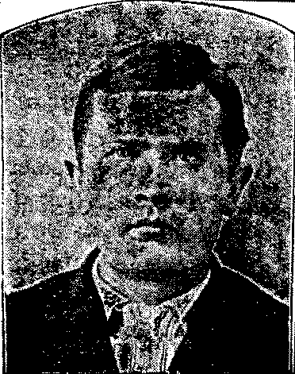
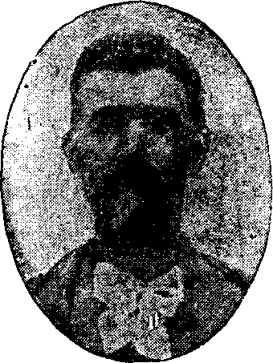
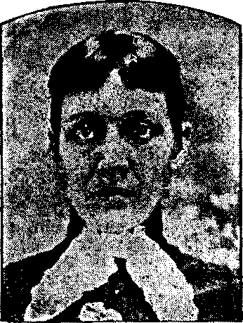
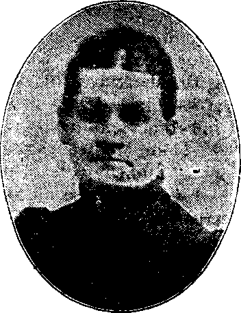
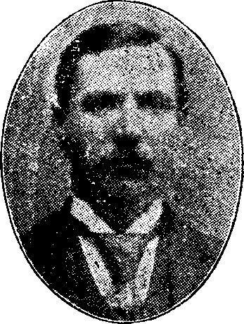
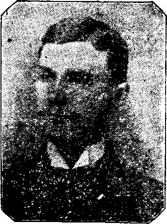
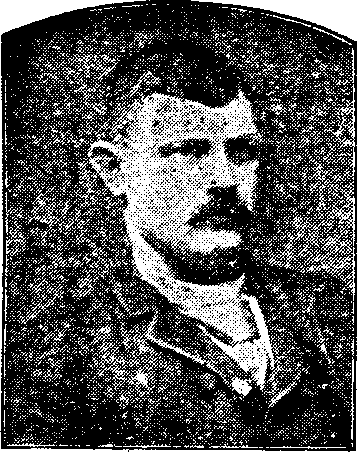
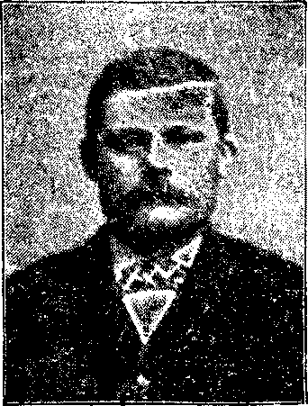
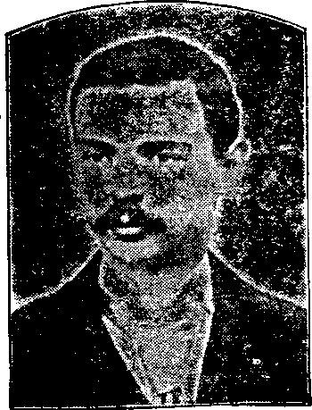

Mrs. Bosworth.
| << PREVIOUS | FIRST | NEXT >> |
| | 01 | 02 | 03 | 04 | 05 | 06 | 07 | 08 | 09 | | ||
Diseases of the heart are classified as either functional or organic We shall dwell only briefly upon purely functional derangements of the heart; as increased, or excited action, defective, or enfeebled action, and irregular action.
Increased action of the heart, indicated by palpitation, or increased number of the beats, may be caused mechanically, as by distention of the stomach, which, by preventing the descent of the diaphragm, excites the action of this organ. Or it may be a sympathetic disturbance produced through the nervous system; thus the emotions and passions may suddenly arouse the heart to excessive action; or the presence of worms in the intestines, improper food, and masturbation, may be the cause. The use of tea, tobacco, and alcoholic drinks excites the heart. We have found that the excessive use of tobacco is very frequently the cause of functional derangement of this organ. Deficiency of the blood, as in anæmia, may be the cause of palpitation of the heart.
Functional disturbance of the heart's action is manifested by palpitation, irregularity, intermissions, a rolling or tumbling movement, and a feeling as if the heart were in the throat. These symptoms often give rise to great apprehension, anxiety, fear, and depression of mind.
Treatment. The curative treatment of functional derangement of the heart must have reference to the causes producing it. If it is in consequence of indigestion, the appetite and digestion should be improved by observing regularity in the time of taking the meals, and eating very easily-digested food. The use of strong tea, coffee, tobacco, and spirits, should be interdicted, and regular exercise, rest, and sleep should be enjoined.
In all cases, the domestic management should include daily bathing, exercise in the open air, regular habits, and the avoidance of all causes which tend to excite the heart's irregularity.
The remedial treatment of these functional affections ought to be confided to some experienced physician, as the remedies are not within the ordinary reach of all families, nor if they were, would they have sufficient experience and knowledge to select and properly administer them.
By organic disease we mean disease pertaining to the structure of the heart itself, in contradistinction to functional disease, which has reference merely to the action of the heart. The heart is subject to various organic diseases, but we have only space to consider, in the briefest manner, those which are the most common. It is essential that the reader should have some knowledge of the anatomy and functions of the various parts of the heart in order that its diseases and their effects may be comprehended; therefore the anatomy and physiology of this [pg 548]organ, given in Part I, Chapter VII, of this work, should be carefully studied.
It is very evident that any disease which affects the structure and function of any part of the heart must, necessarily, give rise to certain modifications of the pulse, sounds, etc. It is through the observation and study of these modifications and changes that we arrive at a correct diagnosis as to the precise location and character of the disease.
Until within comparatively recent years, physicians were very much in the dark regarding diseases of the heart. Now, however, with a thorough knowledge of the anatomy, physiology, and pathology of the heart and the parts surrounding it, and with the aid of instruments which modern ingenuity has given us, we are able to diagnosticate with precision the slightest lesions of any part of this important organ, and, knowing their nature, to map out an appropriate course of treatment. With the aid of the stethoscope, invented by Laennec and improved upon by Camman, we are able to distinguish the slightest deviation from the normal sounds, and, by noting the character of the sound, the time when it occurs, the area over which It is heard most distinctly, and the direction in which it is transmitted, to locate the lesion which produces it. By the aid of the sphygmograph, first invented by Herrisson, and afterward improved upon by Ludwig, Vierordt, Marey, and lastly by Pond, of our own country, the pulsations at the wrist are registered, and thus made perceptible to the eye.
We herewith give a cut, Fig. 1, of Pond's instrument, and two tracings made by it. The first is a healthy tracing, and the second indicates enlargement, technically called hypertrophy, of the heart
Pericarditis, or inflammation of the membranous sac which surrounds the heart, may be either acute or chronic. The symptoms in acute pericarditis are made up from co-existing affections, and are frequently associated with articular rheumatism, Bright's disease of the [pg 549]kidneys, or pleuritis The intensity of the pain varies in different individuals. The action of the heart is increased, the pulse is quick, and vomiting sometimes takes place. When this disease is developed in the course of rheumatism, it is known as rheumatic pericarditis, and is almost always associated with endocarditis. In some cases acute pericarditis is very distressing, in others it is mild. The fatality is not due so much to the disease itself, as to co-existing affections. When it does not prove fatal, it sometimes becomes chronic.
In chronic pericarditis, pain is seldom present. The heart is generally more or less enlarged, its sounds are feeble, the first being weaker than the second.
Endocarditis, or inflammation of the membrane lining the cavities of the heart, is one of the most frequent forms of heart disease. It is almost invariably associated with acute rheumatism, or some of the eruptive fevers, as small-pox, scarlet fever, etc., and is due to the irritation of the unhealthy blood passing through the heart. The disease is generally attended with little or no pain, and, consequently, if the attending physician be not on the alert, it will escape his observation. When associated with acute rheumatism, the disease is only in rare instances directly fatal, but in the great majority of cases it leaves permanent organic changes, which sooner or later develop into valvular affections, and these may eventually destroy life. When the disease occurs, however, as the result of pyæmia (blood-poisoning produced by the absorption of decomposing pus or "matter") or of diphtheria, or when it is associated with any other septic conditions, it constitutes a very grave element. Collections of matter formed on the membrane lining the heart and covering its valves, are liable to be detached and carried by the circulation to the brain, spleen, or liver, where they plug up some artery, and thus cause death of the parts which it supplies with blood.
Chronic endocarditis generally occurs in rheumatic subjects, unassociated with any acute disease, It may exist without any marked symptoms, except, perhaps, a sense of oppression and uneasiness in the chest, with palpitation. It produces a thickening and hardening of the membrane lining the heart, and generally causes a retraction, adhesion, and degeneration of some of the valves of the heart, thus bringing on valvular disease.
Valvular Lesions are, as we have seen, very frequently the result of endocarditis. They are of two kinds. First, those which prevent the valves from flapping back close to the walls of the ventricles, or arteries, thus diminishing, to a greater or lesser extent, the size of the valvular orifices, and offering an obstruction to the free flow of blood through them; and which consist of a thickening and retraction, or adhesion of the valves, chalky deposits, morbid growths, etc. Secondly, those which prevent complete closure of the valves, and thus permit a return of the blood into the cavity from which it has just [pg 550]been expelled. These latter consist of retractions, perforations, and partial detachments of the valves, chalky deposits around the base of the valves and in them, and rupture of the chordæ tendineæ.
These two forms of lesions are usually co-existent, one generally being more extensive than the other. Thus, the regurgitation may be slight, and the obstruction great, or vice versa. The symptoms and disturbance of the circulation are altogether dependent upon the location and form of the lesion, or lesions. Each valvular lesion has its characteristic sound, or murmur, which is heard at a particular period in the cycle of the heart's action, and it is, as before stated, from these sounds, from tracings of the pulse, and from the many other indications, that we arrive at a diagnosis. Thus, in obstruction of the orifice at the junction of the aorta with the left ventricle, one of the most frequent of valvular lesions, a murmur, generally harsh in character, is heard with the first sound of the heart, with greatest intensity directly over the normal position or the aortic semilunar valves. This is conveyed along the large arteries, and may be heard, less distinctly, over the carotids. In the sphygmographic tracing, the line of ascent is less abrupt than in the normal tracing (Fig. 2), and not nearly so high, and it is rounded at the top. In aortic regurgitation, the line of ascent is similar to that of the healthy tracing, but the line of descent is very sudden. The left side of the heart is almost invariably the primary seat of these affections, but in the latter stages of their course, the right side also is liable to become involved, and, as a consequence, there then exists great disturbance of the venous circulation, with a damming back of the blood in the veins, and passive congestion of the liver, kidneys and brain, followed by dropsy, albumen in the urine, etc.
Fig. 2.
The above is a representation of a tracing of a healthy pulse as made with
the Sphygmograph.
Hypertrophy of the Heart consists of a thickening of the muscular walls of this organ. It may be confined to one portion of the heart, or it may affect the entire organ. The affection has been divided into the following three forms: Simple hypertrophy, in which there is an increase in the thickness of the walls of the heart, without any augmentation in the capacity of the cavities, and which is usually the result of chronic Bright's disease, or great intemperance; eccentric hypertrophy, in which there is an increase in the thickness of the walls of the heart, together [pg 551]with increase in the capacity of the cavities, and which is generally the result of some valvular lesion; and concentric hypertrophy, in which there is an increase in the thickness of the walls of the heart, with a decrease in the capacity of the cavities. Valvular lesions, obstructions in the large arteries, or, in fact, any thing which calls upon the heart to constantly perform an undue amount of labor must, necessarily, produce hypertrophy of its muscular walls, just as the undue amount of labor which the blacksmith's arm is called upon to perform produces hypertrophy of its muscles. With this condition, the pulse is hard and incompressible, and the line of ascent in the sphygmographic tracing (Fig. 3) is higher than in health.
Dilatation of the Heart is a condition which is closely allied to hypertrophy of the heart, and which consists of an increase in the capacity of the cavities of the heart, with diminished contractile power. In simple dilatation, there is an increase in the capacities of the cavities, without any marked change in the walls of the organ. It is usually the result of some disease which has produced great muscular prostration, and which has interfered materially with nutrition. More frequently, however, dilatation is the result of valvular lesions, and is associated with hypertrophy, there being an increase in the thickness of the walls with a diminution of the contractile power. The hypertrophy from valvular lesions goes on increasing until it reaches a certain stage, when dilatation commences, the two conditions then being associated.
Atrophy of the heart is the opposite to hypertrophy, and signifies a wasting away of the muscular substance, and a diminution in the thickness of the walls of the heart. Its power is diminished in proportion to the degree of atrophy.
Fatty Degeneration of the heart consists in the deposition of particles of fat within the sarcolemma (the sheath which invests the fibrils), which are substituted for the proper muscular tissue. If the fatty degeneration exists to any extent the muscular walls present a yellowish color, and the heart is soft and flabby. This may be confined to one ventricle, or it may affect the inner layer of fibres, the outer layer remaining unchanged. Degeneration of the left ventricle occasions feebleness of the pulse. Difficulty in breathing is one symptom of this disease, especially when the right ventricle is affected. There is pallor, feeble circulation, cold extremities, and frequently dropsy. [pg 552]Fatty degeneration is more liable to occur in corpulent persons, and between the ages of forty and fifty years.
Angina Pectoris, also termed neuralgia of the heart, might be included among the diseases of the nervous system, but as it is usually associated with a derangement in the action of the heart, it may be properly considered in this connection. The pain varies in intensity, sometimes being very acute, at others assuming a milder form. The action of the heart is more or less disturbed. The beats are irregular, at times being strong, while again they are feeble. A feeling of numbness is experienced in those parts to which the pain penetrates. These paroxysms usually continue but a few minutes, although they sometimes last several hours. Persons suffering from angina pectoris are liable to sudden death. It is connected with ossification, or other organic changes of the heart. Usually these paroxysms, if the life of the patient continues, become more and more frequent. The danger is not to be measured by the intensity of the pain, but by the co-existing organic disease. Although it is not absolutely certain that organic disease is present in all cases of angina pectoris, yet the exceptions are so rare that when the signs of organic disease cannot be detected, it may be inferred that angina is not the real affection, or that the existing lesions escape observation. Those who suffer from this disease are, in the great majority of cases, of the male sex, and rarely under the age of forty.
Treatment. In the foregoing consideration of organic diseases of the heart, we have omitted to speak of their remedial management, for the obvious reason that unprofessional readers are unable to correctly distinguish between the various diseases of this vital organ; and it would, therefore, be useless for us to attempt to instruct them as to the medicinal treatment of the different cardiac affections.
In the vast majority of instances, diseases of the heart are not necessarily speedily fatal. Persons have been known to live twenty years or more with very extensive organic disease of this organ.
It is very important, however, that a correct diagnosis be made in the early stages of these diseases, in order that an appropriate course of hygiene and treatment may be adopted, which will check their progress. While we cannot cure extensive organic diseases of the heart, we can check their progress, and prolong life, and render the condition of the subject comparatively comfortable. Since we are able to diagnosticate with the utmost precision the various affections of the heart, and since the discovery of certain specific medicines which exert most beneficial effects, we are enabled to treat this class of maladies with the most gratifying results. Thus we have seen a case in a very advanced stage of the disease, with the breathing so difficult that the subject had been compelled to remain almost constantly in the sitting posture, in the greatest agony, for so long a time that immense bed sores had formed on the seat; in which the dropsy had become so extensive that [pg 553]the skin of the legs had burst open; and yet this patient, through the influence of a specific course of treatment, was speedily relieved, and enabled to live in a comparatively comfortable condition for many months.
One afflicted with heart disease should abstain from the use of all kinds of stimulants, tobacco, and whatever tends to lower vitality. His life should be an even one, free from all excitement of any kind whatsoever. He should avoid severe physical exertion, and everything which causes the heart to beat with undue frequency.
There are certain symptoms, the result of chlorosis (the green sickness), a deficiency of blood, dyspepsia, uterine disease, and certain nervous affections, which may simulate those of real organic disease, but the physician of education and experience, with a trained ear, is able to detect the difference speedily.
Stomatitis, or inflammation of the mucous membrane of the mouth, may include the entire surface of the gums, tongue, and cheeks, or appear only in spots. Vesicles are formed, having swollen edges and a white or yellow center, which finally ulcerate. When mild, the affection is confined to these parts.
If the inflammation is acute, the mouth is dry and parched, or as is more frequently the case, the flow of saliva is abundant and acrid, and, when swallowed, irritates the stomach and bowels, producing fever, diarrhea, griping pains, and flatulency. The tongue is either coated white or red, and is glossy, and the sense of taste is considerably impaired. Digestion and nutrition are then disturbed, and the patient becomes rapidly emaciated.
Thrush, or Canker, is that form of stomatitis in which white ulcers locate on the inner side of the upper lip, the tongue, or roof of the mouth; the irritation which they cause not only interferes with eating, but produces fever, together with the symptoms previously mentioned.
Apthæ, or follicular inflammation, is distinguished by very painful little ulcers, single or in clusters, scattered over the surface of the tongue and lining of the mouth. Sometimes it is complicated with little lumps in the tongue. These form ulcers and denote scrofulous inflammation. Fissures and cracks in the tongue indicate derangement of the stomach.
The Causes of stomatitis, in nursing infants, are unhealthy milk, or effete matter, which, for lack of proper care and cleanliness, accumulates upon the nipple. In older children, improper diet, irritants, debility of the digestive functions, or hereditary syphilitic taint, disorder the blood and induce local inflammation.
Treatment. Locally, use a wash of golden seal or gold thread sweetened with maple-sugar, and rendered slightly alkaline with borax or saleratus. Also use a very weak, alkaline tea, or one of slippery-elm [pg 554]flour, to obviate the acridity of the secretions. If the sores do not heal, constitutional treatment may be required, as the use of the Golden Medical Discovery. The family physician should be consulted if the sore mouth resists all these remedial measures.
During the period of nursing, and sometimes in the latter months of pregnancy, women are liable to a peculiar variety of sore mouth. The soreness is sometimes so great that, although the appetite may be ravenous, the patient cannot eat. When this condition extends to the stomach and bowels, symptoms of a very grave character appear, and the disease, by interfering with the process of nutrition, causes emaciation and debility, and in extreme cases, death. It is a strange affection, nearly always disappearing upon weaning the child, though this course is not absolutely necessary. It appears to depend upon a hepatic, or gastric derangement, in connection with a vitiated condition of the blood, but how this is brought about is unknown.
Symptoms. The disease sometimes comes on suddenly, at others more slowly. The fact that the woman is either pregnant or nursing, is of importance in forming a diagnosis. At first there is a severe, scalding sensation of the tongue, mouth, and fauces, with pain, which is sometimes intense. The color of the tongue is often pink, or a light red, while the mouth is generally of a deeper hue. This stinging, biting sensation is accompanied by a profuse, watery discharge from the mouth, which seems extremely hot and acrid, causing excoriation whenever it comes in contract with the face or chin. The appetite is good, sometimes ravenous, but food or drinks, except of the blandest character, occasion such intense pain that the patient avoids their use. Ulceration occurs after a little time. The bowels are generally constipated, but when the disease extends to the stomach or intestines, diarrhea occurs. There is generally anæmia, debility, and impairment of the vital powers.
Treatment. The indications for treatment in this affection are to overcome the vitiated condition of the blood, and to sustain the vital powers. The remedies for this purpose are alteratives, antiseptics, and tonics. Give the Golden Medical Discovery, the value of which may be greatly enhanced by adding one-half ounce of the fluid extract of baptisia to each bottle, in doses of a teaspoonful four times a day. Chlorate of potash, half an ounce in a pint of water, used as a wash and gargle, is of great value. A teaspoonful of the same may be swallowed several times a day. This will not interfere with other medicines. As a tonic, the tincture of the muriate of iron, in five to ten-drop doses, diluted with water, may be taken three or four times daily. Quinine, in one or two-gram doses, should be given with the iron if the debility be extreme. When there is great acidity of the stomach, which may be known by heart burn, saleratus may be taken in water, to neutralize it, [pg 555]but should not be drunk within an hour of the time for taking other medicines. If constipation exists, use the Pleasant Pellets. This course of treatment, thoroughly carried out, will seldom fail to effect a perfect cure, without weaning the child, yet this latter course may sometimes become advisable to promote the recovery of the patient. Should the treatment advised not produce the desired result, a skillful physician's services should be secured, as he may, in individual cases, distinguish other important indications which may enable him to modify the treatment to advantage.
These diseases are usually considered separately by medical writers but, as they are closely related, a simple diarrhea not unfrequently running into a cholera infantum or a dysentery, we shall consider them together.
Diarrhea is an affection characterized by unnaturally frequent evacuations from the bowels of a liquid of morbidly soft consistency. It may be simple or inflammatory, and acute or chronic.
A diarrhea is said to be bilious when the discharges are composed principally of serum, highly colored with yellow or green bile; catarrhal, when they are of a semi-transparent, mucous character; serous, when the dejections are thin and watery, sometimes mixed with blood, bile, or ingesta.
The symptoms of the affection are usually at first those of indigestion, a fullness of the stomach, flatulency, and colicky pains. The pains, which precede each evacuation, are intermittent in character. There may be an unpleasant sinking sensation in the abdomen, and, with the discharge, exhaustion, a feeble pulse, and a cool skin. In the inflammatory variety, there is more or less fever.
Cholera Infantum, or summer complaint, is a disease peculiar to the warm season, and more prevalent in cities, and among those children who do not nurse at the breast. It is characterized by great irritability of the stomach, and persistent vomiting and purging, the discharges from the bowels being copious and watery, and sometimes containing specks of curd, yellowish-green matter, and mucus. The limbs of the little sufferer are usually drawn up, indicating pain in the bowels, and there is great prostration with cold extremities. The invasion may be so sudden, and the disease so violent as to destroy life in a few hours.
Dysentery, also known as bloody-flux, consists of an inflammation of the mucous membrane of the large intestine, with ulceration of the affected surfaces. The disease is accompanied with much nervous prostration, and is distinguished by severe pains in the abdomen of a griping nature, followed by frequent scanty and bloody stools, and [pg 556]much straining. Occasionally the attack is ushered in with a chill and aching pains in various parts of the body, with copious fecal dejections. In other cases the attack is preceded by loss of appetite, a sense of uneasiness with dull pains in the abdomen, and weariness. The disease, like diarrhea, may be either acute or chronic.
The Causes of these affections of the bowels are many and varied. They may be brought on by exposure to cold and wet, or by improper and indigestible articles of food, such as unripe fruits, salads, pastries, and, in fact, anything which interferes with the normal operations of the digestive apparatus. One of the most fertile sources of diarrhea in infants, and of cholera infantum, is the administration of unsuitable food, the ill effects of which are greatly increased by exposure to heat or cold. Uncleanliness, and the inhalation of impure air, are prolific causes Of these diseases. Epidemics have been supposed to be due to some peculiarity in the condition of the atmosphere, or to some impalpable germ of a vegetable or animal nature.
Treatment. In the treatment of these diseases, one should first endeavor to ascertain the cause of the trouble, and then, if possible, effect its removal. Attention should be given to the hygienic surroundings of the individual afflicted; if he reside in a miasmatic district, or in a location in which the atmosphere is contaminated by the decomposition of animal or vegetable matter, or filled with noxious gases, his abode should be changed. A pure, dry air is most beneficial in these cases.
Only the least irritating and most easily digestible articles of food should be taken. Healthy cow's milk is slightly alkaline, but that of cows fed on slops is usually acid, and unfit for infants. It is, therefore, well to test all milk with blue litmus paper before feeding it to young children. If found to be strongly acid, that is if it turns the paper red, it should be rejected, but if only slightly so, sufficient lime water may be added to render it slightly alkaline. For adults and older children, the diet should consist of such starchy foods as arrow-root, sago, corn starch, and rice, and of ripe grapes, freed from the skins and seeds, peaches, and boiled milk, or milk and lime water. In some cases the animal broths are beneficial, especially mutton broth. To quench the thirst, crust coffee, rice coffee, and lemonade, in small quantities, may be taken.
Rest is important in these diseases. In severe cases, the patient should be kept in bed.
At the onset of an attack of diarrhea or dysentery, if there be reason to believe that the intestinal tract contains irritating matter, a dose of castor oil, with a few drops of anise oil added to render it palatable, should be administered. After all irritating ingesta have been removed, Dr. Pierce's Compound Extract of Smart-weed should be given in doses proportionate to the age of the patient, and the severity of the case. Being composed of the extract of smart-weed, or water pepper, [pg 557]Jamaica ginger, camphor, and genuine French grape brandy, it exerts a most wonderful effect not only in those diseases but in cholera morbus and intestinal colic. It allays the irritation and inflammation of the affected mucous surfaces, and soothes the nervous system. In the great majority of cases, the above course of treatment will be found sufficient, but in the more severe forms of these diseases additional remedies may be required.
In dysentery, accompanied with severe pain and straining, injections of starch water and laudanum, from two to four ounces of the former to from twenty to fifty drops of the latter should be used.
Hot fomentations applied to the abdomen are beneficial. If the discharges contain much blood, a flannel cloth moistened with the spirits of turpentine should be laid over the lower part of the abdomen, and kept there until slight irritation is produced.
Lime water, bicarbonate of soda, bicarbonate of potash (saleratus), chalk, and the subnitrate of bismuth are valuable agents to correct the secretions, and allay irritation of the diseased mucous surface. The above-named preparations of soda, potash, and bismuth may be taken in doses of from five to twenty grains every few hours.
Blackberry root and cranesbill (Geranium Maculatum), in the form of fluid extract or infusion, are beneficial in acute cases in which the discharges are profuse and watery, and in the chronic forms of these affections.
In cholera infantum subnitrate of bismuth should be given in doses of from five to ten grains at intervals of from two to four hours. If the discharges are very profuse, the fluid extract of cranesbill may be administered in from two to ten-drop doses alternately with the bismuth. The camphorated tincture of opium (paregoric) is required in doses of from two to twenty drops, depending upon the age of the child and the severity of the case, if there is much pain, but great caution should be exercised in administering the preparations of opium to children. A single drop of laudanum given to a young infant has caused convulsions, coma, and death in more than one instance. To check the vomiting of cholera infantum, mild irritation over the stomach is sometimes effectual. For this purpose a weak mustard plaster, or a cloth moistened with turpentine, may be laid over the stomach for a few minutes at a time. If the child is old enough to suck pellets of ice, these are beneficial, or a piece can be wrapped in a cloth and sucked.
Colic is a term applied to griping pains in the abdomen, which are sometimes accompanied with nausea and vomiting. The derangement is recognized in several forms, some of which we shall briefly describe.
Bilious Colic. This may be the result of a morbid condition of the liver.
Symptoms. It is characterized by severe pain occurring in paroxysms, [pg 558]which may be relieved by pressure upon the bowels. The pulse is quick, the tongue coated, and the skin harsh and dry; there is headache, impaired appetite, acrid taste in the mouth, thirst, nausea, attended with vomiting and general chilliness, followed by febrile symptoms.
Cause. It may be induced by exposure to cold, in consequence of which the circulation is impeded, the pores of the skin obstructed, and all of the vitiated matters having to be expelled through the liver, stomach, and intestines. It may also be due to malaria in the atmosphere. It most commonly occurs during the autumn, after a season of hot weather.
Flatulent Colic. Flatulent or "wind" colic is one of the results of indigestion.
Symptoms. A sense of fullness in the pit of the stomach, attended with pain, which is transferred from one part of the bowels to another. There is fever, a quick pulse, nausea, and the presence of gas; by the latter feature it may be detected from the other forms.
Causes. Cold or atmospheric changes, the eating of unripe fruits, uncooked vegetables and those articles of diet which ferment easily, are the principle causes.
Painter's Colic. This form is also known by various names, such as colica pictonum, saturnine, or lead colic. Those persons who are engaged in the manufacture of lead, and painters, are the most frequent victims of this affection.
Symptoms. Impaired appetite, fetid breath, thickly coated tongue, obstinate constipation, a dry skin, scanty urine, languor, severe pain in the umbilical region, and general derangement of the functions of the system.
Causes. From the term applied to this form, the cause may be inferred. It is induced by the absorption of lead through the lungs, stomach, and skin.
Treatment. The indication to be fulfilled in bilious colic is to relieve the intestinal spasm. This may be done by drinking freely of a decoction of yam-root, or dioscorea villosa, which is an effectual remedy in this affection. If this be not at hand, the spasm may be relieved by administering freely of Dr. Pierce's Extract of Smart-Weed. If the stomach be irritable, a tablespoonful of laudanum and one of tincture of lobelia, in four ounces of starch water, administered as an injection, is effectual. If simple means do not promptly arrest the attack, no time should be lost in summoning the family physician.
In flatulent colic, the treatment should depend upon the cause. If it be occasioned by cold, a teaspoonful or two of the Extract of Smart-weed, in warm water or catnip tea, repeated a few times, will be sufficient. If it result from overloading the stomach, a dose of the Pleasant Pellets will answer the purpose. If the pain in the abdomen is severe, apply hot fomentations. Assist the action of physic, by giving an injection [pg 559]of senna and catnip tea, or if the stomach is very sour, take internally some mild alkali, such as common saleratus.
In painters' colic, the following cathartic mixture is an effectual remedy: sulphate of magnesia (epsom salts), twelve ounces; nitrate of potassa (saltpeter), half an ounce; sulphuric acid, one drachm; boiling water, one quart. Of this remedy give a teaspoonful every thirty minutes or every hour, until the bowels move. An injection of some diaphoretic tea, or of alum water, is a good remedy. Castor oil and molasses, containing a teaspoonful of spirits of turpentine, will add to the efficiency of an injection. If the colic be not promptly relieved, a physician should be employed. To eliminate the lead from the system, and thus prevent a return of the colic, or other injurious effects, two drachms of iodide of potassium should be added to a bottle of the Golden Medical Discovery, and a teaspoonful of this taken four times a day.
This affection is generally regarded as a symptom of disordered liver, since it frequently occurs during the progress of diseases of that organ. When the disease imparts a greenish tinge to the skin, it is termed green jaundice, and, when it imparts a blackish color, it is known as black jaundice. Jaundice is undoubtedly due to the presence of biliary elements in the blood.
Causes. In consequence of the varied conditions from which it arises, Professor Da Costa has aptly remarked: "With the recognition of jaundice, the difficulty in diagnosis may be said to begin." He considers the causes of jaundice to be (1) diseases of the liver; (2) disease or the bile ducts; (3) diseases remote from the liver, or general disease leading to a disorder of that viscus; (4) certain causes acting upon the blood.
Symptoms. It is characterized by a yellowish color of the skin and of the white of the eyes. The skin is usually dry and harsh; if it be moist, the linen will be tinged yellow from the perspiration. The tongue is coated yellow, the mouth is dry, and the appetite impaired; there is headache, nausea, and sometimes vomiting; there is pain in the abdomen after eating, and in the region of the liver, and it is also felt in the right shoulder, and between the shoulder-blades. In severe cases, there is fever, accompanied with chills, despondency and loss of flesh. The stools are generally of a light clay color, and very offensive; the urine is thick and yellow. When the disease terminates fatally, there is delirium followed by stupor.
Treatment. The first step should be to eliminate from the system, as speedily as possible, all noxious materials. For this purpose, the spirit-vapor bath should be used. If the urine is scanty or voided with difficulty, take acetate of potash or queen of the meadow. These may [pg 560]be taken in connection with the Golden Medical Discovery and Purgative Pellets, the efficacy of which has already been described in the treatment of chronic inflammation of the liver. They are indeed valuable agents in this disease, since they increase the action of all the excretory glands, and rapidly remove those matters, which, if retained, would poison the system.
In some cases, acids are of great value; good hard cider or hydrochloric acid and the acid bath are frequently valuable agents.
In other cases the employment, both internally and externally, of alkalies in addition to the Golden Medical Discovery answers the purpose much better.
Again, there are persons who, in addition to alteratives and baths, require tonics. In the treatment or this affection, whatever may be the nature of the case, the use of alteratives must not be forgotten, for without them, the auxiliary treatment with acids, alkalies, and tonics, will not produce the desired effect.
The employment of drastic remedies is sometimes resorted to; but, although they may give temporary relief, the patient soon relapses into his former condition, while if the treatment above given be adopted, the recovery will be permanent.
These are concretions found in the gall-bladder or bile duct, and vary from the size of a pea to that of a hen's egg. There may be no indication of their existence in the gall-bladder until they begin to pass through the duct.
Causes. The formation of gall-stones is undoubtedly due to an unhealthy condition of the bile. Corpulent persons, and those indulging in over-stimulating diet, or in the habitual use of fermented drinks, are most liable to be troubled by them.
Symptoms. The patient is suddenly seized with excruciating pain in the right side. After a time it subsides, but is again renewed with as great severity as before. There is nausea, with vomiting, which is often excessive and severe. The pulse is sometimes slower than is natural, the extremities are cold, there is great exhaustion, together with perspiration and spasmodic contraction of the abdominal muscles. As soon as one stone has passed through the duct into the intestine, immediate relief is experienced until another commences to pass, and the larger the concretion, the greater is the pain. If the stools be washed, the gall-stones may be seen floating on top of the water.
Treatment. This consists chiefly in relieving the patient of pain and vomiting during the passage of the gall-stones. Hot fomentations made with stramonium leaves and lobelia, and applied over the painful parts, are beneficial. Small doses of lobelia may be taken, but not in sufficient quantities to produce vomiting. Doses of opium should also [pg 561]be taken; this anodyne must, however, be used with care. Gelseminum is often useful. Chloroform, ether, or the spirit vapor-bath generally allays the pain. Carbonate of soda, dissolved in water, often relieves the vomiting.
These distressing symptoms are apt to recur until the removal of all the gall-stones is effected. To aid in removing them, take the Golden Medical Discovery rather freely for a day or two, and continue its use with lobelia, in doses sufficiently large to produce nausea, but not vomiting. From four to eight ounces of sweet oil may be given, and, if the bowels do not respond within three hours, repeat the dose, and the gall-stones will generally be evacuated. To prevent the formation of these concretions take the Golden Medical Discovery, together with alkaline drinks made with carbonate of soda. Tone and energy will thereby be imparted to the liver, the free flow of bile will be insured and the subsequent formation of gall-stones prevented.
We have not the space to discuss the numerous theories which have been offered to account for the presence of these parasites in the human body. We shall enumerate the principal species, describe the symptoms indicating their presence, and indicate the proper remedies.
There are five species of intestinal worms, sufficiently common to merit a description.
(1.) The round worm, termed by naturalists, ascaris lumbricoides, varies from six inches to a foot in length, and resembles the common earth-worm. It infests the small intestines, and seldom migrates into the stomach or large bowel. Instances are recorded, however, in which it has crept upward in the esophagus, larynx, nostrils, and eustachian tube; but their presence in these parts is of comparatively rare occurrence, and is generally caused by some local irritation which compels their migration. The fact that they have been found in the peritoneal sac, gave rise to the opinion that they perforate the intestine; but careful observations have proved that they can only escape through openings made by ulcers.
This species has been found in adults, but is more common in children from three to twelve years of age. The number of this species existing in a human body is variable. Sometimes only two or three are found. At other times a hundred, and even twice that number, are voided in a few days.
(2.) The ascaris vermicularis, thread, pin, or seat-worm, is round, very slender, and about half an inch in length. The habitation of this species is the rectum, and they are often found matted together in the excrement. They are very active, even after ejection, and have been known to cause great local irritation by entering the vagina and urethra. Their presence is an occasional cause of masturbation. It [pg 562]is impossible to estimate the number of these parasites that may exist in the human rectum. Great numbers, sometimes, are voided at a single evacuation.
(3.) The tricocephalus dispar is a third variety of the round worm, and is said to infest the bodies of almost every species of mammalia. As its name indicates, the upper portion of its body is slender, hair-like, and terminates at the lower extremity in a thick, spiral portion. It is from one to two inches in length, and is found attached by its head to the mucous membrane of the cæcum, and, in rare instances, in the colon and small intestine. They are rarely numerous.
Tæceniæ or tape-worms, are hermaphrodites, of a flat, ribbon-like form, and are composed of numerous segments, each of which is provided with a complete set of generative organs, and contains ova for the production of thousands of individuals. Some authors have supposed that each segment, or joint, is a distinct individual, but the existence of one head for the whole precludes this theory. There are two species of tæniæ developed in the human intestine; the tænia solium and the tænia lata.
(4.) The tænia solium is the species commonly found in America and all the countries of Europe, except France, Russia, and Switzerland. In France, both species are found, but the tænia lata seems to be indigenous to Russia and Switzerland.
The tænia solium varies in length from four or five to thirty, thirty-five, or even forty feet. The head is hemispherical and armed with a double row of twenty or thirty hooklets. The genital organs are alternate and placed upon the outer edges of each segment. It inhabits the small intestine, and is usually solitary.
(5.) The tænia lata, or broad tape-worm, is distinguished by the greater breadth of its segments, and the location of the genital organs, which are found in the centre of each segment. Its small elongated head is unarmed, and has a longitudinal fissure on each side. It usually attains a greater length than the tænia solium.
Symptoms. The symptoms which the long worms occasion, are frequently somewhat obscure. Thirst, irregular appetite, colicky pains, excessive flow of saliva, enlargement of the abdomen, itching of the nose, pallor of the face, offensive breath, disturbed sleep, and grinding of the teeth, all are common symptoms. Occasionally, convulsions and other nervous affections are produced by the presence of the ascaris lumbricoides, but generally they produce less constitutional disturbance than the other varieties. The passage of this species of worms from the bowels, or their ejection from the stomach, is the only positive evidence of their presence. The ascaris vermicularis, thread, pin, or seat-worm, gives rise to most of the symptoms produced by the long worms, but in addition produces intense itching at the anus, and, not unfrequently, an eruption upon that part. The itching is particularly distressing at night. When the little sufferer is well covered, the [pg 563]warmth occasioned by the bed-clothes causes these little parasites to crawl out upon the anus, and produces such paroxysms of itching and pain as to cause the child to kick the covering oft and lie naked. The persistent manifestations of a disposition to lie naked, should excite the parents' suspicions of seat-worms, and lead them to investigate all the symptoms. By examining the child's stools the worms may he found adhering to the feces, and they may also be seen on the anus. Thousands of children suffer untold agony from these little seat-worms, which are left unmolested to torment them, because the parents are unfamiliar with the meaning of the symptoms manifested, and therefore pay no heed to them. We have been thus particular in describing the symptoms indicating the presence of these pestiferous parasites, in order that they may be readily detected.
The Symptoms produced by the tape-worm are dizziness, ringing in the ears, increased secretion of saliva, indigestion, ravenous appetite, sharp abdominal pains, and emaciation. The only positive sign of the presence of these parasites, is the passage of pieces of them in the feces. The nervous and other symptoms produced by the ordinary long worms are also caused by the tape-worm.
Causes. Careful observations have proved that there are certain causes which favor the generation or development of intestinal worms. Among others, we may mention fatty or farinaceous articles of food, gormandizing, constant exposure to a moist atmosphere, and sedentary habits.
It is now generally conceded that the development of tape-worms is due to the swallowing of an egg or germ-cell, which is contained in many kinds of animal food, and which the process of cooking has failed to destroy. People living near low marshes, lakes, or the seacoast, are liable to tæniæ.
Treatment. The expulsion of the ascaris lumbricoides may be very easily and pleasantly effected. Santonin is an effectual remedy for this variety of worms. For a child three years old, take santonin, six grains; podophyllin, one grain; white sugar, thirty grains; mix, triturate, and divide into twelve powders, and give one every three or four hours, until they act upon the bowels; or take santonin, ten grains; white sugar, twenty grains; mix, triturate, and divide into ten powders, and give one every night at bed-time, and after giving two or three in this way, administer a mild cathartic. As santonin is almost entirely tasteless, if not combined with other medicines which are unpalatable, no difficulty will be experienced in administering it to children. By reference to the article on anthelmintics in this volume, other valuable vermifuges may be selected, and directions found for their employment.
In the removal of thread or pin-worms, anthelmintic medicines taken into the stomach are of little or no value. An injection of a strong solution of salt, is a very efficient remedy. A teaspoonful of turpentine in half a pint of milk makes a good injection. Strong coffee has been [pg 564]recommended as an injection. The anus should be well anointed with vaseline, lard, oil, or fresh butter, after each movement of the bowels. Whatever injection or remedy is used, it should be followed by the application of some ointment to the anus, otherwise they will continue to deposit their eggs about that orifice and multiply there.
Various remedies have been used to destroy tape-worms. Among others we may mention the old and time-honored remedy, which consists of two or three ounces of the oil of turpentine, taken in castor oil or some aromatic tincture.
A decoction made by boiling two or three ounces of freshly powdered pomegranate bark in a pint of water was used by the ancients, and is now highly recommended as a remedy.
Some American physicians have used an emulsion of pumpkin seeds with marked success.
Twenty or thirty grains of the extract of male fern, followed by a cathartic is highly recommended for the destruction and removal of tæniæ.
In 1835, Owen discovered a peculiar parasite, which sometimes infests the human body, and is termed the trichina spiralis. The presence of these parasites has given rise to morbid conditions of the system, followed by the most serious results. They are developed in the alimentary canal, and then perforate its tissues and enter the muscles. Twelve trichinæ have been found in a section of human muscle only one-twelfth of an inch square and one-fifth of an inch in thickness.
The early symptoms of trichinæ are very uncertain, being the same as those of some other disease. The patient complains of severe pain in the abdomen and is troubled with diarrhea. When the trichinæ pass into the muscles, they occasion great suffering. There are sharp pains in the muscles, the perspiration is profuse, and the patient becomes exhausted.
Cause. Nearly every case of trichinæ, which has been brought to the notice of the profession, has been attributed to the eating of raw or improperly cooked pork. The parasites can only be detected with a microscope.
Treatment. The impossibility of removing the trichinæ after they have passed into the muscles is apparent; and, as yet, no special remedy has been recommended to remove them from the alimentary canal. The only safety lies in prevention. Hence raw or imperfectly cooked pork should never be eaten.
[pg 565]It is generally conceded that a multitude of human ailments arise from indigestion, and in its various forms it taxes the skill of the physician to prescribe the proper remedies. It is undeniable that the closest intimacy exists between happiness and good digestion. A healthy digestion aids materially in making a cheerful disposition, and the "feast of reason and flow of soul" is due as much to the functional integrity of the stomach as to a strong and generous mental organization. Dr. Johnson severely said: "Every man is a rascal as soon as he is sick." We all know that a morbid condition irritates the individual and excites sarcastic and disagreeable remarks. And, likewise, an irritable temper and, suddenly aroused passions may not only turn and disturb the stomach, but even poison the secretions. Anxiety, excitability, fear, and irritability frequently cause the perversion of physiological processes.
The slightest functional disturbance of the stomach deranges, more or less, all the succeeding operations of digestion and tends to the vitiation and impairment of the delicate processes of nutrition. Dyspepsia may commence and proceed so insidiously as not to excite the suspicion of friends, although the patient generally desires active treatment, such as cathartics, emetics, and medicines to act upon the liver. When the disease becomes confirmed, it presents some of the following symptoms: Weight, uneasiness, and fullness in the region of the stomach, attended by impatience, irritability, sluggishness, anxiety, and melancholy; there is impairment of the appetite and taste, also sourness, flatulency, and, perhaps, frequent attacks of colic, loss of hope, courage, and energy; apathy, drowsiness, and frightful dreams are also symptoms common in the different stages of this disease. There are, furthermore, the accompanying symptoms of a coated tongue, bitter taste in the mouth, unpleasant eructations, scalding of the throat from regurgitation, offensive breath, sick headache, giddiness, disturbed sleep, sallow countenance, heart-burn, morbid craving after food, constant anxiety and apprehension, fancied impotency, and fickleness. The subjects of dyspepsia frequently imagine that they require medicines to act upon the liver, desire active treatment, are endlessly experimenting in diet, daily rehearse their symptoms, and are morbidly sensitive.
Causes. Overtasking the body or mind, overloading the stomach, the use of improper food, such as stale vegetables and meat, unripe fruits, indigestible articles, improperly prepared food, irregular meals, disorderly habits, the use of alcoholic stimulants, loss of sleep, masturbation irritability of temper, anxiety, or grief may all give rise to indigestion. [pg 566]If the functions performed by the skin are embarrassed by cold, tight clothing, or lack of cleanliness, the nutritive changes cannot properly take place throughout the body, and consequently the digestive functions are embarrassed, as the revolutions of a water-wheel are impeded by the backset of the water. When food is not thoroughly masticated, it is not properly mixed with saliva of the glands of the mouth, and is not prepared for digestion by the acids of the stomach.
Whatever diminishes the general strength, impairs the health, or encroaches upon the functions of life, also hinders the perfect solution of food and disturbs in a measure the function of digestion. Whatever diminishes the normal amount of the digestive secretions or perverts their quality, deteriorating their solvent properties, is a cause of dyspepsia. This should be borne in mind in selecting remedies.
Treatment. The hygienic treatment consists in the regulation of the daily habits, proper selection and preparation of the food, cultivation of cheerfulness, diversion of the mind, and cleanliness of person. We cannot give particular directions as to the kind of diet, as there are no established rules for guidance. Generally, a dyspeptic knows best, from experience, what articles of diet can be taken with the least injury. The directions applicable to the condition of one patient, are not suited to those of another. In dyspepsia, animal food is, as a rule, preferable. Foods rich in starchy matter often ferment and produce distress. Sometimes alkalies may be given with beneficial effect, when there seems to be an excess of acid in the gastric secretions.
In some cases, the digestive fluids are weak and fermentation results, giving rise to flatulency and belching. An antiseptic, which may be prepared by mixing a teaspoonful of hydrochloric acid with four ounces of water, of which a teaspoonful may be taken after each meal, will prove beneficial to check the fermentation and aid digestion. The addition of one or two drops of a mixture of one part of carbolic acid and six of glycerine, to the above solution of hydrochloric acid improves its antiseptic properties. Or, Dr. Pierce's Golden Medical Discovery will stop undue fermentation, and from its tonic and invigorating effect upon the lining membranes of the stomach will generally overcome the indigestion. Some people are afraid to take it, when suffering from indigestion, because it has a sweet taste. But the sweet is not saccharine, or sugar sweet, but an entirely different sweet principle which prevents fermentation instead of promoting it.
Acidity of the stomach and the attendant irritation may be allayed by the following mixture: Calcined magnesia, one drachm; refined sugar, one drachm; subnitrate of bismuth, one-half drachm; oil of cajeput, ten drops. The dose is half a teaspoonful an hour after every meal. Any dispensing druggist can put it up.
It is frequently difficult to prevent the patient from over-distending the stomach, and thus impairing the tone of the muscular coats and prolonging the process of digestion.
[pg 567]In consequence of debility, over-exertion, anxiety, or chronic inflammation of the stomach, there is not a proper secretion, in quantity or quality, of digestive solvents, and it matters not whether it be a deficiency of the fluids of the stomach, or of the intestines, or of the pancreas and liver, the result is indigestion. The question of what important agent is lacking, naturally presents itself to the physician. Is it pepsin, the active principle of the gastric juice, which converts proteids into peptone, that is wanting, or is there a deficiency of pancreatin? Of course the principle which is lacking should be supplied; but has the physician the remedial agents properly prepared, and ready for prescribing? The specialist, having more cases of dyspepsia to treat than the general practitioner, is more likely to have the latest and most approved remedies applicable to loss of appetite, indigestion, impoverished blood, imperfect assimilation, and all diseases arising from faulty nutrition. In ordinary practice, the physician's time is divided in his consideration of acute, chronic, surgical, and obstetrical cases; in fact, much of it is occupied in riding to reach his patients. His attention is continually diverted from one class of cases to another, effectually preventing investigation in any particular direction. His patronage does not warrant him in the outlay of time required for the investigation of particular diseases, and the expense necessary to obtain the latest and best remedial agents for their treatment. In the multiplicity of his cares and arduous duties by night and by day, obstinate chronic cases become an annoyance to him, and whenever he can be otherwise professionally employed, he avoids them, disliking to undertake their treatment.
With plenty of time for scientific investigation, ample facilities to meet the demands upon his skill, and each succeeding case presenting some new phase, the treatment becomes a matter of absorbing interest to the specialist, and each success inspires greater confidence. We not only use in the treatment of indigestion, solvent remedies, like pepsin, which act only upon proteids, but also other remedies of recent discovery, which exert a remarkable curative influence in diseases of the digestive organs.
The chemistry of digestion and of life is becoming better understood. Any of the free acids may serve to dissolve a precipitated phosphate; but it is only the investigating therapeutist and experienced practitioner who understands which of them is the most and which is the least efficacious. Alkalies may dissolve lithic deposits, but who, unless he be an experienced physician, can detect the fault of nutrition which leads to their formation, or rightly interpret the symptoms indicating it? These simple illustrations of the complications which attend dyspepsia, are mentioned merely to show that they must be anticipated and taken into account in the treatment.
The number of cases of dyspeptic invalids treated by the staff of the Invalids' Hotel and Surgical Institute within file past few years, is so large as scarcely to be credited by those unacquainted with the prevalence [pg 568]of this disease. For this reason we have taken unusual pains to investigate the causes of the disease, and have spared no expense to provide the most approved digestive solvents, and stomachic tonics, which invigorate the mucous membrane of the stomach, and materially assist in reducing the food to a liquid condition. Some of these, without being purgative, increase the activity of the liver, and stimulate the intestinal secretions, two very important indications which should be fulfilled by remedies which cause no real depression. The recent important discoveries made in obtaining the active principles from indigenous plants, has opened the way to the use of a few of the most important of these remedial agents, hitherto almost wholly unknown to the medical profession, and the encouraging results attending our practice have amply repaid us for the investigation and originality in our treatment of this affection.
A careful chemical and microscopical examination of the urine often discloses the actual morbid conditions which perpetuate this functional disease.
On account of the frequency and importance of chronic diarrhea, we deem it worthy of special consideration. It is frequently the sequel of the acute form of the affection. The urgent and severe symptoms of acute diarrhea are often abated, but the disease is not completely cured. The bowels are left in an irritable condition, perhaps in a state of chronic ulceration, which perpetuates morbid discharges.
The most noticeable symptom is the tendency to frequent and unhealthy discharges from the intestines. The evacuated matter varies much in appearance and character in different cases. The precise location of the morbid conditions which give rise to the discharges, as well as to their extent, modifies the color, consistency, and ingredients of the stools. Most frequently they are dark colored and of very offensive odor. They are of a more liquid character than is natural, except when, as is sometimes the case, periods of constipation alternate with periods of unnatural looseness. Tormina, or griping, is usually present, but not so severe as in the acute affection. Tenesmus, or straining, often accompanies it. The appetite is impaired, there is general debility, and the patient is nervous and irritable. The complexion becomes sallow, the skin dry and rough, the tongue dark colored, and the body emaciated.
The affection may be the sequel of neglected or badly treated acute diarrhea, may arise from the injudicious use of powerful purgative medicines, may result from dissipation, unwholesome food, bad air, absence of light, long continued exposure to dampness and cold, overwork, and extreme mental anxiety. Sometimes it is associated with other diseases, such as Bright's disease of the kidneys, scurvy, or some of the various forms of scrofulous disease.
[pg 569]The more prominent symptoms are so apparent and so characteristic that the most unskilled may be able to decide whether the patient has chronic diarrhea; but to determine in what portion of the intestinal canal the affection is chiefly seated, to decide upon the extent of its ravages, to ascertain what peculiar shade or type the affection has taken on, to investigate its complications and modifications, to ferret out its producing or aggravating causes, and above all, to nicely and skillfully adjust remedies to meet the depraved conditions, is by no means an easy task, even for the educated and experienced physician. It should be borne in mind that this is a dangerous malady, and one which should not be trifled with or neglected. Its tendency is to corrode and destroy the bowels, a process which if unchecked, must sooner or latter result in death. There is little tendency to spontaneous recovery, nor is a removal of the exciting cause often followed by recovery. The disease becomes so firmly seated, and the powers of life so debilitated, that nature cannot rally.
Treatment. A warm, salt bath, several times a week, taken at bed-time, is beneficial. Flannel should be worn next to the skin, and the sleeping-room should be warm and well ventilated.
As will be seen from testimonials hereinafter inserted, Dr. Pierce's Golden Medical Discovery has achieved great success in curing chronic diarrhea. Its use should be persisted in for a considerable time to strengthen and tone up the bowels. To relieve the discharges, take Dr. Pierce's Compound Extract of Smart Weed, as needed from time to time.
This is what is ordinarily termed liver complaint, torpid liver, and bilious disorder.
Under this head may be considered all those chronic affections known as congestion, induration, and enlargement of the liver, and which result in deficient action, functional derangement, morbid secretion of bile, and various chronic affections.
Symptoms. Owing to the liability of other organs to become diseased during the progress of chronic affections of the liver, great precision in diagnosis is required to determine, by the symptoms, the organ which is primarily diseased and those secondarily affected. This requires not only familiarity with the signs of a complicated disease, but also thorough anatomical knowledge of the diseased organ, of the morbid changes which occur in its structure, and their influence on its own functions, as well as on those of other organs.
The symptoms may differ according to the circumstances, temperament, sex, age, or constitution of the individual, and the complications of the disease. The local indications are fullness of the right side, thus denoting congestion of the liver; a dull, heavy pain, which is increased [pg 570]by pressure or by lying on the left side; a sense of fullness, weight, and oppression about the stomach; an aching in the right shoulder-blade; a dull, disagreeable pain in the shoulder-joint, which may extend down the arm, and which is sometimes felt in the wrist and joints of the hand Not unfrequently the complexion becomes pale and sallow, and there is puffiness under the eye, headache, a bitter taste in the mouth, tongue coated white or covered with a brown fur, and hardness of the gums; there is frequent sighing, a hacking cough, fever, restlessness, and loss of sleep; sometimes an unnatural, greasy appearance of the skin, at others, it is dry and harsh, has scaly or branny eruptions, pimples, dark blotches, and troublesome itching. The urine is frequently scanty and high-colored, but variable as to quantity and appearance; it often produces a scalding sensation when voided, and, if allowed to stand, deposits a sediment which sometimes contains albumen. The pulse is very slow, particularly when the elements of the bile are not eliminated from the blood. The pulsations of the heart are easily quickened, and palpitation is excited if the subject be low and anæmic. There is depression of spirits, and a decided tendency to be discouraged and despondent. The functional powers of the stomach are impaired; there is loss of appetite, or it becomes capricious; uneasiness is felt in the region of the stomach, oppression, sometimes nausea and water-brash, or there is indigestion, flatulency, and acid eructations; the bowels become irregular, usually constipated, and occasionally subject to obstinate diarrhea attended with colicky pains; the stools are of a light clay color, sometimes hard and dark, again thin and very offensive, and occasionally green or black. As the disease progresses, during the day the circulation is sluggish, the feet and hands are cold, but at night the pulse is accelerated, and a burning sensation is felt in the palms of the hands and the soles of the feet.
The foregoing symptoms are not all present in one case, nor are any two cases alike in every respect. They vary according to the organs most implicated in the hepatic derangement. Thus, when chronic inflammation of the liver is associated with heart disease, the subject may have palpitation, excessive or defective action of the heart, attended with more or less pain and shortness of breath. If the lungs be specially influenced, then, in addition to the ordinary hepatic symptoms, there may be a dry cough, asthma, hurried respiration, bronchitis, hoarseness, and pain in the chest. If the stomach be the sympathizing organ, the tongue is coated white or brown, there is nausea, loss of appetite, flatulency, acidity, dyspepsia, fullness, and oppression, amounting, sometimes, to pain in the stomach after taking food; the food ferments and gives rise to eructations and various other manifestations of disorder. If the bowels are morbidly influenced by this affection, there is constipation or diarrhea, griping pain, distension of the abdomen, piles, and pain just within the points of the hips, thus indicating irritation of The colon. If the brain or nervous system sensitively responds, there is [pg 571]headache, dizziness, disturbed sleep, depression of spirits, peevishness, capriciousness, lack of energy, irritability, and congestive symptoms. When the skin is involved the surface is dry, harsh, and scaly, displaying dark "moth-spots," blotches, or numerous little sores, and the countenance has a dull, tawny look. If the kidneys be disturbed by it, there may be pain and a sensation of weight in the back, while the urine may be scanty and high-colored, or abundant, pale, and limpid, frequently charged with sedimentary products of disease, and voided with difficulty. If the womb be implicated in this chronic affection, the menstrual function may be deranged, and result in an excessive or a deficient monthly flow, and be followed by profuse leucorrhea.
The preceding allusion to the complications of chronic inflammation of the liver shows the necessity of clearly distinguishing between the symptoms of this disorder and those reflected by the organs which sympathetically respond. To discriminate more effectually, and place the correctness of the diagnosis beyond doubt, we make a chemical and microscopical examination of the urine, and thereby detect the morbid products which it contains, and direct our attention to the diseased organs furnishing them. These examinations together with a complete history of the case, enable us to make a correct and definite diagnosis of the disease, and the extent to which it has affected the other organs.
Before entering upon the consideration of treatment, let us briefly enumerate the functions of the liver: First, it removes matter, which, if allowed to remain in the blood, would become noxious and unfit it for the further support of the body. Secondly, by secreting bile, it furnishes to the digestive organs a fluid which assists in converting the food into chyle, stimulates the intestine to action, and then is itself transformed and absorbed with the chylous products, after which it circulates with the blood and assists in nutrition until, becoming injurious and pernicious, it is re-secreted and re-elaborated to serve again, as described.
For its growth and nourishment, the liver is furnished with blood by the hepatic artery; but for the purpose of secretion and depuration, it is abundantly supplied with venous blood by the portal system, which is made up of veins from the spleen, stomach, pancreas, and intestines. This impure, venous blood, surcharged with biliary elements, which must be withdrawn from it, is freely poured into the minute network of this glandular organ. In a healthy condition of the liver, the carbonaceous elements of the blood are converted into sugar, and the constituents of the bile are liberated by the liver, and set apart for further duties. When it fails to eliminate these noxious elements from the blood, it is itself thoroughly vitiated by them.
Treatment. Food must be rich in carbon in order that it may build up the tissues and keep the body warm, but carbonic acid, the result of the combustion, must be removed from the blood, or death will ensue. So bile is necessary to digestion, nutrition, and life; yet, if it be not [pg 572]separated from the blood by the secreting action of the liver, it will as surely poison the system and destroy life as carbonic acid. Although the constituents of the bile exist in the blood, they must be removed in order that the blood may be rendered more fit to support the body, while the secreted bile is destined to assist in digestion, and the mysterious process of nutrition. Therefore, we should induce a secretion of bile, and restore the normal activity of the liver. This should be done, not by administering stimulants, but by relieving it of all contingent embarrassments as far as possible. Would any one think of giving to a weak, debilitated man large portions of brandy to enable him to work? Does not every one know that, when the unnatural stimulus is removed, he fails? Apply this principle in the treatment of the liver. When harsh, unnatural stimulants and "bile-driving" medicines are administered for a time and then withheld, the liver relapses into a more torpid and debilitated condition than before treatment was begun. Is not this true of nine-tenths of all who suffer from this malady, and have recourse to this class of remedies?
Then how can we remedially fulfill the preceding indications? We answer in the language of a distinguished author and standard medical writer, "by using a class of agents which should never be overlooked in the treatment of long-standing liver diseases, chiefly addressed to the blood and denominated 'alteratives.'"
Alteratives, tonics, and restorative catalytics are required not only in diseases of the liver, but in a large number of ailments in which the blood becomes charged with morbid materials. The active remedial properties of the most efficient agents of the above classes of medicine now known, are scientifically combined in the "Golden Medical Discovery," which acts especially upon the blood, and hence influences the system generally. It is also powerful in eliminating those morbid humors which are afterwards subjected to excretion through various organs.
Its action is radically different from most medicines employed in chronic diseases, for the reason, that what is usually prescribed, is something corrosive. Unless the disease be temporary, it may return with increased violence.
We have been very minute in the description of the remedial properties of the "Golden Medical Discovery," and have relied upon the reason and intelligence of our patrons, believing that they can, in a degree, understand why we deem it so applicable to the system. It does not debilitate the liver by over-stimulation, nor irritate the stomach and bowels by disturbing the delicate processes of digestion, neither does it act with severity upon the blood, but it operates so gently, insensibly, and yet with so much certainty, that it excites the surprise and admiration of the patient.
From the careful detail of its various properties, there is abundant reason for its favorable action upon all of the excretory organs, which [pg 573]co-operate in the removal of morbid materials from the system. If, however, the bowels are unusually sluggish or obstinately constipated, it is advisable, in conjunction with the "Golden Medical Discovery," to use the "Pleasant Pellets," which are also powerfully alterative, besides being mild and unirritating in their operation. They are the natural assistants of the "Discovery," working harmoniously together. They should be taken in small doses, and their use perseveringly followed, until the bowels are properly regulated by the use of the "Discovery" alone.
It has been customary to resort to powerful drastic cathartics, followed by bitters prepared in dilute alcohol. The habit is unscientific, for it is well known that alcohol deranges the functions of the digestive organs and depraves the blood, besides creating a morbid appetite. It has been repeatedly demonstrated that the use of such bitters has led to a life of drunkenness, with all the woe and untold misery which attend it.
Medicines to be strictly remedial, should exert a tonic influence upon all the vital processes. Those organs which are contiguous to the liver, or connected by sympathy with it, should be assisted in the performance of their functions. Persons who are habitually subject to "bilious" attacks are pleased to find that the use of the "Discovery" and "Pellets" furnishes immunity from such onsets, and prevents their usual recurrence. Thus these remedies are preventive as well as curative.
What we have thus far recommended for the treatment of this chronic affection is within the reach of every family. Patients laboring under this disease, when complicated with other affections, require special consideration and treatment, and all such are counseled to employ only those physicians whose experience and success entitle them to confidence. Health is one of the greatest of blessings, and how to restore it when lost, is a question of vital importance.
Having successfully treated thousands of invalids who have suffered from this chronic affection, we possess abundant evidence of the curability of the disease, but we have only space to publish a few letters from persons who have been under our care, or who have used our medicines, purchased from druggists.
Health depends very largely upon the regularity of the bowels. There should be proper alvine evacuations every day. There are few persons who have not suffered at some period of their lives from constipation of the bowels. Inattentive to the calls of nature, or a neglect to regularly attend to this important duty, sooner or later, produces disastrous results. Furthermore, it is essential to the comfort of every individual, for, when this function is not performed, there is derangement of the mental as well as of the bodily organs.
[pg 574]Constipation, or costiveness, as it is sometimes termed, is a functional derangement of the large intestine. This intestine is about five feet in length, and consists of the cæcum, colon, and rectum. It serves as a temporary reservoir for the excrementitial residue of alimentary matter, and for the effete materials excreted by the glands contained in its mucous coats. It is distinguished as the large intestine, because of its great size.
Habitual constipation produces many derangements, resulting from sympathy, irritation, or mechanical obstruction. By referring to Figs. 4 and 9, the reader may observe the anatomical relations which the large intestine sustains to the other abdominal organs. The ascending colon arises in the cæcum (Fig. 4), at the lower part of the abdomen, and passes over the kidney on the right side, where it begins a circuitous route around the abdominal cavity, comes in contact with the inferior surface of the liver, proceeds behind and below the large curvature of the stomach, emerges on the left side, and passes downward in front of the left kidney, where it dips into the pelvic cavity, and ends in the rectum.
If fecal matters are retained until they are decomposed, great injury follows, since the fluid portions are absorbed, conveyed into the blood, and, of necessity, corrupt it with their impurities. In this way, constipation may be the source of general derangement, but such disorder is seldom attributed to the torpid state of this intestine. There is little doubt but that it thereby imposes a great tax upon the functions of the liver, and, frequently, the fault is attributed to that organ instead of the large intestine. Sometimes the blood becomes so charged with fecal matter that its odor can be detected in the breath of the subject.
An overloaded condition of the large intestine may cause inflammation of the liver or dropsy of the abdomen. When the colon is distended, it becomes a mechanical impediment to the free circulation of the blood in other organs, and causes congestion of the portal system, predisposing to chronic inflammation or cirrhosis of the liver. This latter is a structural affection, and may, in turn, give rise to abdominal dropsy. In a word, the accumulation of feces in the colon irritates both the large and small intestines, thus causing congestion of the bowels, liver, or stomach.
The protracted presence of feculent matter deadens the sensibility of the intestine, so that great stimulation is required to provoke it to action. The contents become dry, solid, knotty, and hard, and very difficult to evacuate. If drastic, irritating physic be taken, only temporary relief is afforded, and it must be repeatedly resorted to, and the dose increased, to obtain the desired effect.
Symptoms. One diagnostic symptom of a loaded state of the colon, is an abundant secretion of urine, as limpid as water. The direct symptoms relate to the hardness of the feces and the great difficulty of voiding them. The influence of constipation upon the functions of the [pg 575]liver, is indicated by the sympathy displayed between that organ and the mind. The patient manifests apprehension, mental depression, taciturnity, and melancholy, all indicative of hypochondriac dejection, induced by constipation.
We have treated patients, who, from this cause, had renounced their bright hopes, lost their buoyant spirits, and, becoming subject to superstitious fears, had given themselves up, night and day, to devotions and penance. It often happens that the victims of this deep dejection and morbid feeling of self-abasement, are persons not only of good moral character, but of high religious attainments, and their painful exhibitions of fear, distrust, and gloom, originate in physical rather than in spiritual causes. It is interesting to witness this strange perversion of the imagination, this morbid debasement of the religious faculties, and dejection of mind, due to causes disturbing the functions of the liver and other vital organs.
Young girls, as they approach the age of puberty, seem possessed with the idea that the unfrequent action of the bowels is a desirable habit. They do not associate with the duty a proper regard for health, but consider it as an inelegant and repugnant practice. The consequence is, that at this susceptible period, constipation, induced by neglect, arouses a latent hepatic or pulmonary disease which has been lurking in the system.
How many girls illustrate the truth of this statement by their complaints of dizziness, throbbing pain in the forehead and temples, flushing of the face, transient flushes of heat over the body, while at the same time the extremities are cold. At other times, they manifest the evils of such a course by their stupor, drowsiness, and deep sleep, although upon arising in the morning, they are still tired and unrefreshed.
The constipated condition of the bowels, often leads to congestion of the uterus and leucorrhea, followed by uterine debility, prolapsus, excessive menstruation, anteversion or retroversion of that organ. The infrequency of the habit, incorrectly supposed to be desirable by a young woman, becomes nearly, if not quite disastrous to all her desires and bright prospects. Complications arise, and neither the inexperienced girl nor her solicitous and afflicted parents know where to look for remedial aid. If they seek an asylum from these sufferings, they find many private institutions, where flattering expectations of speedy recovery are aroused. At such institutions, these uterine disorders are generally treated merely as local diseases, while the causes are overlooked, and, consequently, a permanent cure is not effected. Having spent nearly all the money at her command, the patient returns home utterly disheartened. After such failures, many of these unfortunate individuals have applied to us and received treatment, and by persistently following our directions, have in due time been restored to health, amid all the comforts of home, and among friends, who rejoiced with [pg 576]them in the unexpectedly favorable turn of affairs, accomplished at a comparatively trifling expense.
We have seen infants, and also young children, in whom constipation was obstinate. It therefore seems that it is often hereditary. In some persons, this affection continues from childhood, with but little variation, until bleeding pile tumors are developed. Habitual constipation of the bowels for a long period of years will generate a class of diseases, which are often very serious in their results.
Causes. We have already alluded to a sense of false modesty which prevents a response to the calls of nature, and we may mention other reasons, equally trifling, which deter many from fulfilling its demands. Some are in the habit of temporarily postponing their visits to the water closet, until, when they do go, they find themselves unable to evacuate the bowels. Sometimes the closet is a damp, uncomfortable out-house, situated at a distance from the dwelling, or the access is too public, and, hence, there is an unwillingness to visit it at the proper time. Some appear to be too indolent to attend to this duty. Others are too energetic, and think they cannot take the time, until they have finished some self-imposed task or attended to a pressing engagement.
Inactive life and sedentary occupations are also causes of constipation. Active exercise promotes all the bodily functions, and helps to regulate the bowels. Those who are engaged in literary pursuits, find that mental occupation determines the blood to the brain, thus drawing it from the extremities; the temperature falls below the natural standard, and there is almost invariably congestion of the bowels. The inmates of boarding-schools, factory girls, seamstresses, milliners, employés in manufacturing establishments, and all who sit and toil almost unremittingly twelve hours in the day, do not get sufficient exercise of all the muscles of the body, and are often troubled with obstinate constipation.
Food prepared according to the modern modes of cookery, is one of the causes which favors the developement of this derangement. People live too exclusively upon bolted wheat flour. The branny portion of a kernel of wheat consists of various nutritive elements, with more than five times the amount of phosphate of lime contained in fine bolted flour. Those who daily use boiled cracked wheat are not troubled by constipation. There is no dryness or hardness of the feces, and the bowels are evacuated without discomfort.
Treatment. Prevention is always better than cure; hence, a few hygienic directions may not be amiss. Do not disregard the intimations of nature, but promptly respond to her calls. If there is constipation, overcome it by establishing the habit of making daily efforts to effect a movement of the bowels. Taking regular exercise by walking, and lightly percussing or kneading the bowels for five minutes daily, help to increase their activity. The habit of early rising favors the natural action of the bowels. Drinking a glass of water on rising exerts a [pg 577]beneficial influence. The food should be such as will excite the mucous secretion of the large intestines, and arouse its muscles to action. For this purpose, there is no one article that excels coarsely-cracked boiled wheat. Graham bread, mush, cakes, gems, and all articles of diet made from unbolted wheat flour are valuable auxiliaries, and may be prepared to suit the taste. Take the meals at stated hours; be punctual in attendance, regular in eating, and thoroughly masticate your food. Irregularity in the intervals between eating, disturbs the functions of the intestine. The use of ripe fruits, such as apples, pears, grapes, figs, and prunes, in proper quantities, is sometimes very beneficial. Trivial or unimportant as these hygienic suggestions may appear, yet were they observed, constipation, as well as most of the diseases incident to it, would be obviated. A large proportion of the cases will yield to the foregoing hygienic treatment without the employment of medicines. Should it be necessary, however, to employ an aperient to relieve the constipation, Dr. Pierce's Golden Medical Discovery will act most congenially, and will be followed by no constipating reaction, which invariably occurs when drastic cathartics are employed. Its operation is mild, bringing about a healthy action by promoting the biliary and other secretions, thus aiding nature in establishing normal functional activity in the bowels. Recourse should be had to it before employing any thing more strongly cathartic. However, should it prove too mild in its aperient effects, small doses of Dr. Pierce's Pleasant Pellets may be employed daily to assist it. Unlike other cathartics, they produce a secondary tonic effect upon the bowels, which renders their influence more lasting than that of other purgatives. We cannot too strongly discourage the injurious custom which many people have of frequently scouring out their bowels with strong cathartics. It is a bad practice, and cannot fail to do injury. The greatest benefit is derived, not from cathartic doses, but from taking only one or two of the "Pellets" per day, or enough to keep the bowels regular, and continuing their use for several weeks, in connection with Dr. Pierce's Golden Medical Discovery, strictly carrying out the hygienic treatment heretofore advised.
The medical treatment of individual cases sometimes involves many considerations relative to the particular circumstances and complications presented. The peculiar susceptibility of the constitution, as well as the diseases incident to constipation, must be taken into account. Symptomatic derangement should not be treated as primary, although it is by inexperienced physicians. If the patient be afflicted with uterine disease, piles, nervous affections, falling of the lower bowel, or fistula, they should be treated in connection with this disease. For these reasons, we would advise our readers to submit all complicated cases, or those that do not yield to the course heretofore advised, to a physician of large experience in the management of chronic diseases, and not assume the great responsibility and the dire consequences which are [pg 578]very liable to arise from the improper treatment of such cases. We have been called upon to treat thousands of cases of this troublesome affection, and as a result of our vast experience, and in consequence of our original and improved methods of diagnosis, it is not generally necessary that we should see and examine the patient in person. We can almost always determine the exact nature of the patient's malady, and its stage of advancement, without seeing the subject in person.
There are few maladies more common than this, and few which are more annoying. Piles consist of tumors formed within the rectum and about the anus, by dilatation of the hemorrhoidal veins and thickening of their walls. Sometimes, when attended by considerable inflammation, or when the attacks are very frequent, there is thickening of the adjacent cellular and mucous tissues.
There are two general forms of this disease, the external or blind piles, in which the tumors are outside the anus, and the internal or bleeding piles, in which the tumors are formed within the sphincters, although after their formation they may protrude. The external piles are commonly made up of thick tissues; upon one side, the skin forms the covering, while on the inner surface is the mucous membrane of the bowel. It is this surface which is most tender and irritable and liable to inflammation. The internal form of the disease is situated from a half an inch to two and a half inches above the sphincter muscle of the anus. The tumors are usually round, oval or cylindrical in form. They may be scattered over the surface of the bowel, or clustered together. The illustrations (Figs. 1 and 2) show the two forms of the disease. The two protruding tumors in Fig. 2, illustrate the usual form of prolapsing internal piles, whilst the one highest up in the bowel shows the form most commonly met with. It is seldom that one pile tumor is found alone, there usually being two or three, and sometimes as many as five or six, in a cluster. Fig. 3 shows the manner of distribution of the veins in the rectal region. The small venous loops, or bulb-like terminations of the veins H. i., are the points at which the piles most frequently occur.
Fig. 1. Swollen External Piles.
Causes. Whatever tends to favor an undue accumulation of blood in the hemorrhoidal veins predisposes to piles. For this reason the affection is frequently a result of diseases of the heart and liver, which cause an obstruction in the circulation of the blood through the portal vein. Mechanical pressure from tumors in the abdomen, pregnancy, or an enlarged or misplaced uterus, is not infrequently a cause of the disease, [pg 579]by keeping the hemorrhoidal veins over-distended. Those diseases which provoke much straining, as stricture, inflammation or enlargement of the prostate gland, and stone in the bladder are also active causative agents. The most common cause of all, however, is constipation; and persons of indolent, sedentary and luxurious habits of life are the ones most frequently affected with this derangement. The following are also prolific causes of piles, viz.: pelvic tumors, violent horseback exercise, indigestion, pregnancy, habitual use of drastic cathartics, diarrhea, dysentery, sitting on heated cushions, long-continued standing posture, diseases of the liver, worms, the wearing of tight corsets, eating highly seasoned or indigestible food, and the use of alcoholic stimulants. No age is exempt from piles, nor is the disease peculiar to either sex. Aside from the serious inconvenience and pain which are experienced with most forms of piles, there is a tendency to fistula, and to cancer in the rectal region. It is important, therefore, that the disease should not be allowed to run on unchecked.
Fig. 2. Piles: internal and protruding.
Symptoms. The most common symptoms at first are slight uneasiness, such as a little soreness or itching at the verge of the anus, and at times lancinating pains. These sensations are more severe as a rule if the bowels are constipated. If the piles are external they frequently become inflamed, swollen and painful, and in some instances they suppurate, which usually results in relief. When internal piles have increased to any considerable extent, or have become inflamed, they produce not only itching at the extremity of the bowel, pain in the back, etc., but also a sensation of fullness in the rectum, as though some foreign body were present, and, on action of the bowels, there is a sensation as though a portion of the fæces had not been expelled. When the internal piles become large, they frequently come down with fæcal matter from the bowel, as illustrated in Fig. 2, and this prolapsus becomes more and more marked with the progress of the disease, until, in many cases, the tumors are forced down at each action of the bowels, causing excruciating pain until they are properly replaced. Usually, in the early stages, they recede spontaneously; however, after a time it becomes necessary for the sufferer to press them back, but in some instances this is impossible. Frequently during the protrusion one of the hemorrhoidal veins gives away, and this is followed by a free escape of blood, and ulceration may ensue. Not infrequently with this disease the patient loses strength and flesh, and the face becomes pale and puffy, assuming a waxy appearance. Many times there is nausea, with vertigo. Is consequence of the relaxation, the bowel may descend [pg 580]when on the feet, or with some extra muscular effort, especially when stooping. These symptoms may not all be present in one person, and, indeed, sometimes are somewhat obscure; when such is the case, an examination by a competent physician will always determine the true character of the complaint at once.
Fig. 3. H. i.
Internal hemorrhoidal veins. H. m. Middle hemorrhoidal veins. H.
e. External hemorrhoidal veins. S. i. Internal sphincter
muscle, S. e. External sphincter muscle.
Treatment. Notwithstanding the well established fact that piles are readily cured by the appropriate treatment, hundreds of thousands of people suffer untold tortures from them because of the popular impression that they cannot be cured. All cases are not, however, amenable to the same form of treatment, for various unhealthy conditions of the system are often concerned in their production and perpetuation, and must, of necessity, be remedied by appropriate treatment, before a cure of the piles can be expected. It will, therefore, become apparent that the avoidance of causes is of paramount importance. Some of these causes are external, and wholly under the control of the patient, while others depend upon diseases that are curable; it frequently happens that while other diseases are being remedied, the piles disappear Without any special attention.
Diseases of the urinary apparatus, as stricture of the urethra, enlargement of the prostate gland, and stone in the bladder, dysentery, diarrhea, and constipation,—all cause piles, by the irritation, and determination of blood, which they induce; these difficulties must be removed by appropriate treatment.
Some years since, we ascertained that we were using in our practice remedies which, in addition to other virtues, possessed a direct specific influence upon the vessels concerned in the formation of piles. These agents enter into the composition of Dr. Pierce's Golden Medical Discovery, which, consequently, will be found exceedingly efficacious in the treatment of this disease. This remedy, therefore, in removing the disease upon which the piles depend, as a congested or torpid liver, constipation, etc., and in exciting a direct curative control over the piles themselves, exerts a double influence. It may be aided, when the bowels are badly constipated, by the use of Dr. Pierce's Pleasant Pellets, taken in [pg 581]the morning, to secure a regular and easy evacuation of the bowels each day. All stimulating food and alcoholic drinks should be abstained from. The cold bath is beneficial in these cases, provided there is not great debility. The affected parts should be bathed frequently with cold water, and, if prolapsus exists, it is well to inject a little cool water into the rectum, and allow it to remain a few minutes. As a soothing, astringing and healing application to the affected parts we prepare an Ointment that has acquired great fame for the prompt relief which it affords in all ordinary cases. This we do not sell through druggists but can send by mail, on receipt of price, $1.00 per large box, postage prepaid. The persistent use of this Ointment, at the same time keeping the bowels regular by the use of "Golden Medical Discovery," with an occasional laxative dose of "Pellets," will generally cure all ordinary cases of piles.
The Radical Cure of Large Pile Tumors. In cases in which the tumors have become indurated and very large it is impossible to effect cures by the foregoing or any other medical treatment. Various methods have been in use by the profession for the relief of the most severe cases. The most common is excision with the knife or scissors. Reference to the large vessels, shown in Fig. 3, which are affected in this disease, will at once show the sufferer the dangers of this method. The sudden removal of a tumor, which is connected with one or more of the large hemorrhoidal veins, is sure to be followed by severe hemorrhage, and many times painful ulceration, and a fatal result. To avoid this it has been the practice of many physicians to apply caustics or to burn off the base of the tumors with a red-hot iron. A more barbarous and painful method could not be devised. When it is considered that in many cases, this severe and painful treatment is followed by ulceration, and occasionally by the developement of cancer, the matter should be carefully weighed before any such dangerous procedure is attempted. Another common method of treatment is to crush the base of the pile with a clamp, and then cut off the tumors with scissors. After this it is also necessary to apply the hot iron to prevent hemorrhage. Formerly, applications of nitric acid were in common use by physicians as a means of cure, but it was found that while this treatment would give temporary relief, yet in no severe case would it effect a cure. By what we term palliative treatment alone more cures are effected than by the old process of treatment with nitric acid. Still another form of treatment is strangulation of the pile by means of a ligature, and this is often more painful than the application of hot irons, inasmuch as in cutting off the return flow of blood from the piles, a large tumor is left for days fully distended and extremely painful. It does not slough off for a considerable time, and we have seen the strongest men suffer intensely, to whom the use of scissors in removing the tumors was a positive relief in comparison with the torture of the ligature. A treatment that has been highly recommended by some physicians and condemned by others, is [pg 582]the process of injection with carbolic acid. This method of treatment is not very painful but, unfortunately, it is dangerous. The injection of the tumors with a fluid which causes coagulation of the blood, and which does not completely shut off the return current of the circulation through the tumors, has proved fatal in a small percentage of cases. The clots which are formed by this treatment become detached and are carried into the general circulation and conveyed to the liver, lungs and even to the brain, where, by plugging up the vessels of those organs, they cause abscesses which terminate life. Serious inflammation of the veins is another accident which often follows the injection of carbolic acid. This treatment is, therefore, now seldom resorted to except by physicians who do not appreciate its dangers.
A More Successful Method. Fortunately for suffering humanity, a method of treatment has been perfected and thoroughly tested in our institution, in which all such trouble and danger as above described are avoided. This consists in bringing down the tumors, cleansing them and making application, of certain chemical preparations, that cause the tumors to speedily shrivel up, and in a very short time, say ten to fourteen days, disappear entirely. These treatments and applications cause no pain whatever, for by first applying a weak solution of cocaine to the parts they are speedily rendered entirely insensible, so that the most sensitive, nervous lady experiences not the slightest suffering from the application of our remedies.
Having now at our command means so positively certain in their action upon pile tumors, we do not hesitate to say that the very worst cases, no matter of how long standing, can be promptly cured, if we can only have the patient for a few days under our personal care. Considering the very distressing character of pile tumors, it is a great boon that we have at last found safe, painless, and positively certain means for their cure. The news will be hailed with joy by a large class of sufferers.
Probably no other discovery in modern science is destined to be the means of conferring greater blessings on a large class of sufferers than that of a painless and positive method of curing the largest pile tumors in the brief time required by our system of treating them.
It seems to us that there is no longer an excuse for any one to endure the tortures inflicted by pile tumors, provided the afflicted one can command the little time and moderate amount of means necessary to secure the treatment indicated. Piles are not only in and of themselves very painful and annoying, but often greatly aggravate and even cause other grave and painful affections, and should, therefore, not be neglected. When large, they never get well without proper treatment. We have seen many cases in which the long train of diverse and distressing symptoms caused by piles led the sufferer, and even the family physician, to suppose that other diseases existed, but all of which annoying symptoms were speedily dispelled by the cure of the piles. We have no doubt that neglected piles, fistulæ, and other morbid conditions of the [pg 583]lower bowels, frequently degenerate into cancerous disease. We have the eminent authority of J. Hughes Bennett, of Edinburg, and many other close observers, for saying that benign or ordinary tumors often degenerate into real cancerous disease, and our own extensive observation convinces us that this is not infrequently a result of neglected rectal disease, as piles, fistulæ and fissures. How important, then, to give prompt attention and skillful treatment to disease of these parts. When the ordinary palliative treatment, with ointments and with laxative agents to keep the bowels soluble, does not completely and perfectly subdue the malady, lose no time in securing the most skillful appliances, that every vestige of the affection may be promptly removed. We have treated many thousands of cases with uniform success, and our patients write to us expressing the greatest degree of satisfaction, and recommending our method most highly.
Reports of a few cases, selected at random from the large number which we have cured, are given below to illustrate our success in curing them.
This disease is more dangerous than piles, though, after once formed, not so painful. It sometimes commences with intense itching about the anus, accompanied with a little discharge; or the first symptom may be a painful abscess, like a boil, which finally breaks. The soreness then in a measure subsides, leaving a fistulous opening, with a continuous discharge of matter. This unnatural opening, with its constant drain upon the system, sooner or later is certain to ruin the health or develop consumption or other maladies, and destroy life.
Fistula in Ano may exist in three conditions: First, complete fistula—when the opening is continuous from the cavity of the rectum or bowel to the surface of the skin, so that liquids, gases, etc., escape; secondly, internal incomplete fistula, when the opening extends from the inside of the rectum into the tissues surrounding it, but not through the skin. A few cases of this kind exist, while the sufferers are unconscious of the nature of the difficulty, supposing it to be piles or some trouble—they know not what. Thirdly, external, incomplete fistula, when the opening extends through the skin into the tissues around the rectum, but does not enter the bowel.
Other complications, such as pendulous tits or projections, from one-fourth to one and a half inches in length, are attendant upon fistula. Two or more openings may appear in the skin, all communicating with the same sinus, or opening into the rectum. Sometimes only a small external opening is seen, while a large abscess exists internally. In any case, the discharge is not only reducing to the system, but it is disgusting and offensive.
Causes The causes are a constitutional predisposition, constipation, piles, or the presence of foreign bodies in the rectum, causing an [pg 584]abscess or ulcer. Some authors have contended that fistula always originates from an ulcer in the rectum, which gradually makes its way through the cellular tissue to the surface. Others contend that the cause of this disease consists in an abscess, which burrows in the tissues and makes its exit into the rectum, or through the skin, or both. No doubt it may originate in both ways. It can readily be seen that when an internal opening is once established, the foeces which enter into it must sooner or later work their way to the surface, burrowing through those parts which offer the least resistance, until a place of exit is reached.
Diagnosis. The disease may be suspected, if there has been an abscess in the parts involved, or if the patient has been subject to pain in the rectum, and the parts are tender, tumid, or indurated. When the fistula opens externally, the linen will be moistened and soiled with pus, or a bloody fluid, and when the tract is large, the foeces may pass through it. A careful exploration with a probe, passed into the external opening while the finger is in the rectum, generally reveals the direction of the tract; but, sometimes, in consequence of the tortuous course of the canal, the probe cannot he made to follow it. When the fistula is incomplete, and opens internally, the probe is passed into the rectum and directed outwards, when it may be felt externally. In such cases, a tumor, caused by the contents of the fistula, may generally be seen protruding near the anus, and the pain will be considerably increased during defecation, by the foeces passing into it and disturbing its walls. The examination should be made with the greatest possible care, for it is attended with more or less pain.
Treatment. When constitutional derangement exists, it must be rectified, or any treatment will be liable to result in failure. The comfort of the patient may be greatly promoted by attention to the bowels, keeping their contents in a soluble condition, and the liver active, so as to prevent congestion of the rectum and adjacent structures. This can best be done by careful attention to hygiene, and the use of "Golden Medical Discovery" and "Pellets," in sufficient quantities to produce the above named effects.
A radical cure, however, cannot be accomplished except by surgical means, for which we have the knife, ligature, caustic, stimulating injections, etc., which may be varied to suit the emergency, but which should never be employed except by a competent surgeon. Constitutional conditions materially influence the cure, no matter what procedure is adopted; the greater the constitutional derangement and the poorer the general health, the longer is the cure delayed. The great secret of our success in treating this disease consists in applying appropriate constitutional treatment at the same time.
The use of the knife is becoming obsolete, and has, to a great extent, given way to other measures which are equally successful. Indeed, other means will succeed in cases in which the knife fails or is for any reason inapplicable. One great objection to the knife is not only the [pg 585]dread which patients entertain of it, but the great liability of its use to result in paralysis of the sphincters of the anus, the consequence of which is loss of control over the bowels; and another is that it sometimes entirely fails to result in cure. By the means which we employ, these objections are entirely overcome, and, while the general system is being renovated, the fistula is healed, without any complications.
Fistula is much more common than has generally been supposed. It is apt to be associated with pulmonary diseases. Heretofore, it has been supposed that to heal the fistula, during the progress of the lung affection, would result in fatal consequences, and the patient has been left to suffer and die under the combined influence, of the two diseases. Observation, based upon an extensive experience in the management of such diseases, has proved that supposition to be fallacious in every respect, and we would urge all persons afflicted with fistula to have the affliction cured, no matter what complications may exist. The fact underlying this erroneous opinion is, that when grave constitutional troubles have co-existed the use of the knife has resulted in failure, and the fistula has refused to heal.
Having had ample facilities for observing the relative merits of the various methods of treating this complaint, in hundreds of eases, in our own practice and that of others, we feel justified in saying that the plan which we have adopted is far superior to that in general use. The local treatment which we employ depends upon the nature of the fistula; in some instances the ligature is best, in others caustics, and again injection, etc., while still others require a combination of two or more methods, or a modification of them.
In cases in which it is impossible for the patient to come to our hotel for a radical and speedy cure of the fistula, we employ constitutional treatment, with, the use of a medicated crayon, which is similar in shape to a small slate pencil. This crayon is made of gelatine with the remedial agents thoroughly incorporated through it, and in an easily soluble form. They are very flexible and readily used, and where the fistulous track is sufficiently large to admit of their insertion, the most decided improvement invariable follows their application. One is oiled and gently introduced into the track every two or three days, and by its solution the unhealthy tissues which line the track are removed. They are thrown off, and a healthy action is induced. With careful constitutional treatment, decided improvement soon follows, and the discharge is gradually lessened. The most satisfactory improvement occurs in the general health and strength of the patient, and gradually the fistula closes. Sometimes it is necessary to pursue this course of treatment for many months, but the result obtained is sufficient reward for the trouble. A large percentage of cures follow this treatment, and we recommend it when it is impossible for the patient to leave home, or when the general health is greatly reduced by severe constitutional disease.
[pg 586]While we have a great cloud of witnesses testifying to the efficacy of our treatment of the diseases described in this volume, yet for lack of space we can here introduce only the few following:
WORLD'S DISPENSARY MEDICAL ASSOCIATION, Buffalo, N.Y.:

J.H. May, Esq.
Gentlemen—In the year 1889 I was taken with disease which the doctors called "liver complaint." I tried three different doctors. They did me no good. They tried about one year; I was not able to work for two years. At last I thought I would try Dr. Pierce's medicines, and I wrote to Dr. Pierce, and he wrote to me to take his "Golden Medical Discovery," and I bought two bottles, and when I took it, I saw it was improving me, and I got five more, and before I had taken all I was well, and I haven't felt the symptoms since. I had a continued hurting in my bowels for about two years. I feel as if the cure is worth thousands of dollars to me.
Yours truly,
J.H. MAY,
Potts' Station, Pope Co., Ark.
WORLD'S DISPENSARY MEDICAL ASSOCIATION, Buffalo, N.Y.:
Dear Sirs—When first taking Dr. Pierce's Favorite Prescription I was nervous and would have sour stomach and distress after eating, and when I would rise after stooping over everything would turn dark before me and I would feel dizzy. I suffered a great deal of pain at each monthly period. I took one bottle and a half of the "Favorite Prescription," one teaspoonful three times a day, and the "Pellets" as directions called for. I gained in health and strength so rapidly that I have been able to work very hard the past summer, and my back never troubles me; and when I have my monthly periods I never feel the least bit of pain. In fact I consider myself in excellent health.
Very truly yours,
MRS. INEZ V. CARR RANSOM,
Panama, Chaut. Co., N.Y.
WORLD'S DISPENSARY MEDICAL ASSOCIATION, Buffalo, N.Y.:
Gentlemen—I was taken sick with inflammation of the liver and could get no relief from the doctors of this place—Randolph, N.Y. I was induced to use Dr. Pierce's Golden Medical Discovery, and "Pleasant Pellets," and after using five bottles of the medicine, I regained my health, and now I am a well man. I weighed 185 pounds before taken sick, and I was reduced to 135 pounds in sixty days' time. I suffered greatly from headache, pain in my right shoulder, poor appetite, constipation and a sleepy feeling all the time. My health is now very good, and I weigh 170 pounds, and I am able to do a good day's work without any trouble at all. Thanks to these valuable medicines.
Yours truly,
THOMAS J. BENTLEY,
Randolph, Catt. Co., N.Y.
[pg 587]LIVER DISEASE AND DYSPEPSIA.
WORLD'S DISPENSARY MEDICAL ASSOCIATION, Buffalo, N.Y.:
Dear Sirs—I am enjoying excellent health. After taking a bottle of Dr. Pierce's Golden Medical Discovery and several bottles of "Pellets," I am a different person. Only weighed 119 pounds when I began taking your medicine, now weigh 160. My symptoms were pain under the left shoulder, distress after eating, headache, dizziness, constipation, and, in fact, my system was "out of sorts generally." I tell every one your medicine has done more for me than any other.
I remain, yours truly,
MRS. CHARLES H. HART,
San Ardo, Monterey Co.,
California.
LIVER COMPLAINT AND CATARRH.
Dear Sirs—After suffering for several years with nasal catarrh and liver complaint, and having become greatly reduced in health, as a last resort I placed myself in your hands for treatment. My improvement began almost immediately after entering your institution. I was enabled to leave at the end of one month, having experienced great benefit. The treatment was continued at home for a few months, after which my cure was complete. At the present time, I am able for office work, and feel that I am completely cured of the catarrh and have but little if any trouble with my liver. I shall lose no opportunity to recommend your institution or your medicines to the afflicted. I do most unhesitatingly recommend chronic sufferers to visit your institution or take your remedies at home.
Sincerely yours,
WILLIAM KING,
Rose Bud,
Pope Co., Ills.
A COMPLICATED CASE OF STOMACH, LUNG, AND UTERINE DISEASE.
Dear Sirs—Some six years ago I was taken sick with chills; I would have a very bad chill and then I would begin to sweat and vomit; I had no appetite; I had the catarrh very bad; I had inward troubles of different kinds; my back ached all the time; I had sores gather and break inside; I had a lung trouble; I was very bad off; I could sit up only long enough to have my bed made; my husband sent for our family doctor; he came three times a week for three months; I was not so well at the end of three months as when he first came, but kept growing worse; he gave me up to die, and said I had consumption. I had heard of Dr. Pierce's medicines doing a good deal of good, so I made up my mind to try them. I sent and got one bottle of "Favorite Prescription" and one bottle of "Golden Medical Discovery"; also one bottle of "Pellets," and commenced taking them. In a few days I commenced to gain, and In two weeks' time I could sit up most all day, and in five weeks' time I could do my work with the help of two small girls. After taking four bottles of "Favorite Prescription," six bottles of "Discovery," and three of "Pellets," I was well enough to get along without any medicine. I can do a good day's work, and I owe my life to Dr. Pierce. With God's will and the use of Dr. Pierce's medicine I am still alive and well.
Yours respectfully,[pg 588]
Mrs. CLARA A. RADEMAKER,
Addison Point, Washington Co., Me.
WORLD'S DISPENSARY MEDICAL ASSOCIATION. Buffalo, N.Y.:
Gentlemen—About two years ago I was confined to my bed for several weeks with liver complaint. I became dropsical, my limbs swelled to twice their usual size and I could scarcely move them. I commenced using Dr. Pierce's Golden Medical Discovery; one bottle helped me so I could sit up; two bottles gave me strength enough to be able to do part of my household work; six bottles cured me, and to-day I am enjoying good health. The "Medical Discovery" should be in every household, and in gratitude for what it has done for me I have recommended it to many friends. For nine years I have suffered from deafness, and while taking the "Discovery" my hearing became much improved.
Very truly yours,
MRS. I.C. DENNIS,
Burson. Calaveras Co., Cal.
WORLD'S DISPENSARY MEDICAL ASSOCIATION, Buffalo, N.Y.:
Dear Sirs—In regard to my condition of health, will say, although I am not entirely well, yet I have received much and lasting good from your treatment. My digestion was improved greatly, so that little trouble is experienced after eating; my liver seems to act reasonable well, and my bowels are much better. My varicocele I consider entirely cured, as I have not used the bandage for one half day for more than six months, and do not experience any inconvenience from that source.
Yours truly,
HARLAN HODGES,
Keota, Keokuk Co., Is.
At the time the case was first submitted to us the bowels were moving six or eight times a day. In addition to the diarrhea, the patient had suffered from indigestion and womb trouble for eight years. There was almost continual pain from the top of the head to the hips and through the shoulders. There was weakness, soreness and numbness in the arms, hands, back and hips; the bladder was irritable, urine being passed frequently, or occasionally scanty, dark, thick, with a brick-dust deposit. There was a dragging sensation in the region of the womb. Menstruation was irregular, and she had frequent trembling spells lasting for hours. There was difficulty in fixing the attention, even for a sufficient length of time to write a brief letter. In fact, she was so weak and nervous she could scarcely write at all. Sleeplessness was a prominent feature of the case. The principal diet consisted of light bread and hot milk; could not use Graham bread. A course of special treatment was supplied to her about the first of January, 1890, but soon after commencing the treatment she had an attack of pneumonia. In due time the treatment was resumed, and then followed an attack of the epidemic influenza, or grip, so that, although the treatment was carried on at intervals during a year, there were but few occasions when our specialist had what he considered full control of the case. A year after the case was discharged the following communication was received:
February 15, 1893.
WORLD'S DISPENSARY MEDICAL ASSOCIATION, Buffalo, N.Y.:
Gentlemen—I should have written sooner, but I waited to see if there would be any return of my old disease. After suffering over eight years with severe chronic diarrhea, you have cured me; I have had no return of it for over a year. It is with gratitude I write to you to tell you the great good you have done me, for I [pg 589]am sure I would have been in my grave before this had it not been for your treatment; My stomach troubles me very little any more. Occasionally I use a bottle of "Golden Medical Discovery" and a bottle of "Pellets." Hoping that the kind Father may spare your lives for many years to do good to suffering humanity,
I am, Very gratefully yours,
MRS. R.S. GWIN,
Peck's Run, Upshur Co., W. Va.
Cured by Home Treatment.

J. Fleener.
Received his first disability in the war; complains of getting very weak; bowels move only in three or tour days; stomach so painful that nothing passes through it digested; back so weak cannot sit up; had the first attack of dyspepsia fifteen years ago, and has spent hundreds of dollars trying to get well; kidneys badly affected, urine highly colored, and burns in passing; has pains around the heart and fluttering sensations at times, says: "I am not able to travel; all the doctors have given me up as beyond medical aid."
Reports after two months' treatment: "I am happy to say that I am almost well; suffer with no pain in my stomach after eating; my appetite is good; my bowels move once a day and very often twice a day, and the urine is natural; do not have that dizziness in the head any more: rest well at night and feel rested in the morning. Have gained flesh all the time; weigh 178 pounds, and work every day on the farm. Have taken no medicine from any other physician, and give you and your medicine all the credit for the health I now enjoy. My wife has taken your "Golden Medical Discovery" for goitre (thick neck). She has taken it for about six weeks and she is getting better."
JOHN FLEENER, Brooklyn, Indiana.
WORLD'S DISPENSARY MEDICAL ASSOCIATION, Buffalo, N.Y.:
Gentlemen—Your letter was received, and I am glad to say that I am perfectly well, and have been since I took your last medicine. I think I am better than I ever was, if such a thing could be. I am twenty pounds heavier than I ever was before, weighing 155 pounds. I have not had a pain or an ache since, for which fact I am thankful to you for looking after my case as promptly as you did, as, in looking over your catalogue of diseases, I thought that I had every thing ailing me that was in the book. I have told dozens if they were sick to call on you. With my best wishes, and hoping that all of your patients will receive as much benefit as I did, I remain,
Very truly yours,
GEORGE R. KENYON
Batavia, Ill.
WORLD'S DISPENSARY MEDICAL ASSOCIATION, Buffalo, N.Y.:
Gentlemen—"A few of my symptoms were: Heartburn and fullness after eating, sometimes pain in my bowels, headache, poor appetite and bad taste in my mouth. At night I was feverish, with hot flushes over skin. After taking Dr. Pierce's Golden Medical Discovery I was relieved of all these symptoms, and I feel perfectly well to-day."
Very truly yours,[pg 590]
J.P. MCADAMS,
Elon College,
North Carolina.
WORLD'S DISPENSARY MEDICAL ASSOCIATION, Buffalo, N.Y.:
Gentlemen—Yours of July 12th to hand. I am only too glad to comply with your request. Having suffered for many years with a complication of diseases and feeling conscious that they were rapidly making serious inroads upon my constitution, and that I was speedily becoming unable and incapacitated to attend to my ordinary business. I resolved, after reading a number of testimonials from your patients, to place myself under your treatment at the Invalids' Hotel and Surgical Institute. With heart-felt gratitude I can truthfully say I am relieved of my trouble. I most cheerfully and earnestly recommend this Institution to all who are afflicted with chronic and painful diseases, no matter of what nature. During my stay there I saw some wonderful cures and surgical operations.
Yours truly,
JOHN H. SMITH,
Deckertown, Sussex Co., N.J.
COMPLICATION OF DISEASES.
Without solicitude or hope of pecuniary reward, with heart-felt gratitude and a desire to aid my fellow-man to health and happiness, allow me to state, that as an inmate for more than a month of the Invalids' Hotel and Surgical Institute at No. 663 Main Street, Buffalo, N.Y., I feel warranted in its highest recommendation. While there I saw and talked with a great number of people who came there as a last resort, to be cured of almost every chronic disease to which flesh is heir, and they were unanimous in their praise of the Institution and the skilled specialists who constitute its professional staff.
ANDREW HOLES,
Moorhead, Minn.
WORLD'S DISPENSARY MEDICAL ASSOCIATION, Buffalo, N.Y.:
Gentlemen—I take pleasure in informing you that the treatment you gave me for the relief of an affection of the spine and nervous system, disease of the digestive organs, kidneys and liver, has been entirely successful. I had feared that my health was gradually being undermined, prior to entering your institution, and I can testify to the perfect appointment that you have, the excellent apparatus for the administration of electrical and other massage treatment and baths. My relief was most satisfactory, and the cure has remained permanent.
I take pleasure in recommending your institution to the afflicted, believing that you have the very best treatment for chronic diseases known, and I have had an opportunity to satisfy myself, from conversation with other invalids in your Institution, of the care and skillful treatment that you administer, and its excellent effects. I believe that it is fully abreast of the times, and equal to any institution in the world. With many good wishes and thanks for my cure, I remain,
Yours truly,[pg 591]
B.V. WRIGHT,
Graniteville, Middlesex Co., Mass.
Cured at the Age of 62—Now 73 Years of Age—and Continues in Good Health.
WORLD'S DISPENSARY MEDICAL ASSOCIATION, Buffalo, N.Y.:
Dear Doctors—It is with the greatest pleasure that I add my own experience to that of the many that you have cured. I am now seventy-three years of age, and enjoy very good health for my years, and as you can see by the photograph I send you, time has dealt very considerately with me so far as my activity and enjoyment of life are concerned. To this I feel that in large measure my thanks are due to you, for eleven years ago when I was sixty-two years of age you treated the pile tumors so successfully. They had been the source of greatest discomfort. I think that they were caused first by chronic diarrhea, which had troubled me many years prior to their appearance. I was also afflicted with asthma, torpid liver and constipation. These conditions produced in time some pile tumors that were the source of much suffering, and seemed to continually annoy me. As is usual with such difficulties, I believe, I would be free from discomfort for a time, and then the piles would get sensitive and irritable, come down at stool, and gave rise to severe pain that seemed to affect my general health. The nervous symptoms that resulted from their presence were such as to lead me to fear that I would break down in health unless they were relieved. From information obtained from others who had been relieved at your hands, I applied to your institution, and can thankfully assert that the tumors were permanently cured, as it has been eleven years since your specialist treated me, and I have had no trouble of the kind, and for an old lady I am pretty well. I had such good treatment and nice care at your institution that I cannot express in my testimony the thanks that I owe you. Wishing you every success in the treatment of others, and that you may be able to relieve the sufferings of many hundreds as you have mine,
I remain. Very respectfully and thankfully yours,
MRS. MOSES PLUMMER, Groton, Caledonia Co., Vt.
WORLD'S DISPENSARY MEDICAL, ASSOCIATION, Buffalo, N.Y.:
Gentlemen—Some twenty-five years since I was feeling very miserable all summer; I was very bilious; sometimes my bowels would not move once in sixty to seventy hours, and then almost impossible. I would take some bitters, which would help to move the matter, but as soon as the bitters were gone, I had to buy more or I would be as bad as before, and sometimes worse; but none of them appeared to do me any good except to move the bowels, until thirty years since a druggist called my attention to your "Golden Medical Discovery," and before I had taken half a bottle of the "Golden Medical Discovery," I felt much better, and by the time I had taken all, I could eat three hearty meals per day and had not felt so well for a long time. Soon after I was called to do a job some miles from home, and one night the old lady there was speaking about her daughter (Mrs. Brooks) who had been under the doctor's care for about five months and did not get any better, and I learned by asking a few questions that she had no appetite and no ambition to do anything. Then I told her what the "Golden Medical Discovery" had done for me. The next day the old lady drove down to her daughter's and got Mr. Brooks to send to Rutland, ten miles away, for two bottles of the "Golden Medical Discovery," and the next day when the doctor came and was about to take his leave, Mr. Brooks told the doctor he did not want him any more at present, and would send for him, if necessary. I saw the old lady about ten days later and her daughter was improving, and Mr. Brooks had great faith in the "Golden Medical Discovery," and had not sent for the doctor, but had gone to Rutland for more of the "Golden Medical Discovery." When I commenced taking the "Golden Medical Discovery" I thought I was going into consumption, as I had a cough for three years or more and my weight decreasing. My weight before taking the "Golden Medical Discovery" was 133 pounds; last March it was 147 pounds, and I give the credit to the "Discovery,"
GEORGE I. WILDER,[pg 592]
East Wallingford, Rutland Co., Vt,
WORLD'S DISPENSARY MEDICAL ASSOCIATION, Buffalo, N.Y.:
Mrs. Bosworth.
Gentlemen—I suffered greatly for thirteen years. Not one moment during that time had I rest from pain or weakness. I consulted six of our best physicians, taking medicines from each for a good long time. I became completely discouraged, as I had been many times before. A letter from the World's Dispensary Medical Association with questions to be answered, fell into my hands; these I carefully answered. As soon as a letter could go and come I received another saying I had the Liver Disease. I could hardly believe it, for it had never entered my mind that that was my trouble. I read the pamphlet sent me in the next mail, describing my feelings much better than I could myself. I accepted their advice, strictly followed it. I found complete relief in taking the "Golden Medical Discovery." For years I could not ride a mile nor walk to my nearest neighbor's without feeling worse for it, and most of the time could not go at all. The day this picture was taken I rode eighteen miles, walking up and down two long hills. To the afflicted and discouraged I would say consult the World's Dispensary Medical Association; accept their advice, strictly follow it, and if there be help for you I believe you will find it in so doing.
Respectfully yours,
MRS. HELEN C. BOSWORTH,
Money Creek,
Houston Co., Minn.
And Other Complications.
WORLD'S DISPENSARY MEDICAL ASSOCIATION, Buffalo, N.Y.:
Gentlemen—In reply to yours of the 7th instant, I would say that I can cheerfully recommend your medicines, as I have tried them and found them just as represented. I am enjoying splendid health at the present time.
Yours truly,
STEPHEN OGDEN,
Twin Mound,
Douglas Co.,
Kansas.
WORLD'S DISPENSARY MEDICAL ASSOCIATION, Buffalo, N.Y.:
Gentlemen—I have been troubled with dyspepsia and constipation for the last six years, and have tried all medicines that I could think of; and I got so low in health that I thought I would once more try the "Golden Medical Discovery" and Dr. Pierce's Pleasant Pellets. After taking it for three months I began to feel better, especially the gas and sour rising off my stomach at night. Formerly it was a terrible distressed feeling, could not rest nor sleep. I am very thankful to the World's Dispensary Medical Association, and thankful to God who put the great power in your medicine that cured me. I will say a good word for your medicines to all friends I meet. With many thanks, I remain,
Respectfully.[pg 593]
Miss M.A. ELIZABETH HELFER,
Moreton Farm, Monroe Co., N.Y.
A Grateful Patient's Words of Praise.
WORLD'S DISPENSARY MEDICAL ASSOCIATION, Buffalo, N.Y.:
Gentlemen—Having been in your Institution as a sufferer from two distinct chronic diseases of years' standing, and having been placed under the charge of your specialists, I was speedily relieved of my afflictions. The Invalids' Hotel is a place as much like home as it is possible for such an institution to be. The physicians and surgeons are all expert specialists and thoroughly efficient; the nurses are very competent, attentive and kind; and, in fact, the whole personnel of the Invalids' Hotel endeavor to do their best to make the patients feel like being at home. I always felt while there as if I was one of the family. I gladly recommend your Institution to all persons who are afflicted with any kind of chronic disease, for from my own experience I know the professional staff will do all which they promise to do. Please accept my thanks for the speedy benefits and perfect cure of my diseases, and I think your Institution is worthy of the highest endorsement.
Yours truly,
WILLIAM HENKEL,
No. 1917 Congress Street,
St. Louis, Mo.
WORLD'S DISPENSARY MEDICAL ASSOCIATION, Buffalo, N.Y.:
Gentlemen—Having suffered for a number of years with dyspepsia, torpid liver and general debility, and having tried several physicians with little or no benefit, I resolved, as a last resort, to consult your specialists at the World's Dispensary. Being advised by them to use Dr. Pierce's Golden Medical Discovery, I did so, and after using several bottles, I feel entirely restored to health. Now, I take great pleasure in recommending your medicines to suffering humanity everywhere.
Yours very gratefully,
REV. A.H. MEVS,
Friar's Point,
Coahoma Co.,
Mississippi.
WORLD'S DISPENSARY MEDICAL ASSOCIATION, Buffalo, N.Y.:
Gentlemen—When I commenced taking "Golden Medical Discovery," I was suffering badly from "Liver Complaint." I had been out of health for three years. I suffered terribly from "heart-burn," had bad coat on tongue, and was often troubled with diarrhea. Three bottles of the "Discovery" cured me. Had I not commenced taking it when I did, I should have been dead long ago. You have my heartfelt gratitude for my cure.
Yours truly, JAMES GAUGHAN,
Braidwood, Will Co., Ill.
P.S.—There are lots of people here whom I have recommended to use your Golden Medical Discovery," and each and every one says it is a good medicine. One woman in particular, told me she was getting better every day by the use of your medicines.
J.G.[pg 594]
WORLD'S DISPENSARY MEDICAL ASSOCIATION, Buffalo, N.Y.:
Gentlemen—I had a dead aching in my head and down the back of my neck and in my left ear, and my tongue was so stiff at night and dry, and I had no taste, or appetite to eat anything. I also had such a dead aching in the small of my back; it just felt as if I would break, and such aching between my hips. I had been having the "change of life," and if I worked hard I got a pain between my shoulders and a kind of aching in the abdomen. I doctored a good deal and never got any relief. I was very nervous. I took two bottles of Dr. Pierce's Golden Medical Discovery and two of his "Favorite Prescription," and I am perfectly cured.
MRS. ELLEN TAYLOR,
Clarion, Clarion Co.,
Pennsylvania.
WORLD'S DISPENSARY MEDICAL ASSOCIATION, Buffalo, N.Y.:
Dear Sirs—I was a great sufferer from dyspepsia, and I had suffered so long that I was a wreck; life was rendered undesirable and it seemed death was near! but I came in contact with Dr. Pierce's Golden Medical Discovery and "Pellets." I took twelve bottles of the "Discovery," and several bottles of the "Pellets," and followed the hygienic advice of Dr. Pierce, and I am happy to say it was indeed a cure, for life is worth living now. A thousand thanks for your treatment. I enclose my photo.
Yours respectfully,
REV. CHAS. PROSSER,
Mount Carmel,
Northumberland Co. Pa.
WORLD'S DISPENSARY MEDICAL ASSOCIATION, Buffalo, N.Y.:
Dear Sirs—It is with pleasure that I tell you what your "Discovery" has done for my mother. She was in poor health for a long time, coughing and weak, and thought she had consumption; she had such palpitation of the heart and could not rest at night because of the palpitation sometimes, and then the right arm pained her so at times that she hardly knew what to do; If we would put on hot applications, it would drive it to the heart, and the doctor did her no good; so finally, as a last resort, we happened to get hold of some of Dr. Pierce's pamphlets and were constrained to write to him and send a small bottle of urine for examination. He immediately wrote back, saying it was liver trouble, and to take the "Golden Medical Discovery" according to directions. She took it for two months, when the pain in her arm gradually left her and she could comb her own hair, and began to be more cheerful, for she was melancholy before. The palpitation grew less and less, and she rested at night, and is now doing her own work for a family of five, and is sixty-one years old.
I have taken delight in recommending to others this wonderful medicine for heart and liver trouble; she took a dozen bottles to effect the desired end.
Respectfully yours,[pg 595]
Miss LU WINTER,
Dakota, Winona Co., Minn.
WORLD'S DISPENSARY MEDICAL ASSOCIATION, Buffalo, N.Y.:
Gentlemen—I had suffered so much for years from "Liver Complaint" that I did not care whether I got well or not, but my husband urged me to take your "Golden Medical Discovery." I had not had my courses for six months; after I had taken your medicine about two months, I was well.
When one of my daughters with a baby two weeks old was in so much pain that she could not rest day or night, I went to her as quickly as I could, and commenced giving her your "Favorite Prescription." The next morning the pains were all gone. She said, "oh, mother, I would have died if you had not come. I do feel so good." Your medicine makes people feel like they wanted to live. There is a woman at Verdi who had several children who died with consumption of the bowels and chronic diarrhea. She had another one who was going the same way. The doctor said it was bound to die. I went there and gave it five drops of Dr. Pierce's Extract of Smart-Weed, and increased the dose every time its bowels moved, until I got to a half teaspoonful. The next morning the child was almost well. That woman says I saved her baby's life.
I could write a week and not tell half the good your medicines have done through my hands. Two weeks ago, a young man at my house was taken with cholera morbus. He thought he was surely going to die, but as quickly as I could get some hot water, I put hot applications on his stomach and bowels, and gave him a few doses of your Extract of Smart-Weed. He got well immediately. MRS. MARY ISABELL FITZGERALD. Reno, Washoe Co., Nev.
WORLD'S DISPENSARY MEDICAL ASSOCIATION, Buffalo, N.Y.:
Gentlemen—I was weak, nervous, dizzy, with a fainting sensation when walking; could not walk any distance, always feeling hungry but always felt bad; after eating felt as though my victuals were sticking in my throat; could not rest well at night; I was not well all winter. In 1891 took sick and quit work; in March doctored with three different doctors with very little benefit for a good deal over a year, then began taking your "Golden Medical Discovery." Took ten bottles of that, and one bottle of your "Pleasant Pellets," and steadily improved all the time I was taking your medicine and have worked all this summer; did not work for two years.
My case was liver disease and nervous dyspepsia of which your medicine has cured me, for which receive my sincere thanks.
Respectfully yours,
ISRAEL RHUE,
Morrisdale Mines, Clearfield Co., Pa.
WORLD'S DISPENSARY MEDICAL ASSOCIATION, Buffalo, N.Y.:
Gentlemen—From early childhood I have suffered from a sluggish liver with all the disorders accompanying such a condition. Doctors' prescriptions and patent medicines I have used in abundance; they only afforded temporary relief. I was recommended to try Dr. Pierce's Pleasant Pellets. I did so, taking three at night and two after dinner every day for two weeks. I then reduced the dose to one 'Pellet' every day and continued this practice for two months. I have in six months increased in solid flesh, twenty-six pounds. I am in better health than I have been since childhood. Drowsiness and unpleasant feelings after meals have completely disappeared.
Respectfully yours,[pg 596]
U.S. Inspector of Immigration, Buffalo, N.Y.
John H.M. Berry
DR. R.V. PIERCE, Buffalo, N.Y.:
Dear Sir—I enclose you my photograph as you requested; also, state that I have taken your "Pellets" and "Golden Medical Discovery" for chronic "liver complaint" attended with constipation of the bowels, and after using six bottles of "Discovery" and same of "Pellets," I am greatly benefited. You can use my name in advertising your medicines and I can warrant them to do all you claim for them.
Respectfully yours,
Mrs. M.F. McDANIEL,
Bee Branch,
Van Buren Co., Ark.
WORLD'S DISPENSARY MEDICAL ASSOCIATION, Buffalo, N.Y.:
Dear Sirs—Having suffered severely, for a long time, from a torpid liver, indigestion, constipation, nervousness and general debility, and finding no relief in my efforts to regain my health, I was induced to try your "Golden Medical Discovery" and "Pleasant Pellets."
Under this treatment I improved very much, and in a few months was able to attend to my professional duties.
I now feel very grateful for the benefits I have received from the use of your valuable medicines, and recommended them to many of my friends and neighbors.
Respectfully yours,
J.F. HUDSON,
Witcherville, Sebastian Co., Ark.
WORLD'S DISPENSARY MEDICAL ASSOCIATION, NO. 683 Main Street, Buffalo, N.Y.:
Gentlemen—After using five bottles of Dr. Pierce's Golden Medical Discovery, four bottles of Dr. Pierce's Favorite Prescription, and about half-a-dozen packages of his "Pellets," I am convinced that I am thoroughly cured of that dread disease, known as dyspepsia, and other troublesome complaints.
Very sincerely yours,[pg 597]
MISS HATTIE L. CHENEY,
Sac City,
Sac County, Iowa.
WORLD'S DISPENSARY MEDICAL ASSOCIATION, Buffalo, N.Y.:
Gentlemen—Your kindness to me I can never forget, I cannot express half my feelings of gratefulness to you. I had despaired of ever getting well.
I had been in bad health twenty years—liver and kidneys, all out of order and aches all through me; numb hands and cold feet. Everything I ate distressed me, bowels constipated, was very nervous, depressed and despondent; in fact I can't express half my bad feelings to you. When I first wrote to you, I thought I would not live to get an answer from you.
I have taken twenty bottles of "Golden Medical Discovery" and "Pellets." My health is now very good. You have my honest recommendations to all sufferers.
Thankfully yours,
MRS. REBECCA RAY,
DeAnn, Hempstead Co., Ark.
WORLD'S DISPENSARY MEDICAL ASSOCIATION, Buffalo, N.Y.:
Gentlemen—I was for years hardly able to go about. I suffered from liver and kidney trouble, six different Doctors treated me during that time but could do me no good. I give your "Medical Discovery" the praise for my cure.
Then, too, my wife had a bad case of Asthma which was cured by the use of that wonderful blood-purifier.
Yours truly,
GEO. W. SWEENEY,
Haydentown, Pa.
WORLD'S DISPENSARY MEDICAL ASSOCIATION, Buffalo, N.Y.:
Gentlemen—I can truthfully say that I believe your "Golden Medical Discovery" saved my life. When I began your treatment two years ago, I had been given up by the Doctor, and my friends had lost all hope of my recovery. I had suffered for years with torpid liver; I had chronic pleurisy and catarrh in a very bad form, attended with hemorrhages—was confined to my bed two months. In a few days after beginning your medicine I could perceive a slight change for the better; in three months I felt almost like a new person.
Yours very gratefully,[pg 598]
MRS. MAGGIE E. BRANSFORD,
Williamsburg, W. Va.
MRS. J.A. MARTIN, of Cleburne, Texas, had not had good health since the birth of her child, eight years before; had a headache with burning and throbbing sensations; and a hurting in her stomach; there was a dead aching and gnawing or drawing of the stomach as she described it; sharp pain in the stomach extending to her right breast and shoulder. Weighed in health 125 pounds, but was reduced to 95 pounds; was weak; could scarcely walk at all, was sick at stomach a great deal; when her monthly sickness came on had much pain and the sickness of the stomach remained until menstruation stopped. She writes:
WORLD'S DISPENSARY MEDICAL ASSOCIATION, Buffalo, N.Y.:
Gentlemen—"I have taken about six bottles of your 'Golden Medical Discovery' and 'Favorite Prescription,' and am glad to say that I feel better and stouter than I have felt in a long time. I can work all day now and not be tired at night. My head don't trouble me now. When I commenced the use of the medicine I weighed 89 pounds, and to-day I weigh 98 pounds. I feel better than I have for months."
DR. R.V. PIERCE, Buffalo, N.Y.:
Dear Sir—I was not able to do my work for nearly two years, and I tried four different doctors and grew worse all the time. Then I began on your medicine and took twelve bottles of "Golden Medical Discovery" and one of "Favorite Prescription," and am able to do my work and feel as well as I have felt in years. Physicians called my disease Dyspepsia and Consumption.
Respectfully yours,
MRS. R. FERGUSON,
Ink. Shannon Co., Mo.
WORLD'S DISPENSARY MEDICAL ASSOCIATION, Buffalo, N.Y.:
Gentlemen—I suffered a great deal with headache and dizziness in my head and costiveness. My food would sour on my stomach and I would spit it up. I also suffered with my back a great deal; in fact, I was entirely broken down. Had different doctors but none seemed to do me any good and I began to take your medicine—the "Golden Medical Discovery."
I have been enjoying better health since I have taken your medicine than I had for years before. I have recommended it to my friends; I believe it to be the best medicine in the world. My sister has taken more of your medicine than I have; her husband has also taken it; she thinks there is no medicine in the world so good as Dr. Pierce's.
Yours truly,[pg 599]
MRS. MAGGIE WICKLINE,
Box 95, Pulaski City, Pulaski Co., Va.
WORLD'S DISPENSARY MEDICAL ASSOCIATION, Buffalo, N.Y.:

Mrs.
Strawderman.
Gentlemen—Dr. Pierce's Golden Medical Discovery and "Favorite Prescription" cured me of dyspepsia after fifteen years' suffering. I doctored a great deal without receiving any benefit. About four years ago my attention was called to Dr. Pierce's Favorite Prescription, which was highly recommended for dyspepsia and I used three bottles of "Prescription" and eight bottles of "Golden Medical Discovery," and they have done me more good than all other medicines I ever used.
Yours truly,
MRS. ANGELINE STRAWDERMAN,
Philippi, Barbour Co., W. Va.
WORLD'S DISPENSARY MEDICAL ASSOCIATION, Buffalo, N.Y.:
Gentlemen—I was in bad health when I commenced your treatment; I was troubled with my stomach, and with shortness of breath. Everything I ate distressed me. I lost flesh and strength and became very nervous and despondent. I took eight bottles of "Golden Medical Discovery," and six bottles of "Pellets," and they cured me.
I would advise all suffering people to go under your treatment.
Respectfully yours,
WRIGHT GOODWIN,
Gaylord, Beaufort Co., N.C.
WORLD'S DISPENSARY MEDICAL ASSOCIATION, Buffalo, N.Y.:
Gentlemen—Only those who have had dyspepsia in its worst forms know what it really can be. What such a case needs I have found in your kindly encouragement, and your "Golden Medical Discovery."
Although I can now claim, if any one can, that I have a cast iron stomach, I always keep your "Golden Medical Discovery" and the "Pellets" on hand when settling down from an active summer's vacation, to quiet student life.
I heartily recommend these medicines to every one whose suffering is of the nature that mine was.
Yours truly,[pg 600]
ERVIN DIETERLY,
Gettysburgh, Pa.
WORLD'S DISPENSARY MEDICAL ASSOCIATION, Buffalo, N.Y.:
Gentlemen—Words fail to describe my sufferings before I took your "Golden Medical Discovery" and "Favorite Prescription." I could not walk across the room without great suffering, but now I am able to do my own work, thanks to your wonderful medicines, I am a well woman. I suffered all the time with a weight in the bottom of my stomach, and the most severe bearing-down pains, low down, across me, with every step I attempted to take. I also suffered intense pain in my back and right hip. At times I could not turn myself in bed. My complexion was yellow, my eyes blood-shot, and my whole system was a complete wreck. I suffered greatly from headaches, and the thought of food would sicken me. Now I can eat anything, and at anytime. My friends are all surprised at the great change in me. Every one thought I would not live through the month of August. Two of my neighbors are using your medicines, and say they feel like new beings.
Truly yours,
MRS. ANNIE HUTCHINSON,
Cambridge, Dorchester Co, Md.
WORLD'S DISPENSARY MEDICAL ASSOCIATION, Buffalo, N.Y.:

Mrs.
Livingston.
Gentlemen—I am a woman of fifty-six years of age. Had been troubled with Indigestion for three years, which, I think, resulted from "change of life" and overwork. An eminent physician informed me I had no organic disease. But I had distress after eating and was troubled with gas in parts affected, an unpleasant taste in my mouth in the morning. I was weak and nervous and had to live on a very light diet. After taking your "Golden Medical Discovery" I was relieved of these symptoms. I believe the results warrant me in recommending it to others.
Yours respectfully,
MRS. CHARLES LIVINGSTON,
Livingston,
Grant Co., Wis.
WORLD'S DISPENSARY MEDICAL ASSOCIATION, Buffalo, N.Y.:
Gentlemen—I can heartily recommend your "Golden Medical Discovery" to any one who is troubled with indigestion and torpid liver; I was that bad it was about chronic with me. All the other medicines could give me no relief; but at last, what came to my relief was that wonderful medicine, the "Golden Medical Discovery." I could scarcely eat anything—it would put me in terrible distress in my stomach; I had a dull aching and grinding pain in my stomach with pain in my right side and back, and headache, bad taste in my mouth; at night I was feverish and the soles of my feet burned.
I took four bottles of the "Discovery" and two vials of the "Pellets." I am well and hearty and can eat as well as any body can,—thanks to your "Discovery."
Yours truly,[pg 601]
E.M. SEAVOLT,
No. 427 Sandusky St.,
Mount Vernon, Knox Co., Ohio.
WORLD'S DISPENSARY MEDICAL ASSOCIATION, Buffalo, N.Y.:
Gentlemen—Yours of the 4th instant was duly received. I take great pleasure in recommending to the public your system of home-treatment for chronic diseases. I am thankful to say I am in perfect health and have worked every day since I last wrote to you and have not taken a particle of medicine of any kind and am weighing about one hundred and eighty pounds. I have taken your "Golden Medical Discovery" with very satisfactory results, and "Pleasant Pellets" also.
Yours respectfully,
ARTHUR LEWIS,
Schoharie, Schoharie Co., N.Y.
What a Minister Says. Cured for $4.
WORLD'S DISPENSARY MEDICAL ASSOCIATION, Buffalo, N.Y.:
Gentlemen—In the fall of last year I suffered from rheumatism in my left shoulder and elbow. I tried a great many remedies, recommended to me by friends, but they all failed to afford relief. From that time I began Dr. Pierce's Golden Medical Discovery, until I felt that I was cured, was a period covering four or five months. While the attack lasted, I suffered a great deal, and could not dress or undress myself. Although I am 73 years old, I now regard my health as splendid. I had spent a great deal of money previously, in various kinds of medicine, but the "Discovery," from the day I commenced until I was well, cost only FOUR DOLLARS.
Accept my gratitude, and I beg to subscribe myself,
Sincerely yours,
Rev. WILSON WILLIAMS,
Trinity Station, Morgan Co., Ala.
WORLD'S DISPENSARY MEDICAL ASSOCIATION, Buffalo, N.Y.:
Gentlemen—I suffered from loss of appetite, constipation, neuralgia, and great weakness, and had terrible attacks of sick headache very frequently; also nose bleed. My health was so poor that I was not able to go to school for two years. I took Doctor Pierce's Pleasant Pellets and "Golden Medical Discovery," and in a short time I was strong and well. Many friends are taking your medicines seeing what they have done for me.
Respectfully yours,[pg 602]
Miss BERTHA WOLFE,
Markham, Cattaraugus Co., N.Y.
Nothing Can Compare with Dr. Pierce's Pleasant Pellets.
WORLD'S DISPENSARY MEDICAL ASSOCIATION, Buffalo, N.Y.:
There is nothing that can compare with Dr. Pierce's Pleasant Pellets, as Liver Pills, They have done me more good than any other medicine I have ever taken.
Respectfully yours,
SAMUEL BAKER,
No. 161 Summit Ave.,
Phillipsburg. N.J.
Severe Bleeding.
WORLD'S DISPENSARY MEDICAL ASSOCIATION, Buffalo, N.Y.:
Gentlemen—My friends said I would never be any better, for I had ulceration of the bowels. By the time I had taken a bottle and a half of Dr. Pierce's Golden Medical Discovery, the bleeding had almost stopped. My appetite was good, nothing seemed to hurt me that I ate. My improvement was wonderful. Several years have passed and my cure is permanent.
Yours respectfully,
Mrs. AURELIA VANZILE,
Hamilton, Ind.
WORLD'S DISPENSARY MEDICAL ASSOCIATION, Buffalo, N.Y.:
Gentlemen—Nine years ago I was taken with severe pains in my stomach and bowels which the usual home remedies failed to relieve; after several days it passed off, leaving me very sore and weak but in the course of a few weeks it came on again. I called in a doctor—he treated me for biliousness; I occasionally went several months without any attack and then it would come more severe than ever; I could scarcely bear the weight of my clothes on my stomach and bowels. I grew thin, weak and despondent,—could do no work without bringing on terrible pain. Doctors treated me for catarrh of the head and stomach, indigestion, dyspepsia, but all was of no avail; the suffering gradually increased in severity and I despaired of any relief.
In 1892 I had a spell that was so severe I cramped from feet to neck. The Doctor said I must die—he couldn't do any thing for me. After about five weeks in bed I could again sit up, but the pain had settled in my right groin and limb. Relatives persuaded me to try "Golden Medical Discovery." Two thirds of the bottle was gone when I felt a change for the better; I had one very light attack after the first bottle; that has been seventeen months ago and I have had no more trouble. I have taken ten bottles of Dr. Pierce's Golden Medical Discovery and I am now well and able to support my family.
To any one with stomach and bowel trouble I will recommend Dr. Pierce's Medicine. I am never without it in the house.
I remain, yours,[pg 603]
I.C. SEELY, Lindsborg,
McPherson Co., Kans.
WORLD'S DISPENSARY MEDICAL ASSOCIATION, 653 Main St., Buffalo, N.Y.:
Gentlemen—Three years ago I was suffering from constipation, distress in the stomach, bowels, feet and ankles bloated, kidney and heart trouble, loss of appetite, bad taste in the mouth, sour risings in the stomach, and indigestion. I was under the treatment of three physicians seven months. One gave me up to die. This was my condition when I was prevailed upon to take Dr. Pierce's Golden Medical Discovery and "Pleasant Pellets." I am well, your medicines have cured me permanently. Had I the power and language to herald to the whole world the good qualities of your medicines, I would most gladly do so, as they have saved my life and brought health and happiness to me.
Yours most sincerely,
MRS. A.L. PIERCE,
Stillwater, Penobscot Co., Me.
CHAS. KELLOGG TURNEY, ESQ., a prominent contractor and builder, also well known as one of the accomplished singers at the Chautauqua Assembly, and who does business at Room 6, Bernard Block, Collinwood, Cuyahoga County, Ohio, writes:
"I was troubled with little watery blisters which would form on the under side of my tongue, and which proved very sore and troublesome. Becoming alarmed at the frequency of their appearance, and having much faith in Dr. Pierce and his associates, I wrote to them for advice. They recommended me to take Dr. Pierce's Golden Medical Discovery, which I did, and after using two bottles my trouble entirely disappeared."
WORLD'S DISPENSARY MEDICAL ASSOCIATION, Buffalo, N.Y.:
Gentlemen—Two years ago I was pale and emaciated, food fermented in my stomach. A physician pronounced my case "Catarrh of the Stomach," but he could not help me. I lived a month without solid food and when I tried to eat I would vomit. At this time I began taking Dr. Pierce's Pleasant Pellets, and in two weeks I was decidedly better. I am now in good health, and never felt better in my life. I have a better color, eat more, and have no distress after eating—having gained thirteen pounds since I began taking them.
Yours respectfully,[pg 604]
MRS. MARY POWELL,
Glen Eaton, Marshall Co., W. Va.
THOMAS L. HALL, of Creek, Westmoreland County, Pa., had chronic diarrhea, which his physician called dysentery. He had been troubled more or less for five years; had very severe attack fifteen months before writing us; had not been able to work steadily for twelve months. Food sometimes passed undigested; some days had three to six passages; had watery and sour risings from the stomach; backache; was drowsy upon rising in the morning; pain about the heart; itching all over body and limbs. He had three months' treatment at home—the special medicines being sent him by express. He writes that he "was greatly benefited by first week's treatment," but continued and "in three months was entirely well."
WORLD'S DISPENSARY MEDICAL ASSOCIATION, NO. 663 Main Street, Buffalo, N.Y.:
Gentlemen—Three years ago I commenced taking Dr. Pierce's Golden Medical Discovery; I weighed 140 pounds, and now I weigh 175 pounds, so you see how I have gained in health and weight. Dr. Pierce's Pellets are the best pills I ever took for the liver. All my friends say they do them the most good.
Respectfully yours, ROBERT MANSON,
West Rye, Rockingham Co., N.H.
Mrs. LUKE COOK, of Grove, Newaygo Co., Michigan, writes:
"I had been ill for five years. My symptoms were pain in the stomach and bowels; could eat nothing but stale bread and tea or coffee. Meat and vegetables passed through the bowels undigested in about two hours, causing great pain. I was all "run-down." Tongue looked like a piece of raw meat. One doctor pronounced my case cancer of the stomach. I took treatment from five different physicians with but very little benefit—only temporary relief. I got so weak I could scarcely walk around, and suffered terrible agony. After taking fifteen bottles of Dr. Pierce's Golden Medical Discovery, I am well and able to do my own work, and frequently walk two miles and back the same day. I am now sixty-eight years old."
WORLD'S DISPENSARY MEDICAL ASSOCIATION, NO. 663 Main St., Buffalo, N.Y.:
Gentlemen—For a long time I was suffering from indigestion, catarrh and nervousness. I was so run down that I could not go to school, and, as the various remedies I tried did me no good, I applied to you, and was advised to try a course of special treatment. After taking only two months' medicines from your noble institution, I feel perfectly restored to health. I have, moreover, recovered my lost flesh, and I am pleased to say need no further medicines.
Yours truly,[pg 605]
E.A. BALDWIN,
Proctorsville, Windsor Co., Vermont.
WORLD'S DISPENSARY MEDICAL ASSOCIATION, Buffalo, N.Y.:
Gentlemen—I am happy to say that your valuable medicine has been a great benefit to me. I was suffering from general debility, malaria and nervous sick headaches, and after my third child was born (a beautiful baby boy of ten pounds) I only recovered after a long illness; I barely gained strength enough in two years' time so that I was able to crawl about to accomplish the little housework that I had, by lying down to read many times each day; had sick headaches very often; and many pains and aches, all the time complaining of getting no better. I finally asked my husband to get a bottle of Dr. Pierce's Favorite Prescription, which he promptly did. After I had taken one bottle I could see a great change in my strength, and fewer sick headaches.
I continued taking the medicine until I had taken eight bottles—seven of the "Favorite Prescription" and one of the "Golden Medical Discovery." For some time past I have not used it, but I am now able to do the housework for myself, husband and two children (aged nine and five years). I also take in dressmaking, and enjoy walking a mile at a time, and I think it is all due to the medicine, for I know I was only failing fast before I commenced to take it. I take great pleasure in recommending the "Favorite Prescription" to all women who suffer from debility and sick headache.
Respectfully yours, MRS. J.H. LANSING,
Fort Edward, Washington Co., N.Y.
WORLD'S DISPENSARY MEDICAL ASSOCIATION, Buffalo, N.Y.:
Gentlemen—My little girl, eleven years old, took malarial fever and lay 22 days in fever. Our family doctor was tending her twice a day; she got no better; I sent unbeknown to the doctor and got one bottle of Dr. Pierce's Pellets, and one bottle of his "Golden Medical Discovery," and commenced to give them to her as directed; after taking the medicine three days, the fever began to go down, and the doctor came in and said: "what's the matter?" "Ida, you have no fever this morning," and laughed. Then I told him I had been giving Dr. Pierce's medicines. He didn't say a word—he was beaten. My oldest daughter is improving by taking Dr. Pierce's Favorite Prescription.
Yours respectfully,
MRS. ELIZABETH McCONELL,
Payne, Paulding Co., O.
Tapping and Medication Conquers the Disease after it had run 22 Years.
WORLD'S DISPENSARY MEDICAL ASSOCIATION, Buffalo, N.Y.:
Gentlemen—I wish to acknowledge that you have cured me of the worst dropsy that ever came within my knowledge, it having afflicted me twenty-two years. After I had suffered much from other surgeons without any cure being effected, and with only relief for a short time, you performed a not only painless but very scientific operation, and with medicine completed the cure. It is now five years since you treated me and no symptoms of the disease have shown themselves. I will also add that while with you at the Invalids' Hotel I received the best of care and attention from the well trained nurses in your employ, for all of which I feel grateful.
With respect and best wishes,[pg 606]
EDWIN L. WATERS, Athol Centre, Mass.
Chronic Diarrhea—Dyspepsia Cared by Two Months' Special Home-Treatment.
WORLD'S DISPENSARY MEDICAL ASSOCIATION, Buffalo, N.Y.:
Gentlemen—To all sufferers from chronic diseases I want to say that I suffered for six years, and was under fourteen different doctors in city and country. They could not reach my case; I was given up to die; my sufferings were indescribable; I could not retain food on my stomach; could not control my bowels at times; suffered great pain; could not sleep at night; I was reduced to a skeleton; in health I weighed 180; then only 111; I now weigh as much as I did before I was sick. I am sixty years old, but feel young and active; I owe it to the medicines you sent to me. After taking it two months I was out of bed attending to my work; my friends could hardly believe it was I when they would meet me out away from home. I consider my cure as almost miraculous.
Respectfully,
JOS. T. YERBY,
White Stone,
Lancaster Co., Va.
WORLD'S DISPENSARY MEDICAL ASSOCIATION, Buffalo, N.Y.:
Gentlemen—It is now nine years since I was afflicted with the above disease, which reduced me to a mere skeleton, and my friends had very little hope of my recovery. After trying different doctors, and many other remedies for a year, from which I received little or no benefit, I was advised to try Dr. Pierce's special treatment, which I did, and after two months I was a well, strong, healthy man, and have been ever since.
Yours, etc.,
ISAAC G. HAMILTON,
Baie Verte,
Westmoreland Co., N.H.
Kidney Disease and Rupture.
The following is from the widely-known and popular proprietor of the Kingsley House at Ashuelot, N.H.: "It may seem useless to add testimony to the overwhelming mass already given of the many remarkable cures performed at your Institution, but I deem it a pleasure and a duty to add mine to your long list as very remarkable. I had a rupture of twenty-seven years' standing, with hemorrhage of the kidney for six months, preceding my visit to your Institute, and was also troubled badly with indigestion, all of which ailments had reduced me in strength and flesh to a mere skeleton. Had been treated by many local physicians, who failed to do me any good. I could walk but a very short distance when I left my home on the 8th of July, 1892, for treatment at your Institution, with but little faith or hope of ever being any better. But through your skillful treatment I was able to return to my home on the 9th of August, 1892, and consider myself permanently cured, having had to take no medicine since. Considering my case almost a miracle, I cannot speak too highly of your Institute and skillful treatment, to which I feel that I am indebted for my continued existence. You are at liberty to refer to me, and to use this as you see fit.
Very respectfully, A.N. KINGSLEY,[pg 607]
Ashuelot, Cheshire Co., N.H."

J.T. Townsend,
Esq.
Mr. J.T. TOWNSEND, of Noah, Coffee County, Tenn., consulted us by letter. He was suffering from great nervous prostration; could not walk without tottering; was troubled greatly with inability to sleep; poor appetite; did not relish food; suffered much pain and stiffness in the joints; was overcome with neat working on a thresher, followed by persistent nausea, confusion of ideas, his memory being very defective.
After taking a single course of treatment, the medicines being sent by express, he writes as follows: "The medicine you sent me lasted me five weeks, and proved very beneficial indeed. I believe it, under God, was the means of saving me from a premature grave. When I received the medicine, I had just gotten rid of an attack of bilious fever, which left me in a deplorable condition. I was very week and nervous, but my improvement commenced with the first dose of your medicine, so by the time my medicine was out I felt better than I had for years, and now have no indication of a return of my trouble." A month later he writes: "I continue to enjoy the most perfect health. Every organ of my body, and every faculty of my mind, is in splendid condition, which makes life worth living. I have gained twenty-one pounds since I have been able to attend to business. Please accept my profound thanks for your promptness in sending me my medicines."
Piles, Catarrh, Heart Symptoms.
WORLD'S DISPENSARY MEDICAL ASSOCIATION, Buffalo, N.Y.:
Gentlemen—The effect of your remedies is little short of a miracle. My general make-up and appearance are astonishing; my cheeks rosy, eyes bright, circles nearly all gone from under eyes; am fleshier, stronger, more active, and an entirely different man. No piles, catarrh, heart trouble; no chills and fever; no despondency, no anything.
Yours truly,
JOHN TALBOTT,
Pennsylvania Agricultural Works,
York, York Co., Penn.
Cured by Special Home-Treatment.
WORLD'S DISPENSARY MEDICAL ASSOCIATION, Buffalo, N.Y.:
Gentlemen—I am happy to inform you that my catarrh and dyspeptic symptoms have all vanished. I am no longer troubled with headache and stoppage of the nose, my stomach is in good order, and I enjoy three hearty meals daily without any bad feelings.
I have gained in almost every respect, particularly in weight and strength, since beginning the use of your specially prepared medicines. By continuing to follow your special hygienic rules, I believe no relapse will occur.
Yours respectfully,[pg 608]
BERTHOLD EBERHARDT,
N.E. Cor. 10th, and Callowhill Streets,
Philadelphia, Pa.
WORLD'S DISPENSARY MEDICAL, ASSOCIATION, Buffalo, N.Y.:
Gentlemen—Some months ago I consulted your specialist concerning my health, which had at that time become very much impaired from the effects of uterine disease, indigestion and chronic constipation. I was also troubled with frequent attacks of nervous headache which rendered me very miserable.
A line of treatment was outlined by your specialist, which I followed closely, and I immediately began to improve under the use of the medicine advised. The benefits wore so marked that within two or three months I was able to discontinue the use of the medicine, and have since that time been enjoying good health. I attribute my cure to the use of your medicines, and I heartily thank you for the benefits received, as well as for the kind attention given me by your specialist.
Respectfully yours,
IDA M. JOSLYN, Groton, Conn.
WORLD'S DISPENSARY MEDICAL, ASSOCIATION, Buffalo, N.Y.:
Gentlemen—Several years ago I spent many dollars for medicine, but in vain, and expected to die with consumption. But hearing of your Invalids' Hotel and Surgical Institute, I visited you.
To your advice and treatment I owe my life and present good health.
Hoping-that you and your eminent faculty may be spared many years to cure the afflicted, I send you my best wishes.
Yours truly,
ALBERT ROSENBERGER,
La Otto, Noble Co., Ind.
From Stomach Troubles.
WORLD'S DISPENSARY MEDICAL ASSOCIATION, 663 Main St., Buffalo, N.Y.:
Gentlemen—Fifteen years ago I felt the first effect of a diseased stomach. It was very light at first, but as time went on it gradually grew worse. I did not suffer much at first—say for the first five years; but after that it was continual suffering all the time (and growing worse all the time), until just two years ago, when I completely collapsed, and had to give up all thoughts of work. I have not done a day's work since, but am now ready to go to work again. During the last five years I have been doctoring with as many as six different doctors here and in San Francisco. I was with one specialist here in my city five months, but none of the doctors gave me even temporary relief. The main symptoms of my disease were that my food would sour on my stomach and give me an awful heart-burn. I would bloat and have sour risings, and an awful burning sensation in my chest which would bring the tears. I have felt many times that I would like to leave this world. In looking over the ads. in the San Francisco Examiner, I ran across yours—stating that any one who would send twenty-one one-cent stamps to the address given would receive The People's Common Sense Medical Adviser I did as requested, and read a copy, and I now owe my life and present good health to Dr. Pierce and his noble staff of physicians. I have now taken fourteen bottles of the "Golden Medical Discovery" and four bottles of the "Pleasant Pellets," and will say that I am entirely well of all my stomach troubles. Can sleep nine hours every night.
[pg 609]A word to those who are taking or contemplating taking this grand remedy. Do not give up with one or two bottles, but continue on, and it will cure you as sure as the sun shines above.
Gratefully yours, J.L. WARNER,
1005 Fourth Street, Sacramento, Cal.
NERVOUS DYSPEPSIA.
WORLD'S DISPENSARY MEDICAL ASSOCIATION, Buffalo, N.Y.:
Gentlemen—For over twelve years I was a great sufferer from nervous indigestion and acidity of the stomach. I tried some of the best doctors, both in England and this country, but did not find permanent relief until I went to the Invalids' Hotel and Surgical Institute. The medicine prepared for me by the specialist at this famous institution was so effectual that I feel that I am perfectly cured.
I cannot speak in too high praise of the Invalids' Hotel and Surgical Institute. The Staff of Physicians is skillful and of large experience, and the institution itself, in all its appointments, excellent and in advance of the age. I highly recommend it to all the afflicted, feeling confident that all the benefit to be derived from medical or surgical treatment can be had at that institution.
JOSEPH SMITH,
No. 200 Eighth Street, Olean, N.Y.
BAD CASE OF DYSPEPSIA,
Cured by Special Home-Treatment.
Mrs. JOHANNA JOHNSON, of Big Springs, Union Co., South Dak., forty-six years old. A pain began in the stomach, a sort of cramp; extended to the chest, shoulders and arms, also affecting the spinal column opposite the location of pain; had a hard lump that felt like lead in the pit of her stomach. Pain was brought on sometimes by eating something that at other times she could eat with impunity. Attacks of pain lasted usually about three days. After the pain would leave, she was weak and sore. Sometimes attacks would come on every day.
Had two months' special treatment.
Reports five months afterwards as follows: "Since taking your medicine, I am a new person; at least I feel so. I have used only one-half of the last set of medicines, and think I will not need to continue. A lady similarly afflicted is trying some of my medicine, and will order from you direct. I am glad to know where to direct the sick, and where the most good can be had for one's money. I am feeling well, and can work as formerly."
WORLD'S DISPENSARY MEDICAL ASSOCIATION, Buffalo, N.Y.:
Gentlemen—I was troubled with chronic indigestion and constipation. Had to be constantly taking physic, and finally was compelled to resort to hot water injections regularly to move my bowels. This got to be a great drudge to me. I took treatment from the leading physicians of this part of the country for my stomach and bowel troubles, and spent over one hundred dollars in this way, but they did me no good whatever. I got so bad that I began to think my time on earth was short, and did not care if I lived or died. I had to stop work; everything was a burden to me, until at last I tried your Institution. I went there, and you said you could help me, and those words sounded so good to me, as I thought I never could get well again. After taking your special home-treatment for five months, I was in the enjoyment of perfect health. This was two years ago, and ever since my bowels have moved regularly, and I have not taken any medicine to make them move. I cannot find words in which to express my sincere thanks for the almost immediate relief. I received from your specialists, and will say I am now enjoying the very best of health.
Yours with respect,[pg 610]
ORWIG F. SINIGAR, No. 71 Feather St., Canton, Ohio.
WORLD'S DISPENSARY MEDICAL ASSOCIATION, Buffalo, N.Y.:
Gentlemen—For more than twelve years I have been a sufferer with a complication of rectal troubles; pile tumors, prolapsus and fistula in Ano. I have been under the treatment of our most skilled practitioners, by ligature, carbolic acid, constitutional treatment, change of climate and the celebrated Brinkerhoff treatment, and also tried all of the local guaranteed nostrums, from all of which I have been only temporarily relieved. The old troubles would in a short time return, and with seemingly renewed vigor. With fast failing health and terrible nerve prostration, I left home the 1st day of October last, to take a two weeks' trip, hoping for some temporary relief. On the trip I stopped over at Buffalo, and having several years before been in correspondence with the Infirmary, concluded to consult you. I did so with little hope of a beneficial result. From the manner in which I was received and the satisfactory diagnosis of my case, I placed myself under your treatment. On the 16th day of October you operated upon me with such complete and satisfactory success, that I am now a sound and happy man, and am confident that had I been treated by you ten years ago that I would now be twenty years younger in feeling and thousands of dollars better off. It affords me pleasure, doctors, to recommend the Invalids' Hotel and Surgical Institute to all of the afflicted, and to assure them of the most skillful treatment, honest and polite attention, and with the assurance of my kindest and most grateful remembrance,
I am, Yours truly,
N.T. ROBERTS, Pine Bluff, Ark.
WORLD'S DISPENSARY MEDICAL ASSOCIATION, Buffalo, N.Y.:
Gentlemen—Having been a great sufferer for years and receiving little or no benefit from other physicians, I determined to try your Institution, and with grateful results.
Having a successful operation for a fistula (of five years' standing) without the knife, while other home-physicians advised me there were no other means. And my troubles are yielding slowly but surely; my general health is better than for twelve years—all of which I owe to Dr. Pierce, and his skillful physicians and surgeons.
Please accept my sincere thanks for the kindness shown me while an inmate by all connected with the Invalids' Hotel. I shall heartily recommend your Institution to all sufferers.
Yours gratefully,
MRS. M.B. LOTHROP,
Villa Park,
Orange Co., Cal.
Home Physicians Failed.
WORLD'S DISPENSARY MEDICAL ASSOCIATION, Buffalo, N.Y.:
To whom it may concern—I was greatly afflicted with Uterine and Rectal disease. My disease was of very long standing and had baffled the skill of our home physicians. I went to the Invalids' Hotel and Surgical Institute, and received treatment of their specialist. Under his skillful care and kind attention I soon regained my strength and felt that my former life and ambition were again restored to me. I cannot speak in too high praise of this famous Institution; the rooms are large and cheerful, the food of the very best, the nurses kind and attentive, and the staff of physicians and surgeons skillful and of large experience.
Yours respectfully,[pg 611]
MRS. CHAS. CLAWSON,
Middlesex, Yates Co, N.Y.
With Blood-Poisoning, Cured by a Safe and Painless method. A Prominent Merchant Testifies to the Superior Methods Employed at the Invalids' Hotel and Surgical Institute.
WORLD'S DISPENSARY MEDICAL ASSOCIATION, Buffalo, N.Y.:
It is with pleasure that I testify to the cure of the Fistula, for which you treated me. I had suffered from it for a long time, and felt that it was likely to seriously undermine my health and poison my system. I had deterred having it treated from the fears of the cutting operation in common use by physicians in the large hospitals and by surgeons in general practice. My fears were grounded on the fatal results that had followed in cases in my knowledge. I am thankful that I placed my case in the hands of your experienced specialists for treatment. The result has been a perfect cure. The treatment of the blood-poison that you gave me was successful in eliminating it all from my system, and I have since enjoyed perfect health, and no recurrence whatever of the fistula. It has been now many years since I was cured, and I thank you most sincerely for the good results that were brought about in my case.
I can recommend your institution as one in which all the requirements of an invalid are fully met.
Yours truly,
J.F. EATON,
Auburn, Mo., Box 806.
To the afflicted public:
It becomes my pleasant duty to recommend the Invalids' Hotel, Buffalo, N.Y., as an Institution for the successful treatment of surgical cases and chronic ailments of every description. It is with especial pleasure that I recommend the surgeon-in-chief of the Hotel, who is a skilled surgeon, one who stands at the head of the profession. The appointments of the Hotel are excellent. I was afflicted with an Anal Fistula (a very bad one it proved to be). I went to the Invalids' Hotel for treatment. Was placed under the care of your surgeon, who treated my case with such skill, that the parts are healed soundly. I recommended a friend of mine, who had a rupture, to go to you for treatment. He did so and was soundly healed of his trouble. I will cheerfully answer all communications relative to my stay at the Invalids' Hotel, provided a stamp is enclosed for return postage.
Yours truly,
M.L. STIGERS,
Menlo, Iowa.
Complicated Case of Heart Disease.
WORLD'S DISPENSARY MEDICAL ASSOCIATION, 663 Main St., Buffalo, N.Y.:
Gentlemen—I feel that it is my duty to suffering humanity to let them know of your great success with me. I had a chronic disease that I had suffered with for sixteen years, and last November, owing to a fall, the disease doubled on me. I was confined to my bed for months, and the best surgeons of our city attended me daily. I continually grew worse. After consultation they decided that the knife must be used, which is attended with great pain and danger. I wrote you and stated my case; you said you could entirely cure me without pain, also without the use of the knife. I determined to go to Buffalo. Arrived there the 18th of March, and on the 20th of April I was at home entirely cured, and have enjoyed better health than for years. You also treated my wife for heart trouble, and greatly benefited her. The thoroughness of your methods, preparing the system, etc., greatly adds to your success, as well as your skillful treatment. I shall ever hold the surgeons at the Invalids' Hotel and Surgical Institute as a green spot in my memory.
Yours respectfully,[pg 612]
N.S. JOHNSON, Bloomfield, Iowa.
WORLD'S DISPENSARY MEDICAL ASSOCIATION, Buffalo, N.Y.:
Gentlemen—I have been successfully treated at your institution for piles and also rupture of the left side.
Your institution is all it claims to be, and the treatment of my case was accomplished without pain and apparently any risk. Your method of using locally cocaine as an anæsthetic is such a decided improvement. I did not have to take any dangerous ether or chloroform, but had a small quantity of medicine injected that made the operation as painless as though it was being done on some one else. At the same time I knew everything and could see what was being done.
You have my kindest thanks for the good care and many attentions given me. Your nurses and physicians all give kind and skillful care.
Yours very truly,
J.J. APP,
Bolivar, Tuscarawas Co., Ohio.
WORLD'S DISPENSARY MEDICAL ASSOCIATION, Buffalo, N.Y.:
Gentlemen—I was afflicted with piles for many years, brought on by heavy lifting during the war. My suffering was extreme, and the pile tumors gradually increased in size, notwithstanding the fact that I tried many different kinds of treatment. After becoming physically incapacitated and unable to do any work at all, and after much hesitation, I visited your institution as the last resort. I am happy to state that my visit there has resulted in a complete and permanent cure. A year or more has now elapsed since I placed myself under the care of your specialist, and I wish to thank you most heartily, for the attention which I received while there, and for the cure which has been accomplished in my case. I cannot say enough in favor of you and your staff of physicians who gave every attention, and whose treatment has been so successful. All suffering has entirely vanished, and I have gained about 35 pounds in flesh.
Respectfully yours,
J.C. BAGLEY, Watts Flats, Chaut. Co., N.Y.
WORLD'S DISPENSARY MEDICAL ASSOCIATION, Buffalo, N.Y.:
I was troubled with piles for thirty years. These were very mild at first but gradually increased in severity, and I was unable to get anything which would relieve them. They gradually increased in size, and for a good many years past have caused me a great amount of pain. The tumors became of large size and protruded whenever I lifted anything heavy or strained in the least; also bled copiously at times. This, together with chronic inflammation of the bladder, with which I have also suffered for some years, rendered my life miserable. Physicians at home gave up my case as hopeless, and said that they did not think I could be benefited, and certainly not cured. I visited your Institution, hoping to obtain relief, but with very little faith, and am happy to say that the treatment which I obtained there has resulted in a permanent cure of the piles, and the inflammation of the bladder has been so greatly relieved that at present I have no suffering of any kind. The cure is complete and I feel like a new person. In fact I have not experienced such comfort in many years. I shall always appreciate the kindness and attention shown me by your staff of physicians, and also by the nurses in your Institution, and shall advise my afflicted friends to make you a visit.
Very respectfully,
PETER CRUMP, Dennison, Goodhue Co., Minn.
WORLD'S DISPENSARY MEDICAL ASSOCIATION, Buffalo, N.Y.:
Since the spring of 1872, I have been troubled with pains in head, the result of sun-stroke while in the U.S. army, and pile tumor growth. For the last named disease I was treated at the Invalids' Hotel and Surgical Institute, in June of 1887, and the growth, as I believe, is killed, and the result has been a great benefit to my general health. I am quite comfortable and with strength to look after my little work and superintend the same, much better than before treatment, for which benefit please accept my thanks.
Yours respectfully,
S.H. CROSBY,
Manito, Mason Co., Ill.
WORLD'S DISPENSARY MEDICAL ASSOCIATION, Buffalo, N.Y.:
Gentlemen—I received a few days ago a communication from you requesting a photo, of myself. I will say that I am sorry, but I have had no photograph of myself taken since I was a child, but will gladly give you a testimonial and I will answer by letter any skeptical ones that you refer to me, provided they send a return addressed and stamped envelope for reply.
Just one year ago, I was suffering untold agonies from internal piles and prolapsus of the rectum: my bodily pain was so great that the mental strain was almost more than I could stand. I was useless to myself and family and had about persuaded myself it would be better to take my life, and I think I should have done so had not a copy of the Common Sense Medical Adviser happened to fall into my hands. I was not certain just what my trouble was, at least what to call it. I began the Chapter treating on Pile Tumors, and then I realized just what my trouble was. I wrote you and received encouragement. I sent for a month's treatment and it was certainly the best investment I ever made. I received the medicines at noon—read the directions carefully and commenced at once to carry them out. I seemed better the next day. I suffered less, and in a few days there was a decided change for the better. I continued the medicine until I had taken all of it; I have not taken any since, except occasionally a few of Dr. Pierce's Pellets, just enough to act as a mild laxative. I am perfectly well. I was always more or less constipated all my life. I now understand that by keeping the bowels open and in good order, I could have avoided all of the suffering that I have gone through; my friends all think my recovery almost a miracle. I feel, Oh, so grateful to you, I shall never fail to speak a word in your favor to suffering humanity.
Respectfully,
Mrs. J.W. Heist
Fayette, Howard Co., Mo.
DR. R.V. PIERCE, Buffalo, N.Y.:
Dear Sir—I was a great sufferer for thirty years from piles, and take great pleasure in bearing testimony to the fact, that since you treated me, seven years since, I have not had a symptom of piles.
At the above stated period I had also been a sufferer from diarrhea, in its most aggravating form, for three and a half years, and I was completely and radically cured of that, also.
I beg to assure you, and your noble associates, of my lasting gratitude, and feel no hesitancy in expressing the opinion that but for your great skill in treating me, I should have been in my grave. I state for the benefit of all those who may be similarly afflicted that if they will place themselves in your hands, you will goon effect radical cures.
JOHN J. BRADFORD,
Augusta, Perry Co., Miss.
WORLD'S DISPENSARY MEDICAL ASSOCIATION, Buffalo, N.Y.:
Gentlemen—Allow me to thank you for the kind attention and skillful treatment I received while at your Institution for five weeks' treatment. I cannot speak too favorably of your Institution.
You have my best wishes for your continued success.
Respectfully yours,
L.H. ESTEY,
Hinsdale,
Cheshire Co., N.H.
WORLD'S DISPENSARY MEDICAL ASSOCIATION, Buffalo, N.Y.:
Gentlemen—I have used your medicines for a number of years, and know that they do for me all that is claimed for them. I am employed mostly at my desk, and not infrequently have an attack of the headache. It usually comes on in the forenoon. At my dinner I eat my regular meal, and take one or two of Doctor Pierce's Pleasant Pellets immediately after, and in the course of an hour my headache is cured and no bad effects. I feel better every way for having taken them—not worse, as is usual after taking other kinds of pills. Your "Pleasant Pellets" are worth more than their weight in gold, if for nothing else than to cure headache.
Very respectfully,
E. VARGASON,
Otter Lake, Lapeer Co., Mich.
DYSPEPSIA, NEURALGIA.
WORLD'S DISPENSARY MEDICAL ASSOCIATION, Buffalo, N.Y.:
Gentlemen—Before using your medicines, my food would not digest; then neuralgia set in, and I suffered severe pain through my sides, shoulders, breast and stomach. Bilious attacks were frequent; then my flesh began stinging and my heart began beating badly and making me so that I could not lift a chair, and all together threw me into a cramp and a numbness, and the family thought I was dying, and sent for another doctor who said it was hard to do anything for me; he visited me almost six years and did not help me; the pain was so great I had to scream; I said to my doctor, "can you give me something" and he said, "yes, but it will not do you any good." I told him he had not done me any good in six years, and I would quit him. I saw I was almost gone, very pale and weak and did not eat anything.
I began your "Golden Medical Discovery," and one-half bottle helped me so much I began work and improved fast; it helped me so I got 10 bottles. While using them my friends said when I quit I would be just as bad as ever. It has been five years and no need of a doctor yet, and I will say that I think it cannot be beat, and I will still believe in it, for if it had not been for the "Golden Medical Discovery" I would have been in my grave. Your medicines have helped my brother, and father is using it now and it is helping him.
I remain. Your true friend,[pg 615]
Miss C.B. GWIN, Cowardin, Bath Co., Va.
WORLD'S DISPENSARY MEDICAL ASSOCIATION, Buffalo, N.Y.:
Gentlemen—My son, aged fourteen years, was taken with bloating of the abdomen; this would go down leaving the parts so sore he could scarcely stand. We had three different doctors to treat him, but he grew steadily worse. We then commenced giving him Dr. Pierre's Golden Medical Discovery, and after using it three days he commenced to improve. Last summer he had so fully recovered his health as to make a full hand in the harvest field. He took, in all, only six bottles of the "Golden Medical Discovery," and it saved his life.
Respectfully yours,
J.B. WATRING,
Lead Mine, Tucker Co., W. Va.
WORLD'S DISPENSARY MEDICAL ASSOCIATION, Buffalo. N.Y.:
Gentlemen—I had nervous dyspepsia for twenty years, followed by uterine and spinal weakness with irritation of the same. In the Spring of 1890 I became so exhausted that I was compelled to keep to my bed with symptoms of paralysis in the lower limbs, and many other distressing symptoms. I accidentally obtained one of Dr. Pierce's Medical Advisers from a friend, and finding my ailments so well described therein, I wrote to Dr. Pierce for his advice, which he sent by return mail. For my recovery he requested me to use his "Golden Medical Discovery," his "Favorite Prescription," and his "Pleasant Pellets." He also gave me some directions for every-day living. These means accomplished my complete cure. I am thankful that we can have such reliable medicines brought into our homes without great expense.
Yours truly,
MRS. AMERICA NAY,
Volga, Jefferson Co., Ind.
DR. R.V. PIERCE: Dear Sir—When I commenced your medicines, had headache all the time, indigestion, pain in my back and loins, soreness and stiffness in my joints, my limbs ached so I could not sleep at night: I could not lie in bed more than two or three hours any night; when I would lie my head on the pillow I would have to rise immediately to get breath, sit up and walk the floor very near all night. I could not eat anything that would digest; I would do the cooking for the family, but I was in so much pain the tears were in my eyes all the time I would get a meal ready. I would take one mouthful of bread and then go off and sit down and cry with hunger, but dare not eat any more, and then would have to vomit from that one mouthful of bread—I would have such weak spells I could not stand on my feet.
I had tried five doctors, they had done me no good; I had given up—never to take anything more, only to lull the pain. I had given up to die when I received a pamphlet and some papers from you. I decided to try once more and I have been improving ever since I commenced your treatment; my health is better than it has been for fifteen years; I weighed one hundred pounds when I began taking your medicines; now I weigh one hundred and thirty, as much as I ever weighed. I have taken ten bottles of "Favorite Prescription" and still more of "Golden Medical Discovery," and several vials of the "Pellets."
Your sincere friend, MRS. M.H. O'BANNON,[pg 616]
Lameta, Leake Co., Miss.

Fig. 1.
Nervous System.
The nerves of the human body are not unlike the vast telegraph system of this continent.
The millions of nerve filaments are similar to the network of wires that keep all the cities in close sympathy and communion. The nerves have to deal with organs instead of villages, and with cells in place of individuals.
Commerce is regulated and train loads of food supplies dispatched here and there by telegraph, while in the body the nerves send their analogue, increased blood and nourishment, where it is required.
View on roof of Western Union
Telegraph Company's Central Station, Buffalo, N.Y., showing net-work of
wires leading to all parts of the country.
The various organs of sense receive manifold impressions of conditions to be met, food required and dangers to be avoided and the nerves transmit these impressions telegraphically to the brain.
The structure of the brain, spinal cord and sympathetic nerves, is not unlike a gigantic and complicated galvanic battery. The number of cells in the brain and spine are more numerous, by many millions, than those supplying any telegraph system.
As the blood supplies each cell with its necessary nourishment and [pg 618]removes its used up or waste materials, so does the workman give each cell of his battery fresh chemicals from time to time, and removes the used up waste.
The wires that lead from this battery to every part of the country are like the nerve filaments that go to each part of the human body and make them all—no matter how minute—perform their functions in a proper manner, and, when done, permit them to retire to rest.
With the complicated human structure, when disease takes hold, we have the same troubles that would be presented were the telegraph operators suddenly to become ill. What confusion and discord would prevail! If the sickness is severe enough to cause delirium, it would be as though madmen were at the telegraph keys dispatching trains of passenger cars which could hardly fail to bring injury and destruction to unwary travelers.
In health, we are unaware of the work of the nerves. The wheels of life move without noise. Few realize that the cavities of the heart (auricles and ventricles) are contracting steadily and alternately under the guidance of nerve cells. By this means the stream of blood, laden with nourishment, is sent to every part of the body.
Silently the stomach pours out, under nerve influence, its juices that dissolve and change parts of the food, that it may pass into the blood in condition to nourish. In a similar way, the pancreas pours out a fluid that digests the fats.
The muscular fibres of the intestines are caused to contract rhythmically and force along the bolus of digested food, so that its soluble parts may be taken up by the minute absorbent vessels to enrich the blood.
All these things of most vital importance we know least about. They go on, from day to day, without our being aware of the work done.
Let something interfere with the process, and how quickly is the sensation changed. Few there are who have not felt the agony of colic pain, due to stoppage of digestion. What suffering is greater than the sense of awful suffocation from a heart that is not acting well?
These are only familiar illustrations of a thousand and one distressing derangements and symptoms that come from exhaustion and prostration of the nervous system.
[pg 619]This affection, also popularly known as Nervous Prostration, or Nervous Weakness, and, to the medical profession, as Neurasthenia, or Nervous Asthenia, is becoming alarmingly prevalent.
The wear, tear and strain of modern life are concentrated upon the nervous system. The care and consequent fret, worry and labor of this age are greater than ever before known.
The result of this extreme activity, is exhaustion and weakness. Physical bankruptcy is the result of drawing incessantly upon the reserve capital of nerve force.
We extract the following from an article which recently appeared In the New York Tribune:
The stone age, the bronze age and the iron age, we have heard of; likewise of the Dark Ages, and other self-marking eras in human history. As for the present, it might with fitness be known as the age of engineering, or of electricity, both of which proud titles it has won by its achievements. Yet there is also a less roseate view to be taken of it, and another title to be given to it, based upon its too-evident frailties; namely, that it is an age of nervousness.
Such is the view taken by the famous psychologist, Dr. William Erb, of the University of Heidelberg. Nervousness, he says, meaning nervous excitement, nervous weakness, is the growing malady of the day, the physiological feature of the age. Hysteria, hypochondria and neurasthenia are increasing with fearful rapidity among both sexes. They begin in childhood, if not indeed inherited. Minds are overburdened in school, with too much teaching or misdirected teaching. The pleasures of social life follow, overexerting the already enfeebled nervous system. Business life is made up of hurry and worry and shocks and excitements. Society, science, business, art, literature, even religion, are all pervaded by a spirit of unrest, and by a competitive zeal which urges its victims on remorselessly. No man knows repose. The result is, wreckage. The pharmacopoeia is overcrowded with nerve tonics, nerve stimulants, nerve sedatives. The medical profession devotes its best energies to the treatment of neuropaths. And as a people we are, or are becoming, excitable, irritable, morbid, prone to sudden collapse through snapping of the overtense chord of the nervous vitality.
Nowhere are the rush and hurry and overstrain of life more marked than in this much-achieving Nation. The comparative youth and freshness and vigor of the American people enable them to do and to endure what would be beyond the power of an older and more worn-out community. Yet there is no disguising the fact that the pace tells even here, and often tells to kill. True, all the tendencies of the age are in that direction. Inventions, discoveries, achievements of science, all add to the sum of that which is to be learned, and widen the field in which there is work to be done. What we need to learn is, however, that all these things are for man, not man for them. If knowledge has increased, we should take more time for acquiring it, knowing that, with the consequent increase of power, we shall be able to achieve as much afterward in the shorter time as our predecessors did in the longer time their briefer study afforded. [pg 620]Greater ability should mean not only greater results wrought, but fuller repose as well. For it would be a sorry ending of this splendid age of learning and of labor to be known as an age of unsettled brains and shattered nerves.
A distinguished medical authority says:
"It is proved beyond any dispute that nervousness is the characteristic malady of the American Nation, growing upon them in a frightfully accelerated ratio every year, and threatening them with disasters at no distant date which the mind shrinks from contemplating."
He continues as follows: "The number of deaths from this cause is already appalling and is steadily and rapidly increasing. In some of the busy centres the tables of mortality show that the proportion of nerve deaths has multiplied more than twenty times in the last forty years, and that now the nerve deaths number more than one-fourth of all the deaths recorded. What is most shocking in these returns, this fearful loss of life occurs mainly among young people of both sexes."
"This means that the Americans are fast becoming a very short-lived people; and that if they were shut in on themselves for only a few years, without any influx of vitality by immigration, the publication of the census would send a pang of horror and alarm throughout the land."
The annual report of the State Board of Charities of the State of New York for 1894, shows that while the increase in the State's population from 1880 to 1892 was 28 per cent., the increase of the insane in State institutions for the same period was 83 per cent.!
The enjoyment of the fruits of fortune, earned at the expense of the nerve cells, is an impossibility. The quiet and harmony of the nerve centres and nervous system are gone. Rest is impossible, continuance of work only causes increased jarring and discord of that many stringed and wonderful mechanism.
Symptoms. It is well nigh impossible to give the symptoms of this disease in an orderly manner, as the affection gives rise to a thousand and one varying and ofttimes vague symptoms. The particular part of the nervous system affected, and also the cause and character of the attacks modify the symptoms. The eminent Dr. Wood says: "Nervous exhaustion may, in the beginning, affect the whole of the nervous system, or it may be at first purely local, and co-exist with lack of general nervous strength."
Spermatorrhea furnishes many examples of the local form of neurasthenia, or exhaustion, the sexual centres being primarily affected. In these cases, however, sooner or later, the whole nervous system becomes Involved. So in other forms of the disorder, the exhaustion at first local, finally, if neglected, implicates the whole organism. Often, in brain exhaustion, the symptoms are at first purely local. Almost always the cause of a local neurasthenia, or exhaustion, is excessive use of the part. Thus, cerebral or brain exhaustion, or debility, is usually the result of mental overwork, while sexual asthenia, or weakness is generally due to abuse of the sexual organs or to sexual [pg 621]excesses. When to the brain fatigue, or exhaustion, are added the depressing effects of excessive anxiety, or allied emotions, the symptoms from the first are more general, and the exhaustion may effect chiefly a single function of the brain. In pure brain exhaustion, the loss of a disposition to work, is usually the first symptom, the sufferer finding that it constantly requires a more and more painful effort of the will to perform the allotted task. At first, there is loss of the power of fixing the attention, and this, by and by, is accompanied by a weakness of the memory; disturbances of sleep are frequent; various abnormal sensations in the head are complained of. In most cases there is not absolute headache, but a feeling of weight or fullness, or an indescribable distress, usually aggravated by mental effort. It is true that in some cases of very dangerous brain tire, mental labor is performed with extraordinary vigor and ease; the power of work, is, for the time, markedly increased, and even the quality of the product may be raised. The patient may glory in a wild intellectual exaltation, a sense of mental power, with an almost uncontrollable brain activity. It is probable, however, that these cases are not instances of pure neurasthenia, or brain exhaustion, but that there is active congestion of the gray matter of the brain. In these cases the disease is very prone to end in serious organic affection of the brain.
Severe brain exhaustion may be associated with good spirits, but usually there is marked depression, and this perversion of function generally goes on, if the disease be not checked, to decided melancholy. The will power, like all the other functional activities of the brain, is prone to be weakened, morbid fears may finally develop, and at last, that which was at the beginning a single brain exhaustion, may end in persistent hypochondria, followed by insanity.
Peculiar sensations are common in neurasthenia, such as chilliness, unnatural itching, a feeling as though ants or other insects were crawling on the skin. Eruptions are common. Attacks of neuralgia are often frequent and sometimes severe, being usually worse in those persons of nervous ancestry. In some cases there is a lack of proper sensation, in others an unnatural sensitiveness. There is also in many cases a peculiar tenderness over some portion of the spinal column, especially in women.
In women, with nervous disturbance of the sexual organs, there is frequently great pain felt during menstruation; in others, ovarian irritation and a so-called "irritable," or sensitive uterus, giving rise to manifold nervous and hysterical symptoms, sometimes culminating in convulsions or "fits." In not a small proportion of the uterine diseases [pg 622]which are generally only locally treated by physicians, the local disease is largely and sometimes solely the expression of a general weakness of nervous origin.
It is well known that Onanism, or masturbation, as well as sexual excesses, produce an exhaustion of the nerve centres presiding over the sexual functions. This is the common history of spermatorrhea or loss of the virile fluid by nightly emissions, accompanied by lascivious dreams.
General Neurasthenia, or nervous exhaustion, may also produce a local weakness of the sexual centres of the brain and spinal cord, with symptoms at least resembling those of partial impotency and great irritability of the sexual organs, or a complete impotence, with premature seminal discharge whenever coition is attempted. Many times this condition results from excessive intellectual labor, even with no sexual excesses or abuses. Nocturnal, or nightly emissions, are not always experienced in these cases. When they do occur, the debilitating losses of vital fluid react upon the brain, robbing the victim of courage and manliness and exciting various phases of morbid fear and sensitiveness.
Many cases of nervous debility, or exhaustion, are the result of long continued malarial poisoning, diarrhea, Bright's disease, exhausting fevers or other debilitating affections. Numerous are the cases in which the patient is able to trace the origin of the malady back to an attack of influenza, or grip. An epidemic of the latter disease is sure to be followed by numerous cases of nervous prostration, or exhaustion.
In all cases, it is necessary to make careful examinations in order to detect any obscure chronic disease which may exist. In women, nervous prostration often develops without perceptible cause at the age of puberty or at the "change of life." Overwork, especially overwork combined with worry, are fruitful causes of nervous exhaustion in both sexes.
is always an exhausted nervous system. The nerve cells have been robbed of their vital forces. All the nutritive organs of the body suffer from the lack of nerve control, and the blood-vessels that supply the nerve centres are not in proper tone. Hence the supply of blood and the action of the heart are greatly interfered with. Many times, the most troublesome symptom, early in the disease, is an excessive perspiration of the hands and feet.
[pg 623]A badly nourished nervous system is irritable. Many of the symptoms of weakness and lack of nutrition resemble those found in congestion, or stimulation from excess of blood. Then, too, we find sometimes that poor, thin, watery blood, not suitable for nourishment although sent in large amount to the brain, does not properly nourish that organ. There will still be brain exhaustion, as the nervous structures have lost their power of absorbing the nutrient materials from the blood which, being poor in quality, does not vitalize and strengthen the nerve centres as it should. In such cases thought is an effort and sustained mental exertion is impossible; the memory is uncertain, and the patient drowsy. Occasionally, after rest, there may be flashes of brilliancy, but generally they are brief.
The patient often learns that a small amount of wine or spirits is a temporary aid, and sometimes its habitual use is begun in this way. Stimulants only make a bad matter worse when their use is continued for any considerable length of time. The sufferer becomes more and more dependent upon them and the nervous exhaustion is much aggravated as large quantities are taken to satisfy the morbid craving that has been acquired.
Wakefulness, or insomnia, is present in many cases; in others, there is unusual drowsiness but sleep gives neither rest nor strength; often it is disturbed by dreams that exhaust the vitality and leave the patient more tired than when rest was sought.
Headache is one of the most annoying symptoms and sometimes is very persistent. It may incapacitate the patient for the ordinary duties of life. After laying down awhile and being quiet, the headache may be relieved, but recurs on attempting to go about.
Fretfulness. Sometimes, owing to the discomfort experienced, there is likely to be a change of disposition, irritability of temper, fretfulness and peevishness; a tendency to an irascibility all out of proportion to the real provocation. In many cases there is dizziness, and frequently noises in the head, ringing in the ears, spots before the eyes, twitching of the muscles, eyelids or eye muscles, and at times dimness of vision, or sudden spells when the sight is not satisfactory. At times there is a feeling of discomfort, as if the quantity of good air were not sufficient to aerate the blood, and there is sighing or a desire to sit in an open window, or a strong desire to be fanned. The pulse and temperature are usually normal, or a little below, but may rise if any local irritation exists. At times the face is flushed and at others pale. The skin may be dry, or in other cases bathed in perspiration on slight exertion or mental worry. When there is weakness of the nervous system, the disease manifests itself through [pg 624]various organs. Hence, the palpitation of the heart, dyspepsia or acute attacks of indigestion, with colicky pains and heaviness after meals, with eructations or belchings of gas, or local discomfort and unnatural action affecting, at different times, almost every organ of the body. It is well known that insanity may result from the loss of sleep and constant brooding over the symptoms that the patient fails to properly understand.
In no class of diseases is greater care, scientific knowledge and skill more necessary than in the treatment of nervous affections. Almost every case is a law unto itself, and must receive careful consideration, pains-taking advice and specially prescribed treatment suited to the peculiarities of the individual. Hereditary influences, causes of the disease and constitutional peculiarities of the patient must all be taken into account.
Only through extensive experience can the medical practitioner become expert at detecting and successfully meeting, by rational scientific and carefully adapted treatment, the many phases and complications incident to the different forms and stages of this very prevalent malady.
For more than a quarter of a century, the Specialists of the Invalids Hotel and Surgical Institute having charge of this department of practice, have been actively engaged battling with diseases of the nervous system. As a result of this long time and vast experience, they have naturally developed and thoroughly tested many valuable remedial agencies for the relief and cure of this class of sufferers. Many of these can be successfully prescribed and used at the patients' homes without a personal consultation; while others can only be brought into use at our Institution.
Many cases, especially when the exciting cause of the malady can be easily ascertained, as in spermatorrhea from self-abuse, or sexual excesses, or in women when arising from uterine affections, can be very successfully managed and cured at home. This is also true when the disease is due to the excessive use of tobacco, opium and other narcotics.
The patient has thought over his symptoms hundreds of times. The location of every discomfort has been carefully noted. These matters are stated with accuracy, common sense and good judgment when writing to us. The people are far more intelligent in these matters than physicians are generally willing to admit. A patient is often confused [pg 625]while being personally examined by a physician and gives imperfect or incorrect answers. After he has left the presence of the physician, he finds that he has failed to enumerate many of the most important symptoms. In consulting by letter, the patient is not embarrassed, states the exact symptoms and carefully reads over the letter, to see if it is a complete and accurate description of his sufferings. In this way he often conveys a much better idea of the case than if present in person, and subject to the most thorough questioning and "cross-examination." The timid lady and nervous young man write just as they feel and one reason why we have had such success in treating intricate and delicate diseases, is because we have obtained such true and natural statements of the cases from these letters, many of which are perfect pen pictures of disease. As bank tellers and cashiers, who daily handle large quantities of currency, can unmistakably detect spurious money by a glance at the engraving or touch of the paper, so the experienced physician, by his great familiarity with disease, becomes equally skilled in detecting the nature and extent of a chronic malady, from a written description of its symptoms. To aid the patient in giving a clear and intelligible history of his case we send, when requested, a very complete question blank.
A careful, microscopical examination and chemical analysis of the urine is a valuable aid in determining the nature of these diseases of the nervous system. This important fact is not overlooked at the Invalids' Hotel and Surgical Institute, where experienced chemists are employed to make such examinations and report the result to the attending physicians. Persons consulting us and desiring to avail themselves of the advantages afforded by these examinations, can send a sample of their urine by express. The bottle should be thoroughly cleansed and should contain from two to four ounces of that first passed after arising in the morning. It should be carefully packed in saw-dust or paper and inclosed in a light wooden box. All express charges must be prepaid through and a complete history of the case, including the age and sex of the patient, should accompany every package, or it will receive no attention. This saves valuable time by directing the examination into the channels indicated and thus avoiding a lengthy series of experiments. As we are daily receiving numerous bottles of urine, every sample, to prevent confusion, should be labeled with the patient's name. By the postal regulations, all liquids are excluded from the mails, unless packed in accordance with our printed directions, which will be sent free on request being received for them.
not merely to palliate as is so often done by practitioners in dealing with these distressing maladies. We do not prescribe coca mixtures, [pg 626]whiskey, malt extracts, so-called celery compounds or other nerve stimulants, which only spur the already weakened nervous system on as a man would urge his jaded horse to renewed efforts when the animal should be refreshed by proper food and rest. Neither have we any faith, in lasting good resulting from prescribing such nerve sedatives as put the nerves to sleep and so, by simply blunting sensibility, delude the patient into the false belief that he is being benefited.
To effect a radical cure of the weakness, the nerve centres must be restored to a normal condition by improving the nutrition of the nerve cells. To do this the causes of the difficulty must be understood and any local weakness or disease of any organ, be it the liver, kidneys, lungs, stomach, rectum, bladder, or generative organs, must be understood, properly treated and overcome. The desire for alcoholic stimulants is a most common and dangerous tendency of the disease. To gratify the morbid appetite for stimulants is to do the patient lasting injury.
In some cases the nervous affection is the result of an impure, or impoverished, condition of the blood. In such cases the use of Dr. Pierce's Golden Medical Discovery has, in the great majority of cases, resulted in an immediate benefit and gradually in a permanent restoration of the nerve centres to a normal condition. This remedy, particularly if assisted by the use of Dr. Pierce's Pleasant Pellets, when constipation is present, unloads the liver, and their combined action tends to remove from the blood the poisons which it is the function of the liver to take from that fluid. The cells of the brain, after performing their function, throw into the blood certain poisonous materials which it is the function of the liver to remove. If this is not done, the cells become clogged, and can only be restored to a natural and healthful condition by increasing the activity of the liver. This treatment gives rise to an immediate improvement, and a continuance of the remedies results in a gradual toning up of the nervous system and relief from the unpleasant symptoms.
Many women suffer from nervous prostration, or exhaustion, owing to congestion of the uterus and ovaries, caused by over-indulgence; again by overwork, the strain of too many household cares, or too frequent childbirths. In these cases, the use of Dr. Pierce's Favorite Prescription is of the greatest benefit, tending to restore the uterus and ovaries to a normal condition. Its wonderful restorative effects, tonic and nerve invigorating properties, especially adapt it to the cure of these cases. Digestion and assimilation of food are promoted by its use. When the liver or blood is not in healthful condition, as previously referred to, the "Golden Medical Discovery" should be used in [pg 627]conjunction with the "Prescription." If menstruation be scanty, Dr. Pierce's Pellets will have a beneficial influence in increasing the flow, and overcoming the headache and congestion of internal organs that is the result of scanty menstruation, especially if their use be accompanied with full doses of Dr. Pierce's Compound Extract of Smart-Weed.
In the great majority of cases, when nervous prostration has made its appearance at intervals, with periods of prolonged good health intervening, but in which, as a rule, slight excesses, over-exertion or the attacks of some acute disease, produces a nervous exhaustion, we have found that local derangement is the cause of the whole trouble. This cause may often be readily removed and a perfect and permanent restoration of the health will follow.
In Men, we have often found a varicocele to be the cause of nervous prostration. In others rupture, or urethral stricture, sometimes of a character so mild as hardly to give serious inconvenience, has been the cause.
In Women,, ulceration of the uterus, stricture of the cervix, congestion or other diseases of the ovaries, such as cysts, abscesses, etc., inflammation of the Fallopian tubes, characterized with more or less periodical discomfort and attacks of leucorrhea, or "whites," are common causes.
In all cases in which the nervous disease depends upon local causes, we find that the relief of the local source of irritation, which tends to reduce the general health and interfere with perfect nervous tone, is all that is necessary to give the invalid a perfect restoration to health, vigor and activity. It is like removing the burden from a tired horse who has fallen prostrate under an excessive load. The removal of the burden puts the individual under a favorable condition for the immediate restoration to health and strength, and permanent relief is only a matter of a few days' or weeks' time, with appropriate nourishment and restorative nerve tonics.
affect different individuals according to their several susceptibilities. Some are able to withstand, with apparent impunity, an amount of these that can not be tolerated by others without great injury. No one, however, is wholly proof against these unwholesome agents which are in such common use. The sad results of their excessive use are seen in thousands of cases of shattered nerves and wasted vigor. The excessive use of tea and coffee is also a prolific cause of nervous affections.
Happily, we have now at our command remedies which exercise a most potent controlling influence over the acquired, morbid appetite [pg 628]for these narcotics and stimulants. Of course we have to depend, to some extent, upon the will power of the patient, but where this is not wholly lost, we have in all our later experience, been able to realize a degree of success which has been alike gratifying to both physician and patient.
Private institutions, well supplied with the numerous and costly aids to the work of the specialist treating nervous diseases, are now a recognized necessity. Physicians and sufferers alike appreciate this fact.
[pg 629]Public hospitals do not answer this purpose, owing to the fact that they are more especially intended for the alleviation of the sufferings of the poor, and the greater part of the work done is in affording relief from acute diseases and emergencies requiring surgical aid. Attention is thus detracted from delicate nervous affections and is almost wholly engrossed in caring for sufferers from other diseases and injuries. Besides, association with the charity cases that abound in such places and the evidences of suffering present on every hand, are enough to prevent all improvement in sensitive and sympathetic invalids.
Perfect equipment is an important part of the battle in the cure of nervous affections.
ELECTRICITY IN NERVOUS AFFECTIONS.
Fig. 4. Our large 40 cell
Galvano-Faradic Battery with Switch-board.
Electrical applications, to be beneficial, require, on the part of the attendant, a technical knowledge of the highest character with costly apparatus and special appliances. There can be little doubt that electricity is convertible into nerve force.
Fig. 5. Our Franklin, or Static
Electricity, Machine.
In treating cases in the Invalids' Hotel, a large variety of batteries, dynamos and other electrical appliances are brought into use. These consist of cell batteries, such as is illustrated by Fig. 4, dynamos, operated by power, Franklin, or static electrical machines illustrated [pg 630]in Fig. 5, and other electrical apparatus, the choice of the particular machine or battery being determined by the nature of the case.
Electricity, like other powerful agencies, in order to prove remedial must be used of proper strength and in proper quantity. The potential, or strength, as well as the volume, or amount, of current has to be carefully measured for that purpose. To accomplish this, we employ an instrument called a galvanometer, or amperemeter, illustrated in Fig. 6, which indicates the exact amount of current being applied. For the want of such instruments to measure the current, physicians often fail to get beneficial results, as they are not able to administer either the proper quantity or quality of current. Ofttimes, for like reasons, their hap-hazard way of employing this powerful agent does positive injury to the patient.
Fig. 6. The Galvanometer, or Amperemeter.
Of course, in treating cases at a distance, we cannot avail ourselves of all the great variety of apparatus brought into use at our Invalids Hotel, yet we have some forms of machines well adapted for home use, and so simple that, by sending plain printed directions with the machines, our patients are able to use them effectively without the aid of the physician. Especially is this true in the milder forms of nervous disease, and when great exactness and nicety of application is not so important. We show in Fig. 7 and Fig. 8, two forms of such batteries which are often furnished our patients for use at their homes. Many times, after cases are under treatment here for a while, we are able to educate them in the use of the battery so that by taking one of these home with them they can continue the treatment with good results after leaving the Institution.
[pg 631]The experience of Pasteur, Brown-Sequard, and our own specialists, in the use of extracts of nerve substance and of certain glands and organs by hypodermic or subcutaneous injection of these fluids, has, in a vast number of cases, been most gratifying to both physicians and patients. Many wonderful cures have thus been obtained. Injected subcutaneously these animal extracts are immediately assimilated and we are often able to stop, at once, the progress of disease and turn the tide towards recovery. Thus the cells receive the special stimulants upon which their life and activity depend.
Fig. 7. A small Battery for home use.
The animal extracts employed in our Institution are all scientifically and carefully produced in our chemical laboratory under the direct supervision of an experienced chemist, and are believed to be superior in quality. They are turned out fresh, as wanted, which is important, as all such preparations, no matter how carefully made and put up, deteriorate with age.
These extracts are made from the glands and organs of the lower animals, as from the brain, spinal cord, heart, testicles, ovaries and some other organs and parts of bullocks, rabbits, guinea pigs and other animals. That they possess properties which exert most potent tonic, or invigorating, influences upon those organs and parts of the [pg 632]human system corresponding to the organs and parts of the lower animals from which they have been extracted, no longer admits of doubt. In cases of partial and even complete impotency, especially in elderly men, attended with nervous exhaustion, most astonishingly favorable results are obtained by our specialists through the administration of our extracts obtained from the nerve tissue of the spinal cord, associated with the use of the expressed juices from animal testes. We do not, however, prescribe these extracts to the exclusion of other well tested remedial agents, but do regard them, especially in the more confirmed and obstinate cases, as among our most positive curative agents.
Fig. 8. A small Battery for home use.
We must confess that when first proclaimed by Brown-Sequard as Valuable remedial agents, we regarded the use of these extracts with good deal of skepticism, but experience is, after all, the best teacher and we were forced, after numerous successful tests, to admit their great efficacy. We have always endeavored to keep up with the vanguard of the army of medical reform, and so took early occasion to introduce these agents into our practice and made preparations to produce them in our laboratory.
From an article written by an eminent specialist in nervous diseases, and recently published in the New York Medical Journal, we extract the following:
"Organic beings possess the power of assimilating from the nutritious matters they absorb the peculiar pabulum which each organ of the body demands for the [pg 633]development and sustenance. The brain, for instance, selects that part which it requires, the heart the material necessary for its growth and preservation, and so on with the liver, the lungs, the muscles, and the various other organs of the body. No mistake is ever committed. The brain never takes liver nutriment, nor the liver brain nutriment; but each selects that which it requires. There are, however, diseased conditions of the various organs in which this power is lost or impaired, and, as a consequence, disturbance of function, or even death itself, is the result.""Now, if we can obtain the peculiar matter that an organ of the body requires
and inject it directly into the blood, we do away with the performance of many vital processes which are accomplished only by the expenditure of a large amount of vital force.""Let us suppose a person suffering from an exhausted brain, the result of
excessive brain-work. Three hearty meals are eaten every day, but, no matter how judiciously the food may be arranged, the condition continues. Now, if we inject into that person's blood a concentrated extract of the brain of a healthy animal, we supply at once the pabulum which the organ requires. Then, if under this treatment the morbid symptoms disappear, we are justified in concluding that we have successfully aided Nature in doing that which, unassisted, she could not accomplish.""That is the system. I believe it is applicable not only to the brain, but to all
the other organs of the body."
The writer of the above is, very probably, a little over sanguine in his opinion that the plan of treatment will prove efficacious in all organic diseases, but certainly, from our experience, we can endorse his belief as to its great efficacy in many forms of organic weakness, especially those of the generative organs, nervous system, heart and some other parts of the body. We believe that we are placing a conservative estimate upon the remedial value of these animal juices, or extracts, when we say that they are destined to fill an important place in the curative resources of the specialist in chronic diseases.
Under the head of epilepsy, also in connection with our consideration of locomotor ataxia, we shall have occasion to refer to the use of these extracts as applicable to the cure of those maladies.
Most cases of nervous diseases that come to us, for examination and treatment, do so after having tried, without success, treatment by baths, enforced seclusion, as well as unskillfully applied electrical treatment and massage. Prolonged medication has frequently aroused digestive disorders and made the patient hate the sight of the medicine bottle. In such cases our improved methods, as applied in the Institution and also prescribed for patients at a distance, enable our specialists to give relief and effect cures with a minimum of medicine. They also enable us to treat many cases of nervous diseases heretofore regarded as almost hopeless, such as locomotor ataxia, paralysis, epilepsy and spinal affections, with a degree of success which has been very gratifying alike to physicians and patients.
[pg 634]There is no ill to which flesh is heir that is the source of a greater degree of discomfort to the human race than headache. The farmer, housewife, banker, merchant and laborer seem to be equally prone to the affliction and all who suffer have a great number of days rendered uncomfortable and unhappy by the presence of this most unpleasant affection. Pain is the warning finger of disease—the threatening indication of coming trouble. In headache, we have an indication that the system is subjected to some strain or injurious impression. It may be that the eyes have been overworked or the brain unnaturally taxed; or that the nervous and physical systems have not been properly refreshed by sufficient sleep, and have used up the residue of reserve power. Many suffer from headache only after they have been subjected to sudden changes of temperature and have taken cold; others only when the bowels have become inactive, the liver torpid and the blood vitiated with retained poisons.
All appreciate the discomfort that results from this malady and earnestly seek for permanent relief.
Headaches may be divided in two classes: (1) those due to the presence of poisons in the blood, and (2) those due to irritation of various organs, as of the eyes, stomach, liver, and intestines.
Of the first form, or variety, of headache, influenza, or grip, and acute "cold in the head," are the most common causes. These give rise to most excruciating pain. There is congestion, followed by inflammation in the nasal passages and cavities communicating therewith. The membranes of these passages throw out a thin, watery, irritating discharge, which gradually thickens and becomes pus-like and offensive in character, if the disease continues.
Poisonous matters are absorbed from the affected surfaces into the blood. These poisons, circulating in the blood, produce great irritation of the nerve cells, so much so, that the severity of the attack is felt in the nervous centres, the brain and spinal cord, with pain varying from the most acute and sharp, to a dull, numb ache. The temples, eyes, neck and small of the back, are in their order, the usual locations of greatest pain. Such attacks vary in frequency and severity. One attack is usually followed by an early recurrence, which may be more or less severe, while the period of active pain varies from a few hours to several days. Such attacks leave an exhausted state of the nerve centres and general weakness of the system that often lasts for weeks and may permanently impair the system, except such results be prevented by appropriate treatment. Every recurrence of the attack leaves the system in a worse condition, until profound nervous prostration; ensues.
[pg 635]Malarial headache, sometimes termed "brow ague," is a common form of the malady with those residing in malarial regions. The pain rapidly develops, usually over one eye. It lasts from five to ten hours, and is often of frightful intensity.
Other forms are rheumatic and gouty headache; usually a heavy aching pain appearing on the approach of storms, but at times almost continuous, made worse by improper diet.
Uræmic headache is due to kidney disease, and alcoholic to direct irritation of the brain membranes from the use of alcoholic beverages. The latter is accompanied with much irritation of the stomach and intestines.
Headaches of a similar character result from the presence in the blood of an excess of the active principles of coffee and tea.
Overindulgence in these agents, as with alcohol, affects the nerve cells and membranes, often causing severe attacks of headache.
Nervous headache is another common affliction. This seems to arise from several causes, such as impoverished blood and exhaustion from overwork of the brain. Hysterical headache is not uncommon. There is a severe kind of headache, the attacks of which appear first at early puberty and continue at intervals more or less frequent in women up to the change of life and in men to about the fortieth year.
The periodical headache is usually preceded by yawning, chilliness, languid, exhausted feelings, in others by peculiar emotional or mental activity. This is followed by unusual drowsiness, in which the night's rest is broken by dreams, and from which the patient awakes tired. Gradually, during the day, the headache develops, beginning in the eyes or bones over them. It gets more and more severe, shooting into the jaws and neck or extending to the back of the head and spine. As the pains get most severe, nausea or vomiting, often repeated, follow, in which the contents of the stomach, with mucus and bile, is ejected. The whole paroxysm lasts from five hours to two or even three days.
Neuralgic headache is a common variety; often the pain is not confined to the head, in fact neuralgia may affect almost any part of the system.
Neuralgia is an affection of the nerves, of which the chief symptom is pain. This is of variable intensity and character. It follows the course of the affected nerve and its branches, and occurs in paroxysms, of agonizing pain with periods of intermission during which the pain may be very slight, and cause but little discomfort.
The severe pain is described as lancinating, cutting, tearing, burning, boring and pressing. Patients use different words in describing the attacks, and there is probably a difference in the character of the pain, though in a severe paroxysm one is scarcely able to make a very nice distinction. We have known cases in which the pain occurred suddenly and overwhelmed the patient's fortitude by its severity and unexpected [pg 636]onset. Between the paroxysms there may be less severe pain, which is then more frequently of an aching, burning or pricking character. In some, paroxysm after paroxysm succeed each other with almost lightening-like rapidity, and even in the intervals the pain is very intense. At another time there is only one sharp sting of pain, which attacks recur several times an hour or day, or may be absent for days or months. An extended freedom from all pain is rare in a patient very much affected. The first attacks in all forms of neuralgia are often comparatively light, and the severity of the pain gradually increases as the attacks multiply. We have frequently had patients unacquainted with anatomy, map out the distribution of a nerve very perfectly, simply describing the portion of the body in which the pain was experienced. For convenience, the neuralgia has been named with reference to the nerve most seriously attacked; lumbago to the spasms of pain affecting the small of the back; tic-douloureux is a term applied to neuralgia of the fifth nerve, that supplying the side of the face, with branches to the eyes, jaw, and teeth. Neuralgia of the testicles, ovaries, stomach, heart, are frequently met with. That affecting the large nerve supplying the thigh and leg is termed sciatica. These nerve affections often prove a most grave disorder, rendering the life of the sufferer a burden.
Treatment. Contrary to opinions frequently expressed by members of the medical profession, we find that most cases present some removable, or remediable, cause for attacks of headache and neuralgia. The temporary relief that is obtained by the use of "headache powders," various bromide combinations, caffeine and other anodyne and narcotic medicines, is sometimes necessary in order that the excruciating sufferings may be borne for the time, but as a rule such remedies only react unfavorably by interfering still further with the natural restoration of the affected organs, or protract the removal of the cause of the disease. Hence, the next attack is usually earlier in its appearance and more severe and lasting when such agents are employed.
The great majority of headaches and neuralgias are due to the presence of poisons in the blood. This may be due to affections of the blood-making, or blood-purifying organs.
For the correction of inactive blood-making glands, or a lack of purification of the blood, due to such cause, the use of Dr. Pierce's Golden Medical Discovery is particularly beneficial. It has no equal in its direct effect upon the liver, the great purifying organ of the body. Through this natural gateway, it removes from the system poisonous materials which are the waste from the nerve cells. The accumulation of these waste materials irritates the cells and causes them to cry out with pain. The blood, being properly purified by the use of "Golden Medical Discovery" supplies to the nerves, and to the nerve cells, what they crave—a healthy and rich blood that furnishes [pg 637]proper nourishment. Hence the headache disappears, and the neuralgic pains are overcome.
When the liver is engorged and torpid, the intestines become overloaded with fecal matters that putrefy and give rise to gases and consequent distention. Deleterious poisons are formed and absorbed by the blood from such hardened and irritating lumps in the intestines. When the bowels are thus constipated, Dr. Pierce's Pleasant Pellets are necessary as an adjunct to the "Golden Medical Discovery." The "Pellets" remove from the intestinal canal all irritating materials and thus enhance the alterative, or blood-cleansing, action of the "Golden Medical Discovery."
In women, when there is a nervous affection, dependent upon some unnatural state of the ovaries or uterus, and complicated with an imperfect or unnatural circulation in those parts, we have noted that most satisfactory results invariably follow the use of Dr. Pierce's Favorite Prescription. This agent improves the tone of the nervous system, and by its direct restorative tonic effects, lessens, or overcomes, any congestion of the womb or its appendages, regulates menstruation and promotes a condition of health and vigor.
In a vast experience, our specialists have thoroughly tested a great many specific remedies which we prescribe for home-treatment, sending the necessary remedies to our patients by express or mail, carefully adapting them to each individual case. Many sufferers have been, by a brief course of our home-treatment, relieved permanently from excruciating sufferings that had been a source of annoyance and loss of time for many years prior to the use of our remedies.
Our treatment is intended to effect permanent cures. We do not use those narcotics and compounds of antipyrine and other similar agents which are very depressing in their effects, and, like morphine and other preparations of opium, give only temporary relief, and interfere with the action of the heart, but we use treatment that builds up the system, removes the cause of the difficulty and restores the nervous system and all the organs of the body to a normal and healthful condition.
In some cases we advise treatment in our Institution, where we have every facility in the way of electrical appliances and many other aids that can only be employed by the personal attention of a skillful physician. These aids are more fully described under the head of nervous exhaustion and a reference is also suggested to what we have to say under the heads of paralysis and locomotor ataxia.
Headaches or neuralgic pains, due to local irritations, as uterine disease, stricture, neurotic or nerve tumors, pressure of trusses, eye strain from weakened eye muscles, or lenses that need the help of proper spectacles, require for a permanent cure the removal of the cause. Sciatic neuralgia, one of the most common and painful forms of nerve irritation, is particularly amenable to treatment by the modern means of cure used in our practice at the Invalids' Hotel.
[pg 638]We find, as a rule, that severe headaches and neuralgias are but the forerunners of more serious conditions, and are therefore deserving of special attention. They should be corrected as early as possible, before any organic changes have occurred.
Paralysis is an affection characterized by loss of muscular power or by the sense of touch, taste, sight or smell becoming impaired from injury to a nerve by accident or disease.
The disease is sometimes due to simple lack of nerve force or power. This may come from interference with the blood supply of the nerve centres, as in hysterical palsy and reflex paralysis. Frequently the power of speech is affected in this way, ability to remember and difficulty in pronunciation of certain words being the most common. Certain affections of the womb and its appendages, in women, and, in men, stricture of the urethra, adherent prepuce, or foreskin, with wounds and injuries, many times of nerves and organs remote from the paralyzed points, cause the loss of power.
The Causes of Paralysis are very numerous. Whatever destroys, or impairs the natural structure of nervous matter, or whatever interferes materially with the conducting power of nerve-fibre, or the generating power of the nerve-centres, will produce a paralysis, the extent of which will depend upon the amount of nervous matter affected. Thus paralysis may be due to disease of the brain arising from apoplexy; to abscess, softening, syphilitic or other tumors, or epilepsy; to disease of the spinal cord, or marrow; to disease of the structures which surround the spinal cord, producing pressure upon it; to injury or compression of a nerve, by which its conducting power it impaired; to the effects of diphtheria, hysteria, or rheumatism. It may also be due to poisoning of nervous matter with opium, lead, arsenic, or mercury; or to the retention of poisonous substances which are generated in the living body and which should pass off through the excretory organs, as the elements of the urine and bile.
Members of consumptive families are very prone to paralysis.
We also find that the disease is often the result of some nervous strain, or over excitement The over indulgence of the passions is particularly a fruitful source of injury to the brain and spinal centres. An angry man or woman uses up more nerve energy in a few minutes than would be sufficient to serve the muscles with stimulus through hours of toil.
The young, in unnatural indulgence of the sexual passions, waste the [pg 639]vigor and energy of maturity. Sexual excesses must be put down as among the most prolific causes of this terrible malady. Ignorance shields no one from the consequences of violations of the laws of health.
The passion for wealth with its ceaseless toil, continuous strain, and rapid exhaustion of the nerve forces, usually brings its devotee into the same condition of discord as does the abuse of a stimulant. For a time the system will repair and bolster up the weakness, but the longer the day of reckoning is postponed, the more serious and terrible is the collapse.
Such individuals need only an exposure to cold, or an over indulgence of some kind, to suddenly precipitate a paralysis.
General Paralysis. This term is applied to paralysis affecting the arms and legs. In this form of paralysis there is generally more loss of motion than of sensation, and the mind is usually more or less affected.
Hemiplegia, or paralysis of one side of the body, is generally spoken of as a "stroke of palsy." Sometimes only one extremity, the arm, is affected. Only occasionally is the face involved. In the majority of cases the mind is affected, the memory being poor, the sufferer becoming melancholy, peevish, and fretful.
In paralysis of the right side, there is sometimes a curious forgetfulness or misplacement of language, the patient being unable to think of words to express his thoughts. This condition is called aphasia. It is usually the result of some injury or disease of the brain, almost invariably the side of the brain opposite the affected half of the body. In some cases it is due to a wasting, or softening, of the brain substance, on account of insufficient nourishment, a deficient supply of blood; whilst in others, it is due to just the opposite condition, an excess of blood, producing rupture of some blood-vessel, transudations, and pressure.
Paraplegia, or paralysis of the lower half of the body, is the result of disease of the spinal marrow. The paralysis may occur suddenly, but, in the majority of cases, it comes on slowly and insidiously, with weakness and numbness of the feet and legs, or with tingling and a sensation resembling that produced by ants creeping on the surface of the skin. By degrees the weakness increases, until there is complete loss of both motion and sensation in the feet and legs. The lower bowel and bladder are generally involved, and as a result, the patient suffers from constipation, and retention and dribbling of urine. Although completely paralyzed, the patient is often tormented with involuntary movements and cramps in the affected muscles.
Paraplegia may be caused by various injuries of the spinal cord; by congestion, degeneration, or hemorrhage; by pressure from thickening of the sheath of the cord, or from tumors, or from disease of the bones and cartilages of the spinal column. Paraplegia may also be produced through reflex action, by an irritation, or injury to some organ or part [pg 640]of the body distant from the spinal cord; thus, irritation of the skin, or of the bowels from the presence of worms, or disease of the bladder or of the womb, may produce paraplegia.
Locomotor ataxia, or creeping palsy, is also called progressive paralysis. This affection consists of a disease of the nervous matter in the posterior columns of the spinal cord. It usually affects first the lower part of the cord, and those portions of the nerve matter that supply the muscles of the legs. In other cases it first affects the portions of the spinal cord that supply the arms. In most cases of this disease there is an early stage in which the patient suffers from "lightning pains," as they are called. These are of a severe, stabbing, boring character, very sudden in their onset, and at times so serious as to have induced suicide. These paroxysms, in the milder form of the disease, are not so severe, and are readily controlled by anodynes. They may affect the stomach, and be mistaken for dyspepsia, or the rectum, and be taken for fissure or piles. At times they affect the bladder, when the symptoms are not unlike those of stone or cancer. In many cases we find the patient has been treated for a long period of years for rheumatism, sciatica, or neuralgia, when the real disease has been this progressive paralysis in its earlier stage. Sometimes the disease takes the form of spermatorrhea or impotency; in other cases it is manifested in weak eyes, disturbances of vision, or cross-eyes. Sooner or later, there appears the peculiar paralysis of the disease, which consists of more or less numbness of the feet and legs, and, in the later stages, of the hands and arms, sometimes of the face. As a rule, however, the patient finds difficulty in properly maintaining his balance, and in walking his movements are tottering, like a man partially intoxicated. It is difficult for him to maintain his balance and walk with his eyes closed. If the arms are affected, their movements are uncertain. In guiding a needle or in buttoning or unbuttoning the clothing, there is an inability to move the hand with rapidity and certainty, or to any portion of the face or body if the eyes be closed. The eyes and attention must be constantly directed to the motion that is about to be performed, or it is imperfectly done. The brain centres in this case supply the weakened action of the spinal cord, and the stimulus to the muscles is directed by the intelligence instead of being automatic, as in health, and due to spinal action. Still later, the voluntary movements become spasmodic or jerking. The neuralgic pains often become very distressing; there is often a sense of constriction around the limbs or body, as if they were encircled with tight cords. In extreme cases locomotion becomes impossible, the patient is unable to bring the hand to the mouth, and the speech may become impaired, articulation being difficult and imperfect. In all cases there is more or less loss of sensation in the lower limbs, the patient generally being usable to distinguish between two points and one, even when the [pg 641]two, are a considerable distance apart. The inability to feel the contact of the ground or floor with the feet occasions the difficulty in walking. The causes of this disease are somewhat obscure, but unquestionably exposure to cold and dampness, and over-mental work, are largely instrumental in its production. Scrofula and syphilis favor its development, while abuse of the nervous system, such as results from over-indulgence of the animal and reproductive instincts, are frequent sources of the nervous changes that lead to ataxia.
Shaking Palsy, or Paralysis Agitans, is an affection dependent upon degenerative changes in the nervous centres. It is characterized by a tremulous agitation, or continual shaking, beginning in the hands, arms or head, and gradually extending itself over the entire body. The disease progresses slowly, but when far advanced the agitation is violent, and the patient swallows and masticates his food with great difficulty. In an advanced stage of the disease, the body becomes bent forward, and the chin almost touches the breast-bone. The tremor, which early in the disease only occurred during the time the patient was awake, now continues during sleep, and not infrequently the agitation becomes so violent as to waken the sufferer.
The indications of treatment for the various forms of paralysis are to remove the causes, if these can be determined, and rouse the functions of the paralyzed parts. Measures should be adopted to remedy the morbid conditions upon which this affection depends. Keep the skin clean and healthy, promote the circulation of the blood, especially in the paralyzed limbs, and encourage healthy nutrition. These ends may be best attained by the daily employment of stimulating baths and frictions upon the surface. As much regular exercise as the patient can bear without fatigue should be taken in order to favor the preservation of the appetite and strength. Care should also be taken that the bowels are evacuated regularly every day. The circulation through, and consequently the nutrition of, the palsied muscles may be aided by having a strong healthy person knead and manipulate them. These manual movements upon the surface of the body will often excite muscular sensibility, similar to that awakened by a weak Faradic current. The internal medicines should be such as to regulate the general functions of the system. The use of these remedies must be directed by the skill and experience of those who are professionally qualified to administer hem.
When the patient has been able to be under our personal care at the Invalids' Hotel, we have found the employment of mechanical movements and manipulations, applied by means of a variety of machinery, [pg 642]employed in this Institution, together with the use of the equalizer, or large dry cupping, or vacuum apparatus, to be of the greatest benefit. These several machines and apparatus furnish a perfect system of physical training, thus rendering valuable aid in the cure of many forms of obstinate chronic diseases. A few of these machines are shown in Figs. 9, 10, 11, 12, 13, and 14; also see page 32 of Appendix.

Fig.
10. Manipulator Folded.
The general practitioner often endeavors to overcome the inertia of the nerve-centers and nerves by means of specific irritants, with the view of exciting the power-producing function, of compelling the weakened and disabled centers to evolve more power. By such stimulation and forcing, he places a burden on the weakest parts. The compulsory and ineffectual endeavor of the weak parts to act in response to such stimulation is very liable to make undue drafts upon the capacity to act, which only end in exhaustion of the little remaining power instead of its re-enforcement. Cases which were previously curable by direct and appropriate means, are thus forever placed beyond the reach of remedies. No powerful stimulating or depressing medicines are indicated in any of the various forms of the affection. In paralysis it should be our aim to improve local and general nutrition, to relieve local congestions and inflammations, to produce absorption of deposited matters, and to force an abundance of blood through palsied muscles, from which they may derive a proper supply of nutriment, and to which they may give up the products of waste. All this can be accomplished by massage, mechanical movements, regulation of the atmospheric pressure on the body, baths, and proper physical culture.
[pg 643]In paralysis, there is a diminution or total loss of the contractile property of the muscles to which the affected nerve fibers are distributed; consequently the capillaries and small veins are not compressed, as in health, and the blood is not forced on through them towards the heart; hence there is a backing-up of the circulation, passive congestion, and all the evils incident to that condition ensue.
Fig. 11. Oscillating the Arms and Chest.
Mechanical movements properly applied to the affected limbs, or parts of the body, accomplish the same results as contraction of the muscles. They compress the capillaries and veins and thus force the blood on through these vessels towards the heart. There is a constant pressure in the arteries, hence the flow of blood in the capillaries is always towards the veins, and, when it gets into the veins, it is prevented from flowing back by the valves in those vessels.
A proper circulation of the blood through the disordered parts is thus effected, and, as the result, they receive an abundance of nutriment, and their waste products are promptly carried away to the excretory organs, by which they are separated from the body; the deposits of fatty matter between the muscular fibers are absorbed, and the agglutinated fibers are separated.
As proof of these statements, it has been found by experiment and observation that there is an increase of temperature in the parts subjected to this action, which must be due mainly to an increase in the chemico-vital changes that are superinduced by the nutritious elements of the arterial blood, particularly that element which is supplied to it by the inspired air, oxygen. All the products of waste are increased. The skin becomes more soft and moist, showing that the amount of matter eliminated by it is increased. The urine becomes more abundant, and the relative amount of urea, its most important constituent, becomes greatly increased. The amount of carbonic acid gas exhaled is increased, and further evidence in the same direction is furnished by [pg 644]the very marked increase in the inspiratory acts, necessitated by the increased demands for oxygen.
Fig.
13. Oscillating the Legs.
The local increase of the circulation incident to properly applied mechanical movements, must produce a corresponding diminution of blood in other, even in remote, regions of the body. Thus this treatment, by its revulsive effects, is capable of relieving various disorders of the head, chest, digestive organs, and pelvis. Nowhere, however, is the effect more satisfactory than in affections of the brain and spinal cord, whether characterized by loss of power, of sensation, or by neuralgic pain. Any portion of these nerve centres suffering from congestion, will find prompt relief in mechanical vibratory movements.
The Movement Cure which we advocate is not a "Swedish Movement Cure," nor anything akin to it. It is the application of remedial forces by complex structures, which combine a variety of mechanical powers. The inventions are solely American.
Fig. 14. Apparatus for Rubbing in a
Recumbent Position.
By means of this machinery, which is driven by steam power with great velocity, we are able to apply soft, pleasant, rapid vibrating movements over the surface of the body, and thereby increase the circulation of blood through the parts, raise the temperature, and excite pleasant sensations. The movements can be applied by our ingeniously-devised machinery to any part of the body through the clothing and without the least exposure of the person. They can be administered in a great variety of ways, by light, quiet persuasions, by gentle frictions, by rubbing, [pg 645]by oscillations, by kneadings, by circular movements, in fact, by an almost endless variety of reciprocating and alternating motions, which, if described, would convey to the mind of the reader but a faint conception of their remedial value.
Vibratory Motion not only establishes activity of the circulation through the skin and muscles, but it also affects profoundly the circulation in the important and vital organs of the body; it is thus capable of overcoming torpidity or congestion of the liver, spleen, and other deep-seated organs, without the depressing effects which sometimes follow the administration of powerful medicines.
It has not been our purpose to literally explain, in detail, the methods of applying vibratory motion in the treatment of paralysis for popular experiment, since to be successful one should become an expert, not only in this mechanical treatment, but also in the diagnosis of the various forms of paralysis, as well as familiar with their causes, pathology, and remedial requirements. Thus, to be successful in the treatment of paralysis and other nervous diseases, by the application of motor forces with our ingeniously-contrived machinery, the cost of which is beyond the means of most invalids, one must exercise great discretion.
Gratifying Success. Not only is vibratory motion as a remedial agent rational and philosophical, but our experience has fully demonstrated its marvelous effects in the treatment of paralysis in its various forms, and also in the cure of other chronic diseases. We have cured cases of infantile paralysis which had resisted the skill of the most renowned physicians in our country. We have treated those who could not stand or bear the weight of the body, but who have been so far restored as to be able to walk and run without assistance. Writer's and telegraph operator's paralysis, or cramp, we have cured in a few weeks' time. Club-feet, spinal curvature, and other deformities resulting from paralysis, have been successfully treated in our Institution. In short, our success has been most flattering in all curable cases of paralysis, and it is such experience that induces us to hold out encouragement to those who are afflicted with paralysis and other nervous affections.
Vibratory motion is a desideratum of priceless value to those who are afflicted with diseases of the nervous system, as well as to all others who need a gentle stimulus to call forth their latent energies and improve their physical condition.
Motion, properly transmitted to the human system by mechanical apparatus, is transformed into other forms of force identical with vital energy, by which the ordinary processes of the system are greatly promoted.
It increases animal heat and nervous and muscular power to the normal standard.
It removes engorgement or local impediments to the circulation.
[pg 646]The electrical induction produced, renders it a most efficacious remedy for paralysis of all kinds.
It removes interstitial fluids and causes rapid absorption and disappearance of solid and fluid accumulations.
It is a powerful alterative, or blood-purifier, increasing oxidation and stimulating excretion.
It diminishes chronic nervous irritability and promotes sleep.
It hardens the flesh by increasing muscular development and improves digestion and nutrition.
The use of animal, nerve and gland extracts has proven of surprising efficiency in the treatment of paralysis and locomotor ataxia. They furnish a pabulum in concentrated form for the nourishment and restoration of the weakened nerve cells and fibres.
In the vast majority of cases, we have been able, by the use of these recently discovered curative agents, when assisted by other means at our command at the Invalids' Hotel and Surgical Institute, to arrest the progress of these nervous affections, hitherto so generally considered incurable, and bring about restoration of the paralysed functions and a renewal of lost power.
These comparatively new remedial agents have been very thoroughly tested by us. Their merits are more fully considered in a preceding chapter of this treatise, under the head of treatment for Nervous Exhaustion, or Debility.
[pg 647]Epilepsy, or falling sickness, is a disease which is characterized by attacks of sudden loss of consciousness, together with convulsive movements of the muscles. The paroxysms occur at irregular intervals, the periods between them, in some cases, being only a few minutes or hours, while in others, several months elapse.
There are two classes of Epilepsy: 1st. The general form, with a convulsion that usually involves all the muscles of the body simultaneously. It begins suddenly with little or no warning, commonly with a cry or scream. The convulsion may last several minutes and is followed by a deep sleep for some hours.
2nd. The local or Jacksonian form in which the attack begins with a peculiar sensation in some particular region of the body, either in one extremity or one half of the face. This sensation is followed by a twitching of the muscles of the part. The sensation and spasm extend or advance gradually to other parts. Consciousness is not usually lost, though it may be when the spasms culminate in a general convulsion.
Great weakness generally follows in the parts convulsed, gradually passing away. When the attack begins on the right side of the face it is associated with an immediate inability to speak.
Symptoms. In the severe forms of the disease, the subject suddenly loses consciousness and falls; there is rigidity of the muscles, which causes a twitching of the face and limbs; the eyes are turned up, and there is foaming at the mouth. In the severe form of the disease, the respiration is arrested, while in the milder attacks, the breathing is difficult, slow, deep, and snoring. With the commencement of the spasm, the tongue is sometimes caught between the teeth and severely bitten. During the paroxysm, the countenance changes from a livid hue to dark purple. The convulsion continues from one to three minutes, and is followed by a deep, sighing inspiration; the subject then sinks into a deep sleep, which continues for half an hour or longer. When consciousness is first regained, the subject appears confused, stupid, and usually complains of headache. He has no recollection of what has occurred during the attack, he pronounces words indistinctly, and if he attempts to walk, he staggers like a drunken man. Sometimes, several attacks occur so closely together that there is no interval of consciousness between them.
In some cases, there are premonitory symptoms, such as giddiness, drowsiness, headache, and irritability of temper, which warn the subject of an approaching paroxysm. Occasionally, a wave of cold commencing at the feet and proceeding to the head, is experienced. This is called an aura. When it reaches the brain, the subject becomes [pg 648]unconscious, falls, and the convulsion commences. If the disease be allowed to proceed unchecked, it almost invariably leads to great impairment of mind, insanity, or paralysis.
Causes. The predisposing causes are an hereditary tendency to the disease, and everything which impairs the constitution and produces nervous prostration and irritability. Syphilis, phimosis, sexual abuses, uterine disease, and the use of alcoholic liquors are prominent predisposing causes. Many of the causes treated by us have been brought on by masturbation. Others are the results of injury to the head. Often fracture of the skull is followed by epileptic attacks.
The exciting causes include everything which disturbs the equilibrium of the nervous system. Indigestible articles of food, intestinal worms, loss of sleep, great exhaustion, grief, anger, constipation of the bowels, piles, and uterine irritation may be enumerated among such causes. Convulsions of an epileptic character may also be induced by a poisoned condition of the blood, from malaria and disease of the kidneys or liver.
Treatment. When the time of an expected paroxysm approaches, great care should be exercised that the patient be not suddenly attacked while carrying a lighted lamp, or that he does not fall in some dangerous place, strike upon a heated stove, or in some similar way inflict great injury. If there be warning symptoms before the attack, the subject should carry a vial of the nitrite of amyl in the pocket, and, when the premonitory symptoms are felt, two or three drops should be poured on a handkerchief and held about an inch from the nose and inhaled, until flushing is produced, or a burning sensation is felt in the face.
During the paroxysm, the subject should be laid on the back, with the head slightly elevated, and the clothing about the neck and waist, if tight, should be loosened. If there be sufficient warning, a folded napkin, or a soft pine stick covered with a handkerchief or cloth, should be placed between the double teeth, to prevent the tongue from being bitten. During the fit, the head may be bathed with cold water.
A person who suffers from this disease should avoid everything which tends to excite the nervous system, or increase to any great extent the action of the heart. The sufferer should go to bed at regular hours, and take at least eight hours sleep. The sleeping-room should be large and well ventilated, and the patient should lie with the head elevated. All indigestible articles of food should be avoided and the diet should consist principally of bread, vegetables, milk, and fruits. Meat should be taken but once a day, and then in very small quantities. The use of alcoholic liquors and coffee should be avoided, and tea only taken in small quantities. The bowels should be regulated with Dr. Pierce's Pleasant Pellets and injections, if necessary. A thorough bath should be taken once or twice a week. If the attacks occur at night, the body should be sponged before going to bed with tepid [pg 649]water, to which should be added sufficient tincture or infusion of capsicum, or red-pepper, to render it stimulating to the skin.
The causes, if they can be determined, should be removed, and those remedies administered which relieve nervous irritability and cerebral congestion. If due to worms, the proper remedies should be given; if to phimosis, the subject should be circumcised; if to pressure on the brain, from fracture of the skull, trephining should be practiced, and the depressed bone raised. There are no specifics for this disease; each individual case must be treated according to the condition presented. The nostrums advertised extensively over the country as specifics for this disease, while they may, in some instances, prevent the attacks for a short time, irritate the stomach, impair digestion, lower vitality, and permanently injure the system, often rendering the disease incurable. They deceive the sufferer, leading him to think that his disease is being cured, until it progresses so far that he is beyond the reach of any treatment. As a rule, the longer the disease progresses, the more difficult it is to cure.
Epilepsy has by many physicians been regarded as incurable, but our extensive experience has convinced us that by an appropriate course of treatment, the vast majority of cases can be cured. The animal extracts, or juices, herein more fully described under the head of treatment for Nervous Exhaustion, have proven curative in some cases that have resisted other remedies. This treatment requires the personal attention of a physician skilled in its employment. It is also of first importance that the extracts be properly made. We have discovered several new remedies, which undoubtedly exert a powerful curative influence over this disease, but it is necessary to vary the treatment so much in different cases, that it would be useless to enter further into details in this treatise.
Surgical Treatment. A considerable proportion of those cases of epilepsy, termed Jacksonian, have been found to be caused by new growth upon, or in, the substance of the brain. Sometimes cysts form as a result of small hemorrhages, or of spots of softening from clots in the cerebral arteries. Other cases are due to a small spot of hardened tissue or an inflamed centre of irritation in the outer gray matter of the brain.
The majority of these forms of disease can be exactly localized in a small area of the brain, and may usually be traced to a blow or fall on the head, or to fracture of the skull without depression. The discovery of the fact that such results of injury will produce localized spasm has naturally lead to the conclusion that similar products anywhere in the brain may give rise to epilepsy. In these cases trephining of the skull and the removal of irritation from the brain has been followed by the most successful results. It is seldom a serious or dangerous operation, but very few deaths having resulted in the practice of good surgeons in many hundreds of cases, and these were individuals [pg 650]who were not favorable for operation, and in whom it was undertaken as a last resort.
In these cases of epilepsy, due to injury, the operation is fairly safe, and in carefully selected cases that have not been allowed to run so long as to bring upon the brain a general epileptic tendency, the results of operation are good and the procedure warrantable.
See Testimonials from a few of the many cures effected by our Specialists.
This disease is an affection of the nervous system, which is characterized by spasmodic contractions of certain muscles. It may affect the entire body, although it is usually confined to the left side, or to a special group of muscles.
Symptoms. Twitchings of the muscles of the face are the most conspicuous symptoms. They are at first comparatively slight, but as the disease progresses, these spasms become more decided, and the face is twisted into various shapes and forms. The head, in some cases, is constantly jerking. It is with great difficulty that the tongue is thrust out of the mouth, and then, with a sudden jerk, it is quickly withdrawn.
These spasms or contortions, may affect the extremities in a similar manner, the hands and arms cannot be kept quiet, the gait may be unsteady, and one foot is merely dragged after the other. If one limb be forcibly held, to keep it quiet, some other limb will involuntarily move. Strange as it may appear, these contractions, which cannot be controlled by the will during wakefulness, are very much lessened or arrested by sleep.
Prior to the development of the spasmodic affection, there is usually a period in which the sufferer notes a want of appetite, languidness, with disinclination towards mental or bodily pursuits, headache, restlessness, pains in the limbs and joints, with irritable temper and weakness of memory. There are many other symptoms in special cases. As the disease develops, the patient gradually begins to exhibit an awkwardness of movement in the extremities, and objects frequently fall from the grasp. Children thus afflicted, spill their food while eating, and it becomes difficult for them to stand still. Attempts to write, sew, or draw are imperfectly performed. Such children are very often punished for supposed ill-behavior or careless habits. Later on the symptoms become more unmistakable, and the presence of the disease is readily recognized. The patient may become incapable of dressing, and the limbs and face are no longer under the control of the will. Uncontrollable movements of the fingers, hands, shrugging of the shoulders, dancing of the legs, grimaces of the face, and distortions of the body, become more or less constant. Speech and swallowing may be seriously embarrassed. Any unusual excitement of the mind or [pg 651]body is apt to intensify the muscular twitchings. Severe mental application, the reading of exciting books, the witnessing of entertainments, and excessive indulgence in sports, have to be discontinued.
The most common causes seem to be exhaustion of the nerve centres, due to the appearance of the second teeth in children and the development common to the age of puberty. Other causes may be briefly mentioned as follows: rheumatic affections, constipation, a morbid state of the blood, suppression of the menstrual function, uterine difficulties, masturbation, or self-abuse, blows, injuries, or any cause which would give rise to nervous debility. Sometimes it is caused by obstruction in the alimentary canal, or by intestinal worms.
Treatment. The disease is one in which there is a debility of the nerve centres, complicated with a lack of assimilation and digestion. There is no affection more amenable to treatment in its early stages than this. We are daily in receipt of correspondence from sufferers, or their parents, or friends, in which the most gratifying relief and a cure has resulted from the use of Dr. Pierce's Favorite Prescription used in conjunction with Dr. Pierce's Golden Medical Discovery. These two remedies should be used alternately, the dose being suited to the age of the patient.
A large majority of the cases of chorea occur in females and at the period of life when the nervous system is subjected to unusual requirements. In these cases the "Favorite Prescription" effects a gradual restoration of nervous energy, and improvement in the tone of the nerve centres, and by its direct effect upon the circulation in the ovarian region, eliminates the most potent causes of debility. In young people, we usually advise a dose of three drops for each year of the age. For instance, children of eight years of age should take twenty-four drops; those of twelve, thirty-six drops; those of fifteen, forty-five drops, which is about two-thirds of a teaspoonful. A similar dose of Dr. Pierce's Golden Medical Discovery should be administered, taking it before meals, and the "Prescription" after meals. Under their administration the patient will rapidly improve in health and strength; the circulation is materially bettered, the blood is purified, enriched, vitalized. The remedies effect a complete removal, from the blood, of the impurities that represent nerve waste, and as a consequence the nerve cells are properly nourished. The disease is gradually controlled, and when the favorable influences of quiet, nourishing food, with plenty of outdoor air, and not too active exercise is added, the progress is most gratifying. The patients, in a few weeks, are able to control much of the spasmodic movements, and gradually their restoration to a normal condition is accomplished.
In occasional cases, where there is some complication, as rheumatism or other severe affection, complicating and preventing their recovery, special treatment is required. We are always ready to advise in regard to such cases when consulted either by mail or in person.
[pg 652]If the following letters had been written by your best known and most esteemed neighbors they could be no more worthy of your confidence than they are now, coming, as they do, from well known, intelligent and trustworthy citizens, who, in their several neighborhoods, enjoy the fullest confidence and respect of all who know them.
Out of thousands of similar letters received from former patrons, we have selected these few at random, and have to regret that we can find room only for this comparatively small number in this volume.
WORLD'S DISPENSARY MEDICAL ASSOCIATION, 663 Main St., Buffalo, N.Y.:
Gentlemen—I am thankful to-day that I can honestly say, that as a result of your few weeks' treatment, I feel better now in both body and mind than I have for fifteen years. Before I consulted you I felt more like taking my own life to end my miserable feelings than I felt like living; I had given up all hopes of ever being any good to myself or anybody else, but, thank God, your encouragement, and kind words, and skillful treatment have made a different man of me.
Before I consulted you, I took no interest in business nor any thing else in the world, which the wise Creator has placed in this world for all mankind to enjoy; but now my mind is clear, and I take an interest in business and enjoy life better than I ever did before.
Now, may God bless you for your good and skillful treatment of me; and, also, may this be the means of inducing others who are to-day suffering from the same complaint to at once consult you, as I can assure them that they will receive full benefit of your kind attention, for moderate charges.
Yours respectfully, T.M. CARSON,
P.O. Box 145, Swissvale, Allegheny Co., Pa.
Special Treatment, Followed by use of "Golden medical Discovery."
WORLD'S DISPENSARY MEDICAL ASSOCIATION, Ltd., 3, New Oxford Street, London, W.C.:
Gentlemen—I now write to describe the benefit which I have received from your treatment. For some time I had been suffering from nervous debility, and before placing myself under your treatment my trouble was very severe; and not understanding the nature of my disease, I did not know what to do until I saw a few testimonials of your wonderful cures, when I was led to at once communicate with you; and after two months' special treatment from you, I was greatly relieved, and was advised to then use Dr. Pierce's Golden Medical Discovery, which I did for a time, and am happy to say that I now feel like another man, and am troubled no longer with the old symptoms, and I thank God, and also the kind gentlemen that have been conducting my case, for the treatment and advice which I have received. I also think the "Golden Medical Discovery" is a most wonderful medicine, and I shall feel it my duty to speak well of your medicines and treatment to all fellow sufferers I may meet. I am,
Yours truly, F. MACEY,[pg 653]
Faversham, Kent, England.
WORLD'S DISPENSARY MEDICAL ASSOCIATION, 663 Main St., Buffalo, N.Y.:
Gentlemen—Two and a half years ago, after seeking in vain for health at the hands of local doctors, I began treatment with you for "Nervous Debility" of a complicated nature. As a result thereof I now give this testimonial, having been changed from a person of rapidly declining health—often despondent and with no inclination to work of any kind, to one of sound constitution who enjoys life and is once more able to battle his way to success in life; and it is now about two years since the change occurred, showing it to be permanent.
I cannot say too much in praise of your methods, and careful, courteous attention which myself and others have enjoyed at your hands; and that the good work may go on to an unlimited extent is my earnest wish.
Yours sincerely.
A.E. NORCROSS,
(General Delivery), Detroit, Mich.
NERVOUS DEBILITY, DYSPEPSIA, HEART DISEASE.
WORLD'S DISPENSARY MEDICAL ASSOCIATION, Buffalo, N.Y.:
Gentlemen—I feel very grateful to you, and to our all-wise Creator for restoring my health. When I first wrote to you I was a miserable sufferer with nervous debility, dyspepsia, heart disease, also female weakness. I was so nervous and low-spirited I could not sleep, in fact I was just about as weak and low as I could be, and could scarcely drag around; but, after persevering for about twelve months, occasionally with the help of your kind treatment and advice, I once more begin to feel like myself again. Words cannot tell how I do appreciate my health.
Thank you, gentlemen! I shall never forget the kind business-like manner in which you have treated me. May God bless you, inasmuch as your heart's desire is to do good to suffering humanity.
Very truly, Miss K. GREENWELL,
No. 253 Twenty-second St., Ogden, Utah.
WORLD'S DISPENSARY MEDICAL ASSOCIATION, Buffalo, N.Y.:
Gentlemen—For the last year and a half I was troubled with Nervous Debility. I tried some medicine that I bought from the druggist, which did me little or no good; so, hearing of the World's Dispensary Medical Association, of Buffalo, I wrote them about my case, and in reply, they said they were sure they could cure me. At that time I was weak in my arms and legs, had poor sight and, worst of all, I was very nervous and bashful. I could not sleep at night and feel refreshed in the morning. I could not look any one in the eye without feeling ashamed.
I have now taken two months' treatment and I feel sound in mind and body; but to be sure I am going to take another month's treatment from these same doctors in Buffalo.
I recommend all men who are afflicted with any disease similar to the one of which I have just been cured to apply to the World's Dispensary Medical Association, and if they take treatment from these doctors they will surely be cured. I cannot praise them too much for what they have done for me.
Yours truly, C.H. GOODSELL,[pg 654]
No. 151 S.W. Temple St.
Salt Lake City, Utah.
WORLD'S DISPENSARY MEDICAL, ASSOCIATION, 663 Main St., Buffalo, N.Y.:
Gentlemen—I had been out of health for a period of about three years. Suffered with pains in the head, catarrh, chills, fever, nervousness, and general debility. Spent about all the money I had in order to obtain relief, but received little, if any good. I was scarcely able to work, when in July, 1887, I wrote to your Association, describing my case. You replied, advising me, and prescribing a course of treatment, which you sent to me. After taking but a part of these medicines I began to feel a great deal better; could sleep very much better and was able to resume work as usual, but still suffered some pain in head, and my buck was lame and weak. I continued treatment for some three or four months, until all remaining symptoms of distress and weakness had disappeared. At the end of about eight months I found I felt as well as I ever did. My weight had increased fully twenty pounds, and I could safely say that you had effected a perfect cure in my case.
Respectfully yours,
THOMAS WESLEY KNAPP,
Myhart, Allen Co., Ind.
WORLD'S DISPENSARY MEDICAL ASSOCIATION, 663 Main St., Buffalo, N.Y.:
Gentlemen—I was sick for over three years with nervous complaint, with blind dizzy spells, palpitation of the heart, pain in the back and head, and at times would have such a weak tired feeling when I first got up in the morning, and at times nervous chills. At other times, I would feel as if there were a tight bandage around my forehead.
The first physician I went to said I had nervous dyspepsia; the next one did not say what he thought ailed me; the third said I had dyspepsia, but none of them did me any good. As soon as I commenced taking Dr. Pierce's Favorite Prescription, I began to get better; could sleep well nights, and that bad nervous feeling and the pain in my back soon left me. I can walk several miles without getting tired. I took in all, three bottles of the "Favorite Prescription" and two of Dr. Pierce's Golden Medical Discovery.
Yours truly,
MRS. JENNIE WILLIAMS,
Mohawk, Lane Co., Oregon.
WORLD'S DISPENSARY MEDICAL ASSOCIATION, NO. 663 Main St., Buffalo, N.Y.:
Gentlemen—When I applied to you for medical treatment I was in a very bad state. Your suggestion that I use Dr. Pierce's Golden Medical Discovery was followed with good results, and I can say I felt the effects of it before the first bottle was finished. The dull pains in my back were leaving me very fast. I used three bottles of the "Golden Medical Discovery." I had a dull pain in the back, restless sleep followed by very trying dreams, appetite poor, weakness, consequently very easily tired. Now I can go about my work, walk twelve or fifteen miles a day and not feel tired. When I commenced to use your "Golden Medical Discovery" I only weighed 125 pounds; now have increased to 150.
Yours respectfully,[pg 655]
W.C. DILLON,
Box 63, Woburn, Middlesex Co., Mara.
WORLD'S DISPENSARY MEDICAL ASSOCIATION, 663 Main St., Buffalo, N.Y.:
Gentlemen—I had been ailing for months and did not know what was the matter. I had a heavy and languid feeling; dimness of sight, spots and flashes before my eyes; an "all gone" feeling in my stomach as if the bottom had fallen out; was nervous and irritable and felt like sinking down when at work. I could hardly get up in the morning; it seemed as if I were more tired then I was when I went to bed. My appetite at times was ravenous, and at other times the smell of food made me sick; I would often go from the dinner table and vomit. I would have spells when it seemed that every man was my foe and would be melancholy, and think that something was going to happen to me; was easily upset, could not get my mind to stay on anything long at a time. When I read about your remedies, I made up my mind to try them. After taking one month's treatment I felt better, and kept on until I had taken three months' treatment and was made a new man. I would advise any one who is in bad health to do the same, and will assure them that Dr. Pierce is a gentleman, and will do Just what he says, as he did in my case.
Yours truly,
MARIS H. MOORE,
Ocean City, Cape May Co., N.J.
Dr. R.V. PIERCE, Buffalo, N.Y.:
Dear Sir—My case was a complication of diseases—a general break-down, lasting three years. I placed myself under the treatment of four different physicians. At last, giving up all hope of recovery at home, I was making arrangements to go to a Sanitarium in Michigan for special treatment. One of your small books with blank enclosed was handed to me; I filled out the blank, and thought I would try rather than leave home and little ones,—"Happy decision;" two months' special treatment and I was well and happy, and to-day, I have the very best of health.
Yours respectfully,
MRS. LOMA LINN,
Ladoga, Montgomery Co., Ind.
WORLD'S DISPENSARY MEDICAL ASSOCIATION, Buffalo, N.Y.:
Gentlemen—Had vertigo, or dizziness. Pain over right eye. Vomiting sometimes, severe pains in arms, from elbows to shoulders, pain in left side. Numbness of the fingers. His home physician said "will run into paralysis." Analysis of the urine shows phosphatic deposits. Began treatment with specialists of Invalids' Hotel and Surgical Institute, in August, '87; used the remedies interruptedly for about six months. Writes May 11th, '89, "have not had a dizzy spell for a year." In October,'90, writes, "the dizzy spells have gone for good, I hope." November 9th, '93, reports, "I most willingly recommend your medicines for they cured me of those dizzy spells of long standing, after four doctors in this county had treated my ease for three years, without benefit."
Respectfully yours,[pg 656]
JASPER THOMAS,
Alamosa, Conejos Co., Col.
Cured by Six Bottles of the "Golden Medical Discovery."
Mr. C. Allison Roberts, of Cassville, White Co., Tenn., suffered a great deal from rheumatism, he says: "Legs ached more like toothache than anything I can think of, the thigh bones throbbing and paining; had pains in hips, back, arms and shoulders." His symptoms also showed that the heart was affected. Had chills, headache often and sometimes sick headache. Bowels were costive and irregular. Food distressed and could not eat meat; urine milky; coughed in early part of night, and feet and legs would become numb. Had difficulty in getting to sleep before midnight, and was restless through the night and dreamed much. Had sinking spells which lasted for thirty minutes. Turned pale, became trembly and sometimes vomited his food.
Almost immediately after beginning the use of the "Golden Medical Discovery" the headache ceased. After using four bottles, reported that he had been benefited by the remedy. Later he reported: "I have been in reasonable health for some time. I took six bottles of the 'Golden Medical Discovery' and it cured the rheumatism entirely. I had suffered with it for several years and found no relief until I used your medicine. Have no weak nor nervous symptoms now, and no spells of turning sick at the stomach, or of bad action of the heart, palpitation, etc."
WORLD'S DISPENSARY MEDICAL ASSOCIATION, Buffalo, N.Y.:
Gentlemen—My health was utterly gone. Was suffering from nervousness, female troubles and nasal catarrh; life was almost a burden to me, but a glorious change came, due solely to Dr. Pierce's Favorite Prescription and Dr. Sage's Catarrh Remedy. I have suffered more than tongue can ever tell. I have been treated by good physicians but they only help me temporarily. I have taken a great many patent medicines with the same result. In 1890, I began taking Dr. Pierce's Favorite Prescription and Dr. Sage's Catarrh Remedy, which gave me immediate relief and a permanent cure.
Respectfully,
MRS. BELLE SANDERSON,
Sprout, Nicholas Co., Ky.
WORLD'S DISPENSARY MEDICAL ASSOCIATION, 603 Main St., Buffalo, N.Y.:

J.F. Ritter,
Esq.
Gentlemen—It is now about six months since I discontinued your treatment, and as I have had no return of the old symptoms, I consider it unnecessary to take more medicine. When I visited your Institution some two years ago, I had but faint hopes of ever being restored to health, as I was suffering from a complication of diseases. My case was an unusually obstinate one, yet I am satisfied that a cure could have been accomplished in half the time, had I been able to follow your directions in regard to diet more closely. I hereby tender you my sincerest thanks for the kind treatment received while at your Institution. Those days will always be the happiest in my memory. I will close by giving your faculty my sincere thanks, and hope success will crown your business.
Yours very gratefully,[pg 657]
J.F. RITTER,
Medford, Jackson Co., Oreg.
WORLD'S DISPENSARY MEDICAL ASSOCIATION, Ltd., 3, New Oxford Street, London, W.C.:

W. Trunbetta,
Esq.
Dear Sirs—In reply to your kind inquiries regarding my health, I am only too glad to say that I am better than I ever was. Before taking your medicines, I experienced great nervousness, loss of appetite, restless nights, taking no interest in my work; had pale complexion, with hollow checks, sunken eyes and loss of memory. I only took your special treatment for about two months, and received great benefit from taking it, but still go on taking your "Pellets" when required. I am sorry to say that I have not got a photograph before taking your medicines, or I should have been glad to send it to let you have seen them both before taking your medicines and after. I remain
Yours sincerely,
W. TRUMBETTA,
84, Essex Street, South Heigham, Norwich, Eng.
WORLD'S DISPENSARY MEDICAL, ASSOCIATION, 663 Main St., Buffalo, N.Y.:
Gentlemen—It is now sixteen years since I suffered from that terrible disease, nervous prostration. I suffered untold agony and thought I would go insane. Had a terrible burning sensation across my shoulders, and my head felt large as two, and as if there was a hole from one ear to the other and all sounds passed right through. I could not see, nor sleep, nor scarcely eat, and was that nervous the least thing made me angry. I was treated by our home physician and given up as incurable. At that time I saw your Memorandum Book and thought I would write you, and the result of it was you took my case.
After one month of your valuable remedies I felt like a new person, and after six months was restored to good health again after suffering nearly one year of untold agony.
I would heartily recommend all and every one suffering from any chronic disease to place their case in the hands of the World's Dispensary Medical Association, of Buffalo, N.Y., as I cannot praise your treatment too highly. Words are inadequate to express the gratitude I owe you in so successfully treating my case.
Respectfully yours, MRS. E.A. NORTHROP,
South Main Street, Newark, Wayne Co., N.Y.
WORLD'S DISPENSARY MEDICAL ASSOCIATION, Buffalo, N.Y.:
My Dear Sirs—I believe that I am free from all the troubles that you have been treating me for. The pain in my back is gone—my digestion is good. In all truth I can say I am a man again!
I can stoop without pain—can labor without that weak and tired feeling. I am truly grateful to you for the good that you have done me, and may you reap a rich reward for the good you have done for suffering humanity, is my sincere wish.
Truly yours,[pg 658]
J.W. STOCKING,
Panama. Lancaster County, Nebr.
WORLD'S DISPENSARY MEDICAL ASSOCIATION, Buffalo, N.Y.:
Gentlemen—I commenced treatment, I think, in July or August, of 1888, and continued four months. My case was nervous debility of fifteen years' standing.
I tried home doctors but found they were only aggravating my case. I also tried the Remedy Company, then of St. Louis, who claimed to perform wonderful cures with their "Pastiles," but they proved utterly worthless. Having come in possession of Dr. Pierce's little book and circulars, a perusal of the same convinced me that my health would not be trifled with at his Institution.
I was a poor man and could not afford much experimenting. I ordered one month's treatment, and at the end of this first month, I found, to my surprise, that I was feeling different. The second month, still more surprised at my returning health. Third month thought I was cured, and engaged myself to a young lady, and wrote you to that effect, and you advised me with your congratulations to marry, and to order another month's treatment; and at the end of the fourth month I was a man, something I did not know what it would be like to be before.
I have now been married five years, and have two healthy children—a boy and a girl. I would never have dared to marry had it not been for your medicines. I must add that during this treatment I was troubled with varicocele on left side. I wrote you this at third month of treatment, and you sent without extra charge, a Suspensory and Lotion, and two months' treatment cured me sound and well of this distressing malady; I have not felt the least symptoms of its return.
I want the world to know what a competent and honorable firm the World's Dispensary Medical Association is. I would love to shake you by the hand. May God let you continue to be a help to mankind is my prayer.
Yours truly,
D.A. WALTON,
Marion, Grant County, Ind.
WORLD'S DISPENSARY MEDICAL ASSOCIATION, Buffalo, N.Y.:
Gentlemen—I can bear testimony to the removal of varicocele, for which you treated me. I had been in the habit of getting out with the boys and trying to see which could kick the highest with one foot on the ground, and it caused me to have varicocele. I went to my home doctor and he treated me with no success. It was getting worse all the time and I got out of shape all over. My health got bad and I thought my case hopeless. I had tried two doctors and received no benefit.
I had one of your little Memorandum Books in my pocket, and one day, looking through it I saw you treated such cases, and wrote you and received word in a few days that you would treat me, so I sent off for one month's treatment; and in five months I had gained my weight back, and that was eight years ago and I feel sound and well and my health has been good ever since.
You are at liberty to use my testimony in whatever way it may be of most benefit to you.
I also enclose a photograph of myself that was taken soon after your treatment.
With feelings of much gratefulness, I am.
Very truly yours,[pg 659]
J.L. RIDINGS,
Clarence, Shelby County, Missouri.
WORLD'S DISPENSARY MEDICAL ASSOCIATION. Buffalo, N.Y.:
Gentlemen—It is now about thirteen months since I discontinued your treatment, and I have no return of the old symptoms, I consider it unnecessary to continue treatment. When I commenced taking your medicine I was suffering from nervous debility, indigestion, dyspepsia, etc. After using your medicine one month I am perfectly healthy, and cheerfully recommend your Institution to suffering humanity.
Yours truly, R.M. BASCOM,
Sunfield, Eaton County, Mich.
WORLD'S DISPENSARY MEDICAL ASSOCIATION. Buffalo, N.Y.:
Gentlemen—It is now about five years since I received a two months' treatment for my case and I have had no return of the symptoms, I consider it unnecessary to take more medicines because I am gaining strength every day. I am healthier than I have been in fifteen years, and I thank you for the kind favor you have done me in my case, and I wish that all sufferers would send to you for treatment.
Yours respectfully,
FRANKLIN ZERBE,
De Turksville, Schuylkill Co., Penna.
Blackstone, Nottoway Co., Va.
WORLD'S DISPENSARY MEDICAL ASSOCIATION, Buffalo, N.Y.:
Gentlemen—Dr. Pierce's Golden Medical Discovery and "Pleasant Pellets" made a perfect cure of me. I increased in weight from 120 pounds to 150 pounds and my strength increased in proportion. It improved me so rapidly that my friends inquired what produced such a change in my general appearance and health. Some accused me of dissipation. When I told them it was your medicine, the drug stores found a ready market for it, and continue to sell it with increased sales.
Yours truly, R.E. Jones
WORLD'S DISPENSARY MEDICAL ASSOCIATION, Buffalo, N.Y.:
Gentlemen—I was a great sufferer from nervous and general debility. I applied to you by letter for advice and received from you medical treatment for three months, which completely restored me to health; the course of treatment did not interfere with my usual vocation and was not difficult to follow. I am a well man to-day and take pleasure in advising all the afflicted to consult you at once, and feel sure they will, like myself, be well pleased with your treatment.
Yours truly,[pg 660]
O.A. CONKLIN,
Ravenna, Muskegon Co., Mich.
WORLD'S DISPENSARY MEDICAL ASSOCIATION, Buffalo, N.Y.:
Gentlemen—After taking the two months' treatment which you sent me by mail for that broken-down condition, usually styled "Nervous Debility," attended by the usual symptoms such as headache, sleeplessness, confusion of ideas, etc., the above symptoms have so entirely disappeared that I do not consider it necessary to continue the treatment longer. I would say further that I am satisfied that you understand your business, and would advise anybody suffering from any chronic disease to avail themselves of your skill in preference to resorting to any other source known to me.
Yours respectfully,
HERMAN CULVER,
Port Angeles, Clallam Co., Wash.
WORLD'S DISPENSARY MEDICAL ASSOCIATION, Buffalo, N.Y.:

Wm. H. Coon,
Esq.
Gentlemen—I am very thankful for what you have done for me. The treatment which you furnished me a year ago gave me great relief. I had been suffering for many months with general and nervous debility, with headache, languor, sleeplessness, indigestion, constipation, etc., which were increasing upon me. One month's treatment gave me perfect relief, and I am now like a new person. I can heartily recommend all young men to consult your staff when in need of medical advice.
Respectfully yours,
WM. H. COON, Medina, N.Y.
Big Piney, Pulaski Co., Mo.
WORLD'S DISPENSARY MEDICAL ASSOCIATION, Buffalo, N.Y.:
Gentlemen—I was treated by you eleven years ago for nervous debility and chronic catarrh of eight years' standing and of a very aggravated nature. I was considered near my grave by many of my friends when I commenced treatment.
I used eight months' special treatment, after which I used some 13 or 15 bottles of your Sage's Catarrh Remedy, and have had excellent health ever since.
Yours truely
B.P. Dake.
WORLD'S DISPENSARY MEDICAL ASSOCIATION, Buffalo, N.Y.:
Gentlemen—For about five years I was troubled with Nervous Debility. I was weak and nervous, and my appetite poor. I saw your advertisement in a newspaper and concluded to write to you. I took your medicine for nine months, and at the end of that time, I had gained thirteen pounds, was much stronger, my nervousness had left me and I felt well and strong. I am sincerely thankful for the great help I received from you.
Yours very truly,[pg 661]
GEORGE RANKIN,
New Castle, Lawrence Co., Pa.
NERVOUS DEBILITY.
Richville, St. Lawrence Co., N.Y.
WORLD'S DISPENSARY MEDICAL ASSOCIATION, Buffalo, N.Y.:
Gentlemen—After two years of perfect health I write to you thanking you for your treatment.
I had suffered several years from Nervous Debility, and had tried various remedies, and been treated by different physicians, but received no benefit from them. I ventured to write to you, and after taking a month's treatment and following your Hygienic rules, I am now fully recovered and never felt better in my life.
May God spare you for many more years, for the sake of suffering humanity.
Yours respectfully,
Evan P. Jones.
WORLD'S DISPENSARY MEDICAL ASSOCIATION, Buffalo, N.Y.:
Gentlemen—In 1887, I had occasion to visit your Invalids' Hotel and Surgical Institute for a course of treatment. I am happy to state that my case was cured to my entire satisfaction, and that I always think with gratitude of the kind treatment received from the hands of doctors and nurses. While there I became acquainted with many undergoing treatment for various chronic and surgical diseases, and all were unanimous in their praise of the Institution.
Respectfully yours,
EDWARD UELBRICK,
White Oaks, N.M.
Colebrook, Litchneld Co., Ct.
WORLD'S DISPENSARY MEDICAL ASSOCIATION, Buffalo, N.Y.:
Gentlemen—I desire to express my heartfelt thanks for the great benefit you have done me. About ten years ago I contracted rheumatism, from which I suffered dreadfully at times. Was also troubled with chronic constipation; had been from boyhood. Had doctored more or less for years without any great benefit until I consulted you and commenced taking your Special Remedies. After taking three courses of your medicines I was so far improved in health and strength that I considered it unnecessary to continue it longer.
Wishing you much success in your great work.
Yours truly,
W.H. LOVELAND
WORLD'S DISPENSARY MEDICAL ASSOCIATION, Buffalo, N.Y.:
Gentlemen—So much of my good health is due to the excellent treatment I received from the Invalids' Hotel and Surgical Institute, that I take the greatest pleasure in recommending all the afflicted to this famous Institution.
I was run down and a great sufferer from nervous debility. The remedies put up by the specialist of this Institute so suited my case, and so improved my health, that I soon felt like a new man. My gratitude is so heartfelt that I cannot speak to my friends and to all the afflicted in too high praise of the skill of the physicians of the World's Dispensary Medical Association and of the great benefit to be derived from their treatment.
Yours, truly,[pg 662]
LEVI RAKES,
Plattemouth, Cans Co., Neb.
WORLD'S DISPENSARY MEDICAL ASSOCIATION, Buffalo, N.Y.:
Gentlemen—I was suffering with a very severe nervous debility and general weakness, and after using your splendid treatment for four months, I find myself perfectly cured.
Respectfully yours,
T.J. CARDER,
Pacific Grove, Monterey Co., Cal.
Severe Palpitation of the Heart.
WORLD'S DISPENSARY MEDICAL ASSOCIATION, Buffalo, N.Y.:
Gentlemen—I am feeling quite well. I have taken Dr. Pierce's Golden Medical Discovery and "Pellets," and I can truly say they have done me more good than anything I have ever taken. I keep the "Pellets" in the house all the time.
Respectfully,
MRS. LAURA E. MOORE,
Wolfborough, Carroll County, N.H.
WORLD'S DISPENSARY MEDICAL ASSOCIATION, Buffalo, N.Y.:
Gentlemen—My health had been gradually failing for years. I could not sleep nights and was very nervous, and I was depressed in spirits and was entirely unfit for business. The principal cause was over-work. Through the influence of friends I began your treatment and continued it three months, and at the end of that time I felt so much better that I did not continue it longer.
And I can cheerfully recommend your mode of treatment to every sufferer.
Sincerely yours,
GEORGE POSSON,
Middleburgh, Schobarie Co., N.Y.
WORLD'S DISPENSARY MEDICAL ASSOCIATION, Buffalo, N.Y.:

Mrs. Hoffman.
Gentlemen—I have enjoyed good health since I took your treatment I suffered intense agony for five months, and after taking one month's medicine I found very much relief—so much I was surprised.
Many thanks for the good your medicines have done me, and my prayers are that God may help you in your good work, and that you may live long and prosper.
Yours respectfully,[pg 663]
MRS. ALICE HOFFMAN,
Box 183, Clarksville, Butler Co., Iowa.
Nervous Debility, Exhaustion, Threatened Insanity.
WORLD'S DISPENSARY MEDICAL ASSOCIATION, Buffalo, N.Y.:
Gentlemen—About six years ago, I had tried all the doctors in my part of the country with no satisfactory benefit. They did not understand my case.
I was a nervous wreck—unable to sleep—could not eat, and underwent the usual horrors that one endures where there is loss of control of the nerves. A few months more would have made me insane.
My cure has remained permanent. The relief was something that I cannot describe. It has enabled me to pursue my work steadily ever since, and I am more than happy to testify to the excellent skill and honorable dealings of your faculty and the fine appointments of your Institution.
Respectfully yours,
FAYETTE MOFFATT,
Hendrum, Norman Co., Minn.
Kidney Disease, Night-emissions, Severe Headaches, Indigestion, Rheumatism, Could not Sleep nor Rest. Found Relief after five or more years of Agony.
Elstonville, Lancaster Co., Pa.
WORLD'S DISPENSARY MEDICAL, ASSOCIATION, Buffalo, N.Y.:
Gentlemen—I am not able to express my thanks to you for the benefit of your special treatment. I had no hope of ever being restored to health again, having tried several home physicians, and having found no relief. I had little faith of ever being relieved of the dizzy spells and black spots before my eyes. Some of my friends told me it was nothing but a fake and a humbug. Thank God I did not listen to them. The first month's special treatment gave me such relief that I continued five months, and to-day can do heavy work without that troublesome pain in my back, and can stoop down without dizziness in my head. I would advise any one that is afflicted with any of these diseases to at once consult the practical and skillful physicians at the World's Dispensary Medical Association, at Buffalo, N.Y. I cannot think of words that will half express my gratitude. Thanks to God that he has granted you such skill. I am.
Yours truly,
John M. Ellinger.
Of Fifteen Years' Standing. Cured by Special Home-treatment.
WORLD'S DISPENSARY MEDICAL ASSOCIATION, Lt'd:
Gentlemen—After being a sufferer from debility and general weakness for fifteen years, I found a radical cure in the treatment I received from you at my own home. The first supply of medicine seemed to start me on the road, and the wheel was kept turning till I reached the happy condition of health.
I hope this will meet the eyes of some of my old comrades, who have been to the eastern countries, and there lost their health, as I did, and as many others do.
Gentlemen, I wish again to thank you most kindly for your good treatment and thoughtful attention. I will enclose my photograph. I am,
Yours truly,[pg 664]
G.W. WHITROD,
Rockland, St. Andrews, Attleboro, Norfolk, Eng.
WORLDS DISPENSARY MEDICAL ASSOCIATION, Buffalo, N.Y.:
Gentlemen—About a year ago I found myself a victim of Nervous Debility. For some time I hardly knew what course to pursue, nearly every paper I might pick up contained some advertisement that would cure me. But believing in the old adage, "never expect to get something for nothing," I decided to write to an Association that I knew was reliable.
Acting accordingly, I took a course of four months' treatment, which I am pleased to state has given me in return a perfect cure. Thanks to the medical skill of your Faculty.
Yours truly,
C.M. GATES,
Girard, Macoupin Co., Ill.
WORLD'S DISPENSARY MEDICAL ASSOCIATION, Buffalo, N.Y.:
Gentlemen—After taking your second months' treatment I feel as though I am entirely cured. The trouble with my back is entirely removed; have gained in strength right along and have been working hard for the last two months. I cannot fully express my appreciation of your kindness and beneficial treatment.
Yours truly,
A. CROWL,
Oneida Mills, Carroll Co., Ohio.
WORLD'S DISPENSARY MEDICAL ASSOCIATION, Buffalo, N.Y.:
Gentlemen—Your letter inquiring about my health, came duly to hand a few days ago. In answer permit me to say that the three months' course of treatment effected a cure. Now my general health is good, body strengthened, mind clear, memory revived, and energy to work restored; cheerfulness and bright hopes, once lost, are now fully regained. My case was a complicated one of Liver disease and general effects of bad habits and usage, yet I was not too far gone to be restored by your wonderful treatment. My prayer is that you will ever prove a blessing to mankind.
Yours respectfully,
T.M. HUTCHISON,
Forest Hill, Summers Co., W. Va.
Piles, Catarrh, Heart Symptoms.
WORLD'S DISPENSARY MEDICAL ASSOCIATION, Buffalo, N.Y.:
Gentlemen—The effect of your remedies is little short of a miracle. My general make-up and appearance are astonishing; my cheeks rosy, eyes bright, circles nearly all gone from under eyes; am fleshier, stronger, more active, and an entirely different man. No piles, catarrh, heart trouble; no chills and fever; no despondency, no anything.
Yours truly,[pg 665]
JOHN TALBOTT,
Pennsylvania Agricultural Works,
York, York Co., Pens.
Resulting from Injury to Spine.
WORLD'S DISPENSARY MEDICAL ASSOCIATION, Buffalo, N.Y.:

Geo. W.
Benham, Esq.
Gentlemen—I take pleasure in saying that the Invalids' Hotel is the best institution in the world for the cure and treatment of all kinds of chronic diseases. I was afflicted for a long time before I went to your Institution for treatment, and I tried many doctors, but without avail. After being in your Institution two months, I was restored to health, and I am a well man to-day, and take pleasure in giving you many thanks. My difficulty was the result of injury received early in life, and it has been permanently and perfectly cured. With many good wishes and highest recommendations.
Respectfully yours,
GEORGE W. BENHAM,
P.O. Box 227, Seymour, Conn.
WORLD'S DISPENSARY MEDICAL ASSOCIATION, No. 663 Main St., Buffalo, N.Y.:
Gentlemen—I am now through with your last month's treatment. I have taken in all three months' treatment. When I first wrote to you I thought I was gone beyond the reach of recovery, but, thanks to God, I am to-day a sound man, heartier than I have been for years, and your Institution deserves the credit of it. I will forever remember you, and want you to publish this testimonial for the benefit of others, as there are thousands in the same fix that I was in.
Yours truly,
D.H. POFF,
Raleigh, Raleigh Co., W. Va.
Everson, Whatcom Co., Wash.
WORLD'S DISPENSARY MEDICAL ASSOCIATION, Buffalo, N.Y.:
Gentlemen—As regards your medicines I can truthfully say that I consider them good. Three years ago, I was much run-down with indigestion and nervous prostration. I purchased about four bottles of "Golden Medical Discovery" and "Favorite Prescription," and after taking them along with the "Pellets", I felt much improved. Indeed, my friends told me I looked like another woman.
Yours truly,
Mrs. Rob't Burns
WORLD'S DISPENSARY MEDICAL ASSOCIATION, Buffalo, N.Y.:
Gentlemen—I am pleased to send you a testimonial regarding the perfect and permanent cure which you have effected in my case.
I suffered from Nervous Debility. The symptoms were prostration, sleeplessness, exhaustion, over-fatigue from mental trouble, overstudy and anxiety, indigestion, dyspepsia, constipation, headache, inability to concentrate the mind, general lassitude, melancholia, backache and pains from the top of my head to the sole of my feet. You treated me about twelve months and effected a perfect cure.
Yours respectfully,[pg 666]
WILLIAM SLATTERY,
Garden City, Finney Co., Kan.
WORLD'S DISPENSARY MEDICAL ASSOCIATION, 663 Main St., Buffalo, N.Y.:
Gentlemen—I take greatest pleasure in making public the most wonderful cure I received at the Invalids' Hotel and Surgical Institute of Buffalo.
I had suffered severely for eight years with a left inguinal hernia; had tried many physicians and medicines, but found only temporary relief. I was greatly run-down, and my nervous system considerably shattered. My friends persuaded me to go to the Invalids' Hotel and Surgical Institute. While there I was operated on by their specialist, and in a few weeks began to gain strength and energy so that I could return home, and have since felt entirely well.
Words could not do justice to my feeling in regard to this institution. There is no place like it for medical aid, and I would urge all invalids to go there, feeling confident that they could no where receive more skillful treatment or more kind attention and care.
Respectfully,
A.J. KIDDER,
North Yam Hill, Yamhill Co., Oreg.
Nervous Debility and Weakness Cured.
Miss ELLA A. HOUGHTON, of Theresa, Jefferson Co., N.Y., was cured of Thick Neck, Nervous Prostration, Weakness and a complication of ailments by Dr. Pierce's '"Discovery" and "Favorite Prescription." She says: "My health is now as good as it was before I was sick. The swelling (goitre) has all gone from my neck. I don't have any bad feelings. My gratitude for the benefit I have received from your treatment has induced me to recommend you to all whom I know to be sick." "I have known of two or three middle aged ladies residing near here, who have been cured by your 'Favorite Prescription.'"
Cured by Special Home-treatment.
WORLD'S DISPENSARY MEDICAL ASSOCIATION, Lt'd, 3, New Oxford Street, London, W.C.:
Dear Sirs—It is now over two years since I first began to feel something the matter with me. I gradually got worse, with a nervous and despondent feeling. I went to a doctor, who said I was suffering from debility and ordered me away. I got a little better and returned to work, but only to get worse again. I then had very restless nights with terrible dreams, and would wake up all in a perspiration. I often wished I was dead. At last, I had to give up work again, and thought that I should never return to it. I was then under several doctors, but they did me no good. I then came across a little book from your Association, and seeing cases like mine cured, I determined to come to London and see you. I was then under your treatment for three months at my home, taking your medicines and adhering to your rules. I felt a change the first week, and after three months' treatment I was restored to health. It is now four months since I took any of your medicine, and have not had any symptoms return. I am now at work again, and enjoying life the same as anyone else. I thank you very much for your kind attention. I remain,
Yours truly, G. DANCY,[pg 667]
25, Merton Road, Stanford Road, Kensington, W. London.
Nervous Exhaustion.
WORLD'S DISPENSARY MEDICAL ASSOCIATION, 663 Main St., Buffalo, N.Y.:

J.W. Durham,
Esq.
Gentlemen—For several years I was a sufferer from some constitutional disease, or combination of diseases, which rendered life miserable at times. Dyspepsia, headache, dizziness, irritability and gloomy forebodings were among the symptoms I suffered. By chance, one of the pamphlets you publish fell into my hands, and I was induced to write you, describing my condition as best I could, and consequently I was treated by your Specialists.
When I had been treated for two months I felt so well and the symptoms were so far gone that I felt I was cured and quit taking medicine. As this was more than two years ago time has proved that I was correct, for I am a healthy, robust man to-day—thanks to you and to your associates in the noble Institution which you have established for suffering humanity.
Yours respectfully,
J.W. DURHAM,
Parkland, Jefferson County, Ky.
WORLD'S DISPENSARY MEDICAL ASSOCIATION, Buffalo, N.Y.:
Gentlemen—It is with pleasure that I add my testimony to your list, hoping it may contribute to your success and induce others to avail themselves of the benefit of your invaluable medicines. In June, 1890, I took typhoid fever of malignant type; for two months I hovered between life and death; at length the fever left me in a prostrated condition. Then I was taken with a severe pain in my back and general nervous prostration; could not move myself in bed nor bear to be moved by the most careful nurses without experiencing excruciating pain. I had the best medical attention in the community, but they failed to give relief. My friends wrote to Dr. Pierce, stating my condition and requesting treatment for me. He treated me for two months; by that time I had so much improved that I did not think it worth while to continue the treatment longer, and my health has been such that I have not had occasion to lie in bed two days together since. I feel under lasting obligations to Dr. Pierce, and thank God for blessing the world with so able a physician.
Very respectfully,
MISS MAGNOLIA MORRISON,
Abernethy, Iredell Co., N.C.
WORLD'S DISPENSARY MEDICAL ASSOCIATION, NO. 683 Main St., Buffalo, N.Y.:
Gentlemen—For a long time I was suffering from indigestion, catarrh and nervousness. I was so run down that I could not go to school, and, as the various remedies I tried did me no good, I applied to you, and was advised to try a course of special treatment. After taking only two months' medicines from your noble institution, I feel perfectly restored to health. I have, moreover, recovered my lost flesh, and I am pleased to say need no further medicines.
Yours truly,[pg 668]
E.A. BALDWIN,
Proctorsville, Windsor Co., Vermont.
Nervous Prostration.
WORLD'S DISPENSARY MEDICAL ASSOCIATION, Buffalo, N.Y.:

C. Holmstedt,
Esq.
Gentlemen—I was run down entirely, losing my flesh and getting weak and nervous, and had hard work to draw a long breath; could hardly breathe at all, and came nearly dying once or twice. Had tried many kinds of patent medicines—many doctors, all in vain.
One day I saw an advertisement in a newspaper, about "If you are run down and losing flesh, use 'Golden Medical Discovery.'" I, like a drowning man, would grab at anything on sight. So I went to my druggist and asked him for "Golden Medical Discovery," and he had it and I bought one bottle and followed the directions and it did me good at first start; so I bought two bottles every month until I had used about six bottles, then I had my strength back and could draw my breath and felt like a new man.
Yours truly,
CHARLES HOLMSTEDT,
Newtonville, Baraga County, Mich.
A Prominent Nurse and Student in Diseases of Females.
WORLD'S DISPENSARY MEDICAL ASSOCIATION, Buffalo, N.Y.:
Gentlemen—One could scarcely discharge a more pleasant duty to a suffering fellow being than to direct them to a place of relief. Hence, I desire to state that a short time ago, life was almost a burden to mo until I began taking treatment for nervous exhaustion from Dr. Pierce of the Invalids' Hotel and Surgical Institute, at Buffalo, N.Y., and can conscientiously say at the end of six weeks, I feel like another being.
I have also consulted Dr. Pierce on numerous occasions during the past eight years, and at no time whatever have I known his remedies to fail, more especially, his "Favorite Prescription," (which I have used in my practice), and the "Golden Medical Discovery," when taken according to directions.
These remedies will in no event disappoint. I am now In the enjoyment of perfect health—a blessing which I attribute to the kind Providence which directed me to the World's Dispensary Medical Association.
Yours gratefully,
SARAH BARNHARDT,
Grand Rapids, Mich.
WORLD'S DISPENSARY MEDICAL ASSOCIATION, 663 Main St., Buffalo, N.Y.:
Gentlemen—It is over a year now since I applied to you for help and it is more than six months since I reported myself as well. I have worked very hard since then, and still have continued well all the time.
When I called upon you for treatment I was in a terrible condition. I was subject to severe headaches; was troubled with a tired, an almost lifeless feeling, and although I slept, I could not get rest. I was nervous and fretful, and could not do as much work as I wanted to do. To tell it all in a few words I was all run down. I had never wholly recovered from the grip, which left me in a very poor condition; and that, together with over-work and insufficient physical exercise, had put me in such a condition that I was almost unfit to teach my school.
After five months' treatment (one month intervening in which I received none) I considered myself well, and I think that I was right. I feel very grateful to you for your treatment of me, and shall ever be willing to speak a good word for you.
Yours respectfully,[pg 669]
WILLIAM E. DIXON,
Harwich Port, Barnstable County, Mass.
DR. R.V. PIERCE, Buffalo, N.Y.:
Dear Sir—After being troubled with my head for two years and taking treatment with ten different doctors and getting no help, I started for your city, but allowed myself to be talked out of seeing you by a man on the train; stopped off at Lancaster and saw Dr. ——, took one month's treatment with no benefit—grew worse.
After that, started once more, did not tell where I was going. I was a complete wreck—had to be helped on board of the cars. You looked me over carefully—you seemed to know just what the trouble was. Gave me medicine for a month's treatment. I came back homo and took the medicine. Well, I was surprised the first week and have been ever since—gained right along. Have been well ever since and all for one month's treatment, for which I thank you very much.
Respectfully, GEO. S. WILSON,
Perry, Wyoming Co., N.Y.
Cayuga, Vermilion Co., Ind.
WORLD'S DISPENSARY MEDICAL ASSOCIATION, Buffalo, N.Y.:
Gentlemen—It is now about eighteen months since I discontinued the use of your medicines. I can truly say I feel like a new man. I have none of that wakefulness at night, or the tired feeling when I get up of a morning. Now, I can work hard all day, go to bed at night tired, wake up the next morning rested and refreshed, though I took but two months' treatment; its value to me I am not able to estimate; before and during treatment I weighed about 160 pounds, and now I weigh 185 pounds. With many thanks and good wishes, I am,
Yours truly,
Geo. F. Howard
SEVERE NERVOUS PROSTRATION.
"Out of Darkness Into Light."
WORLD'S DISPENSARY MEDICAL ASSOCIATION, 663 Main Street, Buffalo, N.Y.:

Mrs. Austin.
Gentlemen—About eighteen years ago, after the birth of one of my children I was left in a weak, run-down condition; it seemed to me that my nerves were unstrung very bad: I did not suffer much pain, but I think I suffered everything any one could suffer with nervousness; my life was a misery to me. I doctored with seven different doctors and got no relief; then I took almost all kinds of patent medicines and got no relief from them, but got worse all the time, when I chanced to get one of your little pamphlets.
I thought I would write to you, and waited as I thought to hear that there was no help for me; when my answer came and you said you could cure me great was my joy. I had taken your medicine about a month when I began to improve and in a few months was entirely cured.
My recovery was like coming out of the dark into the light, so great was the change. I will advise all sufferers to go to you for relief—I don't think they will be disappointed. When I commenced taking your medicine I weighed 94 pounds, now I weigh 125 pounds.
I do not know how to thank you for all the good your remedies did me, With heart-felt thanks I am.
Sincerely yours,
MRS. AMANDA C. AUSTIN,
Burden, Cowley Co., Kansas.
P.S.—I have a lady friend who is taking Dr. Pierce's Favorite Prescription now, and last summer every one thought she was going with consumption; four of her father's family had died with it in five years: she has taken one bottle of "Favorite Prescription," and now she is better in health than she has been in three years. Her address is Mrs. Laura Paugh, Burden, Cowley Co., Kas. A.C.A.
[pg 670]WORLD'S DISPENSARY MEDICAL ASSOCIATION, NO. 663 Main St., Buffalo, N.Y.:
Gentlemen—For the last five years I have tried many leading doctors in this country but without avail. I gave up every hope. Your advertisement fell into my hands; at the time I did not know what to do because all my money had gone for medicine, but money was no object to me. I could not rest till I was cured.
Your treatment, which I received, cured me in a short time, and I am just as good as ever. I come before the public to advise anyone in need of treatment to give you the first chance, and he will find relief for I believe that nowhere can one obtain more skillful care or more kindly attention. Hoping that success will crown your business, I am,
Very truly yours,
CHARLES GAUL,
Muskegon, Muskegon Co., Mich,
care of "Warwick House."
Mr. J.T. TOWNSEND, of Noah, Coffee County, Tenn., consulted us by letter. He was suffering from great nervous prostration; could not walk without tottering: was troubled greatly with inability to sleep; poor appetite; did not relish food; suffered much pain and stiffness in the joints; was overcome with heat working on a thresher, followed by persistent nausea, confusion of ideas, his memory being very defective.
After taking a single course of treatment, the medicines being sent by express, he writes as follows: "The medicine you sent me lasted me five weeks, and proved very beneficial indeed. I believe it, under God, was the means of saving me from a premature grave. When I received the medicine, I had just gotten rid of an attack of bilious fever, which left me in a deplorable condition. I was very week and nervous, but my improvement commenced with the first dose of your medicine, so by the time my medicine was out felt better than I had for years, and now have no indication of a return of my trouble." A month later he writes: "I continue to enjoy the most perfect health. Every organ of my body, and every faculty of my mind, is in splendid condition, which makes life worth living. I have gained twenty-one pounds since I have been able to attend to business. Please accept my profound thanks for your promptness in sending me my medicines."
WORLD'S DISPENSARY MEDICAL ASSOCIATION, NO. 663 Main St., Buffalo, N.Y.:
Gentlemen—It gives me pleasure to testify to your skill in the treatment of my case. When I applied to you last June, I was suffering all the horrors of nervous prostration, which was brought on by over-work and constant anxiety. I had no energy and no interest in business; rather an aversion to anything like work. My appetite was poor, indeed food seemed to distress rather than nourish. I felt tired and drowsy mornings; irritable and despondent; suspicious of every body and everything. After two months' treatment these unpleasant symptoms disappeared, and my health is better than it has been for twenty years.
I can never express to you my gratitude for your kindness, and would cheerfully recommend your Institution to all sufferers.
Yours truly,[pg 671]
GEORGE W. COLQUITT,
Palmetto, Campbell Co., Ga.
Cured by Home Treatment.
WORLD'S DISPENSARY MEDICAL ASSOCIATION, Buffalo, N.Y.:
Gentlemen—It is with pleasure that I write to let you know the great benefit I have received from your medicines and self-treatment at home, which you kindly sent me, advising me to take your Dr. Pierce's Favorite Prescription and "Pleasant Pellets" and "Golden Medical Discovery" for my troubles. I did take your advice as near as I could; when I wrote my first letter to you, I had been treated by different doctors for twelve months and received but very little or no benefit, but had spent one hundred dollars for treatment and medicines.
My husband, and little boy twelve years old, did all the family sewing and washing and work in general, and I could not walk across the room without help or stand on my feet one minute at a time; at night I could not sleep, nor day time either; nothing I ate tasted well—I had no desire to eat anything; my bowels were costive all the time, and after following your advice and using about fourteen dollars worth of your medicines altogether, I now feel like a new person. I am not bothered with that nervousness, where it used to be that I could not stand a sudden rush of horses feet, or a quick halloo from one's boys, or a sudden sound of anything would cause me to take sudden nervous spells of some kind, as if I were smothering or dying, or something of the kind—I can't tell just how I did feel. Now I do all my washing, sewing and house work in general for a family of seven—five children, my husband and self, and help my husband in the field some besides. I can truthfully say, ii it had not been for Dr. Pierce's medicines and the kind advice to me, with self-treatment at home, I would have been dead long ago, and I never can feel that I can say enough for his skill and medicine nor thank him enough for the good he has done me.
I use no other medicines in my family but these and never will, for they do all that is claimed for them and more too. I have one of the "Advisers," and I would not be without it for fifty times its cost. May God be with you throughout your life is my prayer.
Respectfully yours,
MRS. ADDIE GLASS,
Bandera, Bandera Co., Texas.
WORLD'S DISPENSARY MEDICAL ASSOCIATION, Buffalo, N.Y.:
Gentlemen—In January of '90 I took the "grippe," went to work before I was well, was caught in a rain which gave me a very bad relapse, resulting in lung fever and complete prostration; was on my bed two months, and when I did get out, the strength to walk any more than just a few rods did not come back. My family doctor and two prominent physicians of Sioux City, did me no good. Late in the fall I got a bottle of Dr. Pierce's Golden Medical Discovery, which quieted my trembling nerves and gave me an appetite to eat. I then concluded to try the Doctor, personally. Up to this time I was in a pitiable condition. Sometimes I could not sleep until I felt almost wild, then sleep so much I would be stupefied. I could not digest any food and my whole system was wasting and failing fast. I doubt if any one who saw me expected me to get well. I took the treatment sent me by the World's Dispensary Medical Association for more than a year. The medicine never gave me any distress as other medicines had done before. I began to improve from the start, but the change from one extreme to the other was like the growth of a child.
To any one suffering from nervous prostration I would say, "don't be impatient." It takes a long time for weakened nerves to grow strong. I have at last become strong and well, thanks to the Giver of all good and the grand Institution at Buffalo. I have since married a noble-hearted young woman, and when I am playing with our sweet, healthy, baby girl, I give way to the thought that at last the long, sad chapter of my life is ended; at such times her merry laugh sounds like a song of triumph of life over death.
Gratefully yours,[pg 672]
W.S. NICHOLSON,
Willow Creek, Clay Co., Iowa.
WORLD'S DISPENSARY MEDICAL ASSOCIATION, Buffalo, N.Y.:
Gentlemen—Having been a patient in your Invalids' Hotel for several weeks, I take great pleasure in telling other sufferers of my treatment which I received under your efficient staff of physicians, surgeons and nurses, and I will say with clear conscience that every care and comfort was given me that I wished for. I am sure that your Institution is far in advance of the age, and would wish that every invalid could avail himself of the treatment that I received in your most, excellently kept Invalids' Hotel. I cheerfully give this as my testimonial to individuals, friends and sufferers. My health is so fully restored that I look upon life with pleasure and comfort, whereas before I was a suffering nervous invalid, unable to sleep and much of the time in torment. Wishing you success I am your friend and well wisher,
M. MANHEIM,
Georgetown, S.C.
WORLD'S DISPENSARY MEDICAL ASSOCIATION, NO. 663 Main St., Buffalo, N.Y.:
Gentlemen—I was troubled with nervous exhaustion; my legs and back ached, and I could not sleep hardly any, and could not rest at night for about three months, and, reading in one of your Memorandum Books a case that suited mine and having taken medicines without any good results, I concluded to try your medicines. I explained my case carefully and got one month's medicines, of which I did not take all as I thought I did not need it, as I felt like another man—could sleep well and work without having that "all-gone feeling."
Yours respectfully,
A.D. CHRISTIE,
Maple Creek, Forest Co., Penn.
"Life Is Now Sweet."
WORLD'S DISPENSARY MEDICAL ASSOCIATION, Buffalo, N.Y.:
Gentlemen—Six years ago I had an attack of measles, which left my health in a precarious condition. I was placed under the treatment of a good physician who did all in his power to restore my health, but all in vain. I had dyspepsia and could not eat meat, vegetables nor fruit of any kind. I suffered alternately from cold and heat. At times my feet and knees would feel like ice to the touch, and at other times I would suffer the most excruciating torture, seeming as though every nerve in my body was being seared with a hot iron. My left hip and knee would become so affected that I could scarcely walk across the room. I slept very little. On one occasion I remained awake four days and four nights, and then was put to sleep by repeated doses of morphine. My nervous system became so shattered that words spoken by any person in my room fell like pebbles on my brain; and nights I would often have to be raised in bed to prevent smothering to death. It is impossible for me to describe my sufferings at that time but I know that if it had not been for Dr. Pierce's Favorite Prescription I would to-day have been in my grave.
I began the use of the "Favorite Prescription" in March—three years ago, as well as I can remember. Continued till summer when I wrote to you—received your advice and a few simple prescriptions which I had filled at the drug store. I also began the use of the "Golden Medical Discovery." [pg 673]My nerves became quiet: I slept well; my stomach began to heal; my strength returned and I began to feel like a new person. And, to-day, while I am not as strong as the strongest, I can do any kind of work that other women do, and each season I can say I am stronger than I was the last. I used thirty bottles of your medicines. Some may say that was a great deal, but I will never regret the money and patience it took to cure me. It has enabled me to once more enter school where I am trying to make up for those lost years of my life, and as I join the girls in their romps, I can say that "life is now sweet."
Any one desiring particulars may address me.
Respectfully,
MISS LUCY MOYERS,
Kelso, Lincoln Co., Tenn.
WORLD'S DISPENSARY MEDICAL ASSOCIATION, Buffalo, N.Y.:
Gentlemen—I was thought to be beyond all help and had but very little hope myself, but at the urgent entreaty of my wife I let her write to you for me and began taking special treatment from you. I could eat but very little and could keep nothing on my stomach, and was vomiting up bile once or twice every day; muscles all gone and too weak to get about. But to-day I think I am a sound healthy man. I owe it all to your treatment, and a loving Saviour who blessed the means in your hands to the healing of this body of mine. And I gladly recommend the sick and suffering to try Dr. Pierce, and pray God to bless you and your work.
Yours respectfully,
W.H. KEESLER,
P.O. Box 185, Harriman, Roane Co., Tenn.
Farina, Fayette Co., Ill.
WORLD'S DISPENSARY MEDICAL ASSOCIATION, Buffalo, N.Y.:
Gentlemen—It gives me great pleasure to add my testimony to that of many others in behalf of the great success of your Institution. I had been breaking in general health for years and had got so that I could not properly attend to my business. Was very forgetful and easily irritated and excited, and was unable to attend to my business a good part of my time. I doctored with country and city M.D.'s., and took patent medicine, but without any permanent good. I was induced to write to you, which resulted in my taking about one and one-half months' treatment from you, when I felt so much better that I discontinued the treatment. For the last six months I have felt like my old natural self again, and am able to attend strictly to business all the time for which I am very thankful.
Yours truly,
C.H. West.
WORLD'S DISPENSARY MEDICAL ASSOCIATION, Buffalo, N.Y.:
Gentlemen—Having spent four weeks in your Institution, it gives me great pleasure to state that during that time I received the most courteous and faithful care and treatment, and I bear willing testimony to the skill and ability of the surgeons and the faithful care of the nurses.
Wishing you continued success, I recommend all persons suffering from chronic diseases to give you a trial.
Respectfully yours,[pg 674]
JOHN HURST,
Marquette, Bighorn Co., Wyo.
WORLD'S DISPENSARY MEDICAL ASSOCIATION, Buffalo, N.Y.:

Mrs. J.H.
Lansing.
Gentlemen—I am happy to say that your valuable medicine has been a great benefit to me. I was suffering from general debility, malaria and nervous sick headaches, and after my third child was born (a beautiful baby boy of ten pounds) I only recovered after a long illness; I barely gained strength enough in two years time so that I was able to crawl about to accomplish the little housework that I had, by lying down to read many times each day; had sick headaches very often; and many pains and aches, all the time complaining of getting no better. I finally asked my husband to get a bottle of Dr. Pierce's Favorite Prescription, which he promptly did. After I had taken one bottle I could see a great change in my strength, and fewer sick headaches.
I continued taking the medicine until I had taken eight bottles—seven of the "Favorite Prescription" and one of the "Golden Medical Discovery." For some time past I have not used it, but I am now able to do the housework for myself, husband and two children (aged nine and five years). I also take in dressmaking, and enjoy walking a mile at a time, and I think it Is all due to the medicine, for I know I was only failing fast before I commenced to take it. I take great pleasure in recommending the "Favorite Prescription" to all women who suffer from debility and sick headache.
Respectfully yours,
MRS. J.H. LANSING,
Fort Edward, Washington Co., N.Y.
WORLD'S DISPENSARY MEDICAL ASSOCIATION, Buffalo, N.Y.:
Gentlemen—I have used your medicines for a number of years, and know that they do for me all that is claimed for them. I am employed mostly at my desk, and not infrequently have an attack of the headache. It usually comes on in the forenoon. At my dinner I eat my regular meal, and take one or two of Doctor Pierce's Pleasant Pellets immediately after, and in the course of an hour my headache is cured and no bad effects. I feel better every way for having taken them—not worse, as is usual after taking other kinds of pills. Your "Pleasant Pellets" are worth more than their weight in gold, if for nothing else than to cure headache.
Very respectfully,
E. VARGASON,
Otter Lake, Lapeer Co., Mich.
WORLD'S DISPENSARY MEDICAL ASSOCIATION, Buffalo, N.Y.:
Gentlemen—I suffered from loss of appetite, constipation, neuralgia, and great weakness, and had terrible attacks of sick headache very frequently; also nose bleed. My health was so poor that I was not able to go to school for two years. I took Dr. Pierce's Pleasant Pellets and "Golden Medical Discovery," and in a short time I was strong and well. Many friends are taking your medicines seeing what they have done for me.
Respectfully yours,[pg 675]
Miss BERTHA WOLFE,
Markham, Cattaraugus Co., N.Y.
WORLD'S DISPENSARY MEDICAL ASSOCIATION, Buffalo, N.Y.:
Gentlemen—When I commenced taking your medicine I was very sickly. I had frequent spells of fainting, terrible pain in my head, and life was a burden to me. I was attended by one of the best physicians in our town, but with no good results. At last a neighbor advised me to try Dr. Pierce's Favorite Prescription, which I did, and after taking one bottle I felt greatly benefited. I would advise all ladies similarly afflicted to try "Favorite Prescription."
Yours truly,
MRS. SAMUEL A. JACOBS,
Mechanicsburgh,
Cumberland Co., Penn.
WORLD'S DISPENSARY MEDICAL ASSOCIATION, NO. 663 Main St., Buffalo, N.Y.:
Gentlemen—I was troubled with boils for thirty years. Four years ago I was so afflicted with them that I could not walk. I bought Dr. Pierce's Pleasant Pellets, and took one "Pellet" after each meal. The boils soon disappeared and have had none since. I have also been troubled with sick headache. When I feel the headache coming on, I take one or two "Pellets," and am relieved of it.
Respectfully yours,
WILLIAM RAMICH,
Minden, Kearney Co., Neb.
WORLD'S DISPENSARY MEDICAL ASSOCIATION. Lt'd:
Gentlemen—Having suffered several years with very bad bilious attacks and all kinds of headaches, I tried different kinds of medicines but found nothing to cure me. Having read about Dr. Pierce's Pleasant Pellets, I commenced taking them. Before I had finished one phial I found benefit; they have done me great good. I have recommended them to all my friends and will continue to do so where I have the chance.
Yours truly,
MRS. JAMES BAKER,
Furneaux, Pelham, Nr. Buntingford, Herts.
WORLD'S DISPENSARY MEDICAL ASSOCIATION, NO. 663 Main St., Buffalo, N.Y.:
Gentlemen—This is to certify that I had the neuralgia several years, and was not able to perform labor nor attend to business. I was induced to try your medicines, which I took and they effected a permanent cure. I am now well and hearty, and able to do a good day's work, and weigh one hundred and eighty pounds,—and thanks to you for it. I used your medicines three months and was cured.
Yours truly,[pg 676]
AUGUST HABENICHT,
Fort Pierce, Brevard Co., Fla.
WORLD'S DISPENSARY MEDICAL ASSOCIATION, 603 Main St., Buffalo, N.Y.:

Mrs. Mann.
Gentlemen—I will say that your Institute is all that you claim for it, and more too. The Doctors are courteous gentlemen and the best Physicians I have ever met with in my life. My treatment while at the Institute did me more good in one month than all the doctors everywhere else combined. My ailment was Paralysis and Female Weakness. Your treatment did me good while at the Institute, and I have also been greatly benefited by the home-treatment I have received from you since. I am much better than I was; I am able to do considerable work now. When I came to you I could not do anything.
I herewith send you my heartfelt thanks for all you have done for me, and should I need more treatment I will write you as before. I would advise all people who have chronic diseases to go to the Invalids' Hotel and Surgical Institute for help, for it is a grand place and prices are reasonable. We use your Family Medicines—your "Pellets" and Golden Medical Discovery—and find they are all you claim for them.
Again I thank you and remain, your friend,
MRS. S.B. MANN,
Sutton, Clay Co., Neb.
Buffalo, La Rue County, Ky.
WORLD'S DISPENSARY MEDICAL ASSOCIATION, Buffalo, N.Y.:
Gentlemen—I am still having very good health. I value Dr. Pierce's Golden Medical Discovery and his "Favorite Prescription" very highly and often recommend them to others. I do not think I would ever have got well if it had not been for your medicines. I was in a sad condition. My bowels and half of my body (the left side), was nearly paralyzed, besides nearly my whole system was out of order. I suffered all the time; but after taking six bottles of "Golden Medical Discovery" and the same of "Favorite Prescription," and using two bottles of Sage's Catarrh Remedy as an injection, I felt like a new person. I have never seen anyone suffering in the same way as I did. If anyone with female trouble of any kind will use your medicines I am satisfied they will help them.
Yours truly,
Mary A. Sallee.
WORLD'S DISPENSARY MEDICAL ASSOCIATION, Ltd., No. 3 New Oxford Street, London, W.C.:
Gentlemen—In the latter part of 1890, I was struck down with that terrible—and by many members of the medical profession pronounced to be, incurable disease, locomotor ataxia. My family doctor declared that nothing could be done for me, but for the sake of satisfaction advised me to go to London, and see an expert, whom he named. I did so, with the result of being told as above. This was in November, 1890. The symptoms were first numbness in hands and feet, which soon extended as far as the thighs, joined with the most intense feeling of cold that it can be possible to imagine. For six months I felt as though I had stood in ice up to my thighs. I soon became unable to walk or to stand, and crawled up stairs on my hands and knees, I thought for the last time, as I then thought I should die. Stomach troubles then set in, and for more than three months, I endured the utmost agony. Night and day sweats absorbed my little remaining strength, and I became helpless. I had taken leave of my family, not expecting to last the day out, when I was seen by a young doctor, who is fast becoming an eminent man, who said he thought he could alleviate my sufferings—though he did not expect to cure me. He commenced to treat me, and in about one month I began to improve, though very slowly. This was in February, 1891, and before the end of the year I was able to walk down stairs again. It was in March, 1892, that I began taking Dr. Pierce's Golden Medical Discovery, and [pg 677]on sending to you for a bottle in reply to your inquiry, I began your special treatment, with the happy result that I gradually improved in health and strength; and on the 26th of October, 1892, I was able to call on you in London, and you advised me to continue your treatment, and use a battery as well, which I did until April, 1893, when I could walk about quite nicely, and I now enjoy better health than for the past eight years. I am thankful too, that my eldest daughter has derived the greatest benefit from Dr. Pierce's Favorite Prescription. She took it for painful menstruation, and is now well and healthy. I am
Yours very truly,
C.F. GOODWIN CASTLEMAN,
Bursledon, Southampton, England.
From the records of the WORLD'S DISPENSARY MEDICAL ASSOCIATION, Buffalo, N.Y.:
This gentlemen had a severe attack of grip in January, 1890. His health gradually declined until June, at which time he was taken very much worse. Had nervous shocks three or four times a day. Slight paralysis of lower limbs. Respiration and pulse slow and irregular. Bowels constipated and tongue coated. Indigestion. Ringing in the ears. Legs wasting. Dimness of vision. Lost flesh rapidly and reduced to "skin I and bones." Chills and sweats; dizzy. Had great distress in bowels. Pain about the heart. Had been confined to his bed 46 days, at the time the case was submitted to us. We sent only one month's course of special medicines. He writes us afterwards:
"I am at regular farm work, after my doctor here having told me that I must die and that Dr. Pierce was a gigantic humbug."
Yours truly,
F.M. BRASHER,
Homer, Logan Co., Ky.
WORLD'S DISPENSARY MEDICAL ASSOCIATION, No. 663 Main St., Buffalo, N.Y.:
Gentlemen—My daughter, Sadie, is eighteen years old; has been afflicted with that dreaded disease, Epilepsy, for fourteen years. She received treatment from seven different doctors without any material benefit. She has only had one spasm after commencing with your treatment, now almost two years. Three boxes of epilepsy medicine, followed up with your "Favorite Prescription" cured her. She took about six months' treatment in all.
This places us under a world of obligation to you as the instrument of our great relief under a kind Providence. Should there be any signs of it returning we would with unshaken faith send for more medicine. You can use her or my signature as you wish.
Yours truly,
GEORGE SWINEHART,
Lake, Stark Co., Ohio.
Cured by Special Treatment.
WORLD'S DISPENSARY MEDICAL ASSOCIATION, Ltd., No. 3 New Oxford St., London.:

G.H.
Plumbstead, Esq.
Gentlemen—I have great pleasure in announcing to you my heartfelt thanks for the benefit derived from your treatment, having suffered from epileptic fits for six years. I have experienced as many as five and seven fits a day, some lasting two hours at a time. I am glad to say since trying your medicine which is now five months, I have not had one. Thanking you for your kindness.
Gratefully yours,[pg 678]
GEO. HERBERT PLUMSTEAD,
67 Fishgate Street,
St. Edmunds, Norwich, England.
WORLD'S DISPENSARY MEDICAL ASSOCIATION, 663 Main St., Buffalo, N.Y.:
Gentlemen—I desire to express my gratitude for the wonderful results of your treatment with my little son John. He was very bad, as we thought, for the physician could do nothing for him any more, and I got discouraged and went to my daughter, Mrs. D.T. Knappenberger, of Jeannette, Pa., (who has been a terrible invalid and was cured at your Institute), for advice. 'Oh, father,' she said, 'don't doctor here, but go to Dr. Pierce. So the result was I gave her money and she sent for medicines. You sent two bottles of medicine and he never has taken a drop since and is perfectly well and never had a spell since. I do not know what you call the disease, but we called it spasms or fits. With my experience I can heartily recommend the Invalids' Hotel, and think if a case can be cured at all, you can cure it. And unless they can cure or greatly benefit the patient, they will not undertake it; this is my experience with the World's Dispensary. My daughter, Mrs. D.T. Knappenberger, and my son Johnnie, feel very grateful toward the Dispensary for their cure.
Yours truly,
D.A. MAXWELL,
Greensburgh, Westmorland Co., Pa.
WORLD'S DISPENSARY MEDICAL ASSOCIATION, Buffalo, N.Y.:
Gentlemen—My little girl was delicate from birth, nervous and irritable. When three and one-half years old we discovered she had that terrible disease "epilepsy," inherited from her father's family; she had spasms or fits once in two or three days, and grew worse so rapidly that in four months she had from four to eight fits in twenty-four hours. Home physicians did no good, and just then one of your little pamphlets came to me as they had come often before. As my need was great I wrote a description of her case, and though your answer did not seem very encouraging, I did not dare to lose any chance of saving my child, so I commenced the treatment. On November 6, 1891, she had seven fits; November 7th gave her your medicines; she had four fits that day, and never one since. She took your medicines less than four months. She is nearly six years old, a strong, hearty, bright child, attending school every day.
What more can I say than that I thank Dr. Pierce and the Faculty of the World's Dispensary Medical Association for having saved the life of my child, and I thank God that he gave them the knowledge and skill to do so.
Respectfully yours,
MRS. J. MCCARTY,
Gouldsville, Washington Co., Vt.
WORLD'S DISPENSARY MEDICAL ASSOCIATION, Buffalo, N.Y.:
Gentlemen—My boy had been in bad health for a long time. We called our home doctor, but he got no better. Finally he had the St. Vitus's Dance, and our doctor did not know what to do. So I wrote to you and did as you told me; I got two bottles of your "Favorite Prescription," and one bottle and a half did the work all right. At that time, eighteen months ago, his weight was 85 pounds, now it is 135 to 140; he is fourteen years old.
Yours truly,[pg 679]
JEREMIAH PONSLER,
Zenas, Jennings County, Ind.
WORLD'S DISPENSARY MEDICAL ASSOCIATION, Buffalo, N.Y.:
Gentlemen—My daughter, Josephine E. Thulin, is now six and a half years old. She had been afflicted with epilepsy for three and a half years, and received treatment from three different doctors, and from one especially, for the space of two years steady, without any benefit. Before taking your treatment she had as many as six or seven spells a day. The child could not have stood it much longer. After taking your treatment one month the spells stopped. With four months' special treatment from you, and two months' use of Dr. Pierce's Favorite Prescription she was entirely cured. In one year and three months she has not had a drop of medicine, and she is in the best of health and vigor.
I would say to any sufferer from obstinate or chronic disease, and especially epilepsy, that we have a living witness. You can come and see for yourself that the doctors connected with the World's Dispensary Medical Association do understand how to prescribe.
You can use this as a testimonial from me, of what you have done for us. I remain,
Yours truly,
JOHN THULIN, (for daughter,)
Kearney, Buffalo Co., Nebr.
To whom it may concern:
This is to certify that I took treatment at the Invalids' Hotel and Surgical Institute, Buffalo, N.Y., and I was cured of a chronic trouble that had been maltreated by other physicians. While there I saw a man who had been cured by the specialists, who had before been given up to die by the best doctors in Troy, N.Y. Of course, the case must have been a very stubborn one. I afterwards saw a man here, in Georgia, die, who, if he had been in Pierce's Surgical Institute under the treatment and care of his skilled doctors and nurses, I know would have most assuredly got well. Why? Because it was only a case of stone in the bladder, and they are easily cured at Dr. Pierce's Surgical Institute. I think almost any chronic disease can be cured there, if taken in time, judging from my observations while an inmate of that Institution.
H.E. BANKSTON,
Barnesville, Pike Co., Ga.
Without solicitude or hope of pecuniary reward, with heart-felt gratitude and a desire to aid my fellow-man to health and happiness, allow me to state, that as an inmate for more than a month of the Invalids' Hotel and Surgical Institute at No. 663 Main Street, Buffalo, N.Y., I feel warranted in its highest recommendation. While there I saw and talked with a groat number of people who came there as a last resort, to be cured of almost every chronic disease to which flesh is heir, and they were unanimous in their praise of the Institution and the skilled specialists who constitute its professional staff.
ANDREW HOLES,[pg 680]
Moorhead, Minn.
![Illustration:
OUTLINE OF THE FEMALE URINARY AND GENERATIVE ORGANS. The above cut is
introduced here to assist in conveying a correct idea of the Urinary and
Generative Organs of Woman, their form and relative positions, together
with the bones, muscles and other tissues forming the cavity of the pelvis
in which the organs rest, and by which they are protected. By dividing that
portion of the body directly through the middle from before backward, we
first cut through the cushion of fat (mons veneris) covering the pubic
bone, then in succession the bone, bladder, womb, vagina, rectum, front
half of spine, spinal marrow, rear half of spine, and lastly the muscles
and skin. Just underneath the bone in front is revealed that sensitive
organ, the clitoris, a facsimile of the male organ in miniature, the head
of which protrudes, while the body is covered with tissue, but is readily
traced with the finger. Further back is the urethra, or water passage,
which is one and a half inches long. Next is the vagina. When closed, its
mucous lining is folded in upon itself, and requires dilating in order to
be cleansed and to apply remedies. On the vagina rests the hollow,
pear-shaped womb, the small end of which protrudes into the vagina, and in
which is a small opening, leading through the neck into the cavity of the
organ. On either side of the womb, near its top, are the Fallopian tubes
leading to the ovaries, situated between the womb and hip bones. At every
menstruation these organs throw off a germ-cell, which passes through the
Fallopian tubes into the uterine cavity.](images/advise440.png)
OUTLINE OF THE FEMALE URINARY AND GENERATIVE ORGANS. The
above cut is introduced here to assist in conveying a correct idea of the
Urinary and Generative Organs of Woman, their form and relative positions,
together with the bones, muscles and other tissues forming the cavity of
the pelvis in which the organs rest, and by which they are protected. By
dividing that portion of the body directly through the middle from before
backward, we first cut through the cushion of fat (mons veneris) covering
the pubic bone, then in succession the bone, bladder, womb, vagina, rectum,
front half of spine, spinal marrow, rear half of spine, and lastly the
muscles and skin. Just underneath the bone in front is revealed that
sensitive organ, the clitoris, a facsimile of the male organ in miniature,
the head of which protrudes, while the body is covered with tissue, but is
readily traced with the finger. Further back is the urethra, or water
passage, which is one and a half inches long. Next is the vagina. When
closed, its mucous lining is folded in upon itself, and requires dilating
in order to be cleansed and to apply remedies. On the vagina rests the
hollow, pear-shaped womb, the small end of which protrudes into the vagina,
and in which is a small opening, leading through the neck into the cavity
of the organ. On either side of the womb, near its top, are the Fallopian
tubes leading to the ovaries, situated between the womb and hip bones. At
every menstruation these organs throw off a germ-cell, which passes through
the Fallopian tubes into the uterine cavity.
| << PREVIOUS | FIRST | NEXT >> |
| | 01 | 02 | 03 | 04 | 05 | 06 | 07 | 08 | 09 | | ||